MOBILE F2P DESIGN BIBLE
읽기 시작모바일 F2P 게임 디자인 바이블
Core Loop, Session, Retention, Economy, Gacha, Monetization, LiveOps
Core Loop, Session, Retention, Economy, Gacha, Monetization, LiveOps
본문은 원저자의 주장과 수치를 각색 없이 옮긴다. 옮긴이의 배경 설명과 판단은 본문에 섞지 않고 주해(註解)로 표시한다.
ACTION과 REWARD와 PROGRESS를 먼저 나누고, 각 재화의 획득처와 소비처를 적고, 그 설계가 의도한 결과를 냈는지 확인할 지표를 정한다.
게임 규칙을 나열하는 데서 끝내지 않는다. 사용자가 보는 선택지, 조정 가능한 수치, 예상 행동, 확인할 지표와 잘못 설계했을 때의 결과를 함께 기록한다.
1. 모바일 게임 디자인 시작하기 / 2. 성공하는 모바일 F2P 게임 만들기 / 3. F2P 게임 시장 / 4. 강한 Core Loop 만들기 / 5. 중독성 있는 코어 게임플레이 디자인 / 6. 습관을 만드는 세션 디자인 / 7. 게임의 Retention 개선하기 / 8. 지속되는 F2P 경제 만들기 / 9. 루트박스와 Gacha 시스템 디자인하기 / 10. F2P 수익화를 위한 디자인 / 11. UX 디자인(UI/UX)과 온보딩 / 12. F2P 모바일 게임 (소프트) 론칭하기 / 13. 광고로 돈 벌기 / 14. 모바일 게임 마케팅과 성장 / 15. 모바일 라이브 운영 모범 사례
16. HABBY의 하이브리드캐주얼 제국: 강자를 만든 템플릿
17. Coin Master는 어떻게 소셜 카지노를 뒤흔들고 1억 달러를 벌었나 / 18. 소셜 카지노 게임의 메타 기능 해체 (예시와 함께) / 19. 매치 3 코드를 어떻게 풀 것인가 — 2부 / 20. 모바일 게임 개발자가 Candy Crush에서 배울 수 있는 세 가지 / 21. Tennis Clash는 어떻게 골든셋을 따냈나 / 22. Stumble Guys는 어떻게 2억 2,500만 다운로드를 달성했나 / 23. Fall Guys에서 배울 수 있는 모든 것 / 24. 메타 메커닉을 성공적으로 얹은 여섯 게임 / 25. 캐주얼 게임의 PvP 모드 — Disney, Harry Potter, Board Kings, Love Nikki / 26. Noor Games는 Lumbercraft로 어떻게 D1 Retention 62%에 도달했나 / 27. Roller Splat 개발에서 얻은 핵심 교훈 / 28. 히트 캐주얼 게임의 프로토타입 단계 — Purple Diver / 29. Marvel Snap, Marvel Contest, CoD Mobile — 대중 시장 히트의 공통 구조 / 30. 훌륭한 게임 디자인 사례 일곱 가지와 그것이 통하는 이유 / 31. Golfclash의 성공을 이끈 UX
Core Loop에서 라이브 운영까지, F2P를 구성하는 시스템과 그것을 읽는 세 가지 축을 정리한다.
F2P 게임은 짧고 자기완결적인 경험을 파는 제품이 아니다. 며칠이 아니라 수년간 플레이어를 붙잡고, 그 기간 내내 수익화하는 시스템을 파는 제품이다. 이 책은 그 시스템이 무엇으로 이루어져 있고 서로 어떻게 맞물리는지를 설명한다.
제1부는 F2P를 구성하는 시스템을 순서대로 정의한다. Core Loop에서 시작해 세션, Retention, 경제, Gacha, 수익화, 광고, 라이브 운영까지 이어진다. 각 장은 그 시스템이 무엇을 입력으로 받고 무엇을 바꾸는지, 잘못 설계했을 때 어떤 신호가 나타나는지를 다룬다.
제2부는 그 원칙들이 2025년 시점에 실제로 어떤 사업 형태로 굳어졌는지를 하나의 퍼블리셔 포트폴리오로 본다. 하이브리드캐주얼이라는 장르가 어떻게 반복 가능한 제품 모델이 됐는지, 그리고 그 모델의 한계는 어디인지를 다룬다.
제3부는 개별 게임을 실제로 분해한다. Coin Master가 슬롯 코어 뒤에 진행 시스템을 붙여 소셜 카지노를 재정의한 방식, Candy Crush의 보상 설계가 단일 재화 경제 때문에 부딪힌 한계, 콜랩스와 스와이프라는 코어 메커닉 교체가 만든 매출 차이 같은 것들이다.
어느 장을 읽든 다음 세 가지를 분리해서 보면 구조가 빠르게 드러난다.
| 축 | 묻는 것 |
|---|---|
| Core Loop | 플레이어가 반복하는 행동은 무엇이고, 그 행동은 무엇으로 보상되며, 그 보상은 어떤 진행으로 바뀌는가 |
| 경제 | 각 재화의 획득처와 소비처는 무엇이고, 순증감은 어느 방향인가 |
| 측정 | 그 설계가 의도한 결과를 냈는지 무엇으로 확인하는가 |
제1부 4장이 제시하는 ACTION → REWARD → PROGRESS는 이 책 전체에서 되풀이해 쓰이는 틀이다. 제3부의 해체분석을 읽을 때 이 세 칸을 먼저 채워 보면 대부분의 게임이 빠르게 정리된다.
본문은 원저자의 주장과 수치를 그대로 옮긴 것이다. 옮긴이의 판단은 본문에 섞지 않고 주해 (註解) 로 따로 표시했다. 주해는 용어의 배경, 장과 장 사이의 연결, 그리고 원문이 쓰인 시점 이후 달라진 사실을 설명한다.
본문의 매출, 다운로드, 순위, 단가는 모두 그 글이 쓰인 시점의 값이다. 제1부는 2017년 전후, 제2부는 2025년, 제3부는 2019년부터 2025년까지 걸쳐 있다.
특히 2021년 iOS의 ATT 도입은 타깃팅 정확도와 성과 측정을 함께 바꿨다. 그 이전에 쓰인 CPI와 LTV 관련 수치는 절대값이 아니라 LTV > CPI라는 부등식의 예시로 읽어야 한다. 시점이 결론을 좌우하는 대목에는 주해로 표시했다.
Core Loop에서 시작해 세션, Retention, 경제, Gacha, 수익화, 광고, 라이브 운영까지 F2P를 구성하는 시스템을 순서대로 정의한다.
게임 디자인을 훈련으로 익히는 방법과, 비평적으로 게임을 플레이한다는 것의 의미를 설명한다.
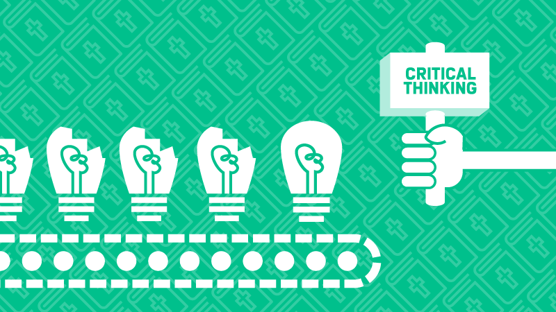
새로운 기술이나 기법을 익힐 때와 마찬가지로, 어디에서든 시작해야 한다. 실제로 게임 디자이너들이 자주 쓰는 기초와 용어를 속성으로 훑는 것이 시작점으로는 가장 좋다. 여기에서 다루는 내용의 상당 부분이 앞으로 나올 내용의 토대를 이루기 때문이다.
기본 역량으로서의 게임 디자인은 스스로 배우고 훈련해야 하는 것이다. 좋은 게임 디자이너가 되려면 수년의 연습과 경험이 필요하다는 사실은 피해 갈 수 없다.
가장 뛰어난 게임 디자이너들은 게임을 만드는 일과 게임을 하는 일 양쪽에 중심축을 두고 있다. 어린 시절부터 즐겁게 플레이해 온 방대한 게임 목록을 이미 갖고 있다면 그것만으로도 게임 디자인의 좋은 바탕이 된다. 다만 더 나아가려면 게임 디자이너가 하듯 비평적인 눈으로 게임을 플레이해야 한다.
모딩은 게임 디자인을 해체하고 이해하기 시작하는 훌륭한 출발점이다. 새 레벨을 디자인하고 게임의 메커닉을 조정해 그 영향을 직접 보는 일에 관여하다 보면 사고방식이 실제로 바뀔 수 있다.
게임 디자인을 익히는 또 다른 방법은 핵심이 되는 몇몇 게임을 반드시 끝까지 플레이하는 것이다. 극도로 경쟁적인 플레이어가 되면 디자이너가 가하는 작은 변경과 그것이 커뮤니티에 미치는 영향에 훨씬 더 민감해진다. Twitch, YouTube, 그리고 커뮤니티 중심의 수많은 게임이 있는 지금보다 이 일을 시작하기 좋은 시기는 없다.
이 외에도 다양한 게임을 폭넓게 플레이하는 일이 반드시 필요하다. 대형 히트작만이 아니라 여러 플랫폼에 걸쳐 좋은 게임과 나쁜 게임을 꾸준히 플레이해야 한다. 매주 새 게임을 하나씩 집어 들고 그 게임이 성공하거나 실패한 이유를 깊이 파고들면 일상적인 디자인 업무에 엄청난 도움이 된다. 경험의 라이브러리에서 끌어 쓸 수 있다는 점이 핵심이기 때문이다. 전에 본 흥미로운 메커닉을 섞고 맞춰 보는 능력, 그리고 어떤 메커닉이 실패할 가능성이 높은지 알아보는 능력은 오직 아주 다양한 게임을 열심히 플레이하는 데서만 나온다.
아래는 우리가 수년간 게임 디자인의 발판을 마련하는 데 사용한 책, 글, 블로그다. 우리에게 그랬듯 여러분에게도 영감이 되기를 바란다.
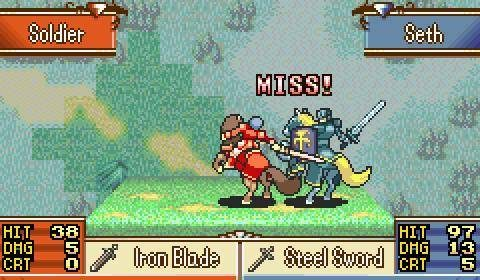
최고 매출 차트에 오르기 위해 필요한 조건을 장기 Retention, 수익화, UA 예산으로 나누고 LTV와 CPI의 관계로 정리한다.
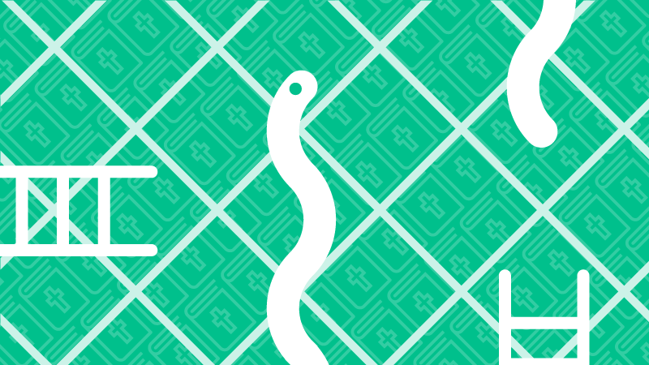
최고 매출 차트에 오르려면 무엇이 필요한가? 모든 모바일 개발자가 던져 본 질문이지만 실제로 답을 가진 사람은 아주 적다.
은탄환도 없고 마법 공식도 없다. 넓은 호소력을 갖고 수백만 명의 플레이어를 끌어들이면서, 동시에 플레이어를 수년간 붙잡아 두고 그 기간 내내 수익화할 만큼의 깊이도 갖춘 게임을 만드는 일은 대단히 어렵다. 그렇다고 App Store에서 이기기 위한 기본 규칙이 없다는 뜻은 아니다. 오히려 그 반대다.
디자인 측면에서 F2P 게임과 프리미엄 제품의 근본적인 차이는, F2P 게임의 목표가 더 이상 짧고 자기완결적인 경험을 제공하는 데 있지 않다는 점이다. 대신 플레이어가 수년간 계속 플레이하고 계속 결제하게 만드는 제품이 되어야 한다.
필요한 것은 다음과 같다.
의미 있는 매출을 만들어 낼 만한 사용자 볼륨을 확보해야 하기 때문이다. 사용자당 금액이 높은 훌륭한 F2P 게임을 갖고 있더라도 플레이어가 1,000명뿐이라면 충분한 돈을 벌 수 없다.
이 주제는 GDC 발표 In it for the Long Haul에서 깊이 다뤘다. 게임이 장기 Retention을 만들어 내는 이유와 방법에 관한 발표다.

결론은 이렇다. 재미있는 게임만으로는 충분하지 않다. F2P에서 성공하려면 지속되는 재미가 필요하다. F2P 게임은 대규모 플레이어 기반을 유지하고 그들을 시간에 걸쳐 수익화할 수 있을 때만 제대로 굴러간다. 시스템이 깊지 않고 오래가지 않으면 아무것도 팔 수 없다. 플레이어가 게임의 끝에 너무 빨리 도달하고, 상위 플레이어는 게임을 완료했다는 느낌과 함께 떠나기 때문이다. Candy Crush 같은 게임에 수천 개의 레벨이 있는 이유, 그리고 PvP 게임이 대체로 F2P 시장을 지배하는 이유가 여기에 있다.
다만 경쟁자를 이기려면 F2P를 작동하게 만드는 기본 공식을 알아야 한다. 게임의 LTV가 CPI보다 커야 한다.
LTV는 Lifetime Value다. 평균적인 플레이어가 게임을 플레이하는 전체 기간에 걸쳐 지출하는 금액이다. 이는 Retention 곡선(플레이어가 게임에 얼마나 오래 남는가)에 그 곡선 위에서 수익화하는 게임의 능력을 곱한 값을 반영한다. 높이려면 플레이어를 더 오래 붙잡거나 그 경험에서 더 잘 수익화해야 한다.
CPI는 Cost per Install이다. 마케팅이 고객을 게임 설치와 실행 시점까지 밀어붙이는 데 평균적으로 지출해야 하는 비용이다. 이 숫자는 마케팅뿐 아니라 게임의 테마, 전제, 아트 스타일에 크게 좌우된다. 설치할 만큼 게임을 마음에 들어 하는 플레이어를 확보하는 데 비용이 얼마나 드는가?
이 두 숫자를 최적화하는 것이 F2P 게임에서 성공하는 유일한 길이다. 경쟁자를 이기려면 더 높은 LTV 또는 더 낮은 CPI가 필요하다.
소규모 개발사라면 이 방정식을 어떻게 성립시킬 수 있을까?
우선 훌륭한 게임이 필요하다. 쉬운 성취는 아니지만 LTV 대 CPI 방정식을 성립시키려면 이것이 기반이 되어야 한다. 훌륭한 게임은 강한 Engagement와 Retention으로 이어지고 이는 경쟁력 있는 LTV의 기준선이 된다. 다만 Retention은 강한 수익화가 뒷받침될 때만 쓸모가 있다. 건강한 LTV(2달러 이상)를 맞췄다면, 그다음은 사용자를 영리하게 확보하는 방법을 살펴보는 것이 가장 좋다.
CPI는 매력적인 게임을 만드는 일에 달려 있다. 고유하고, 넓은 호소력을 가지며, 아름다운 브랜드를 갖춘 게임을 만드는 것은 분명 CPI를 낮추는 데 도움이 된다. 그러므로 프로덕션 과정에서 새롭거나 고유한 무언가를 만드는 데 드는 가치와 노력을 과소평가하지 말아야 한다. 첫 시도에서 찾아내지는 못할 것이다. 게임 디자인은 공연이 아니라 과정이고, 만들면서 배우게 된다.
F2P에서 성공하는 방법을 정의하는 일은 간단하지 않다. 다음 글들에서 조금씩 나눠 설명해 보았다.
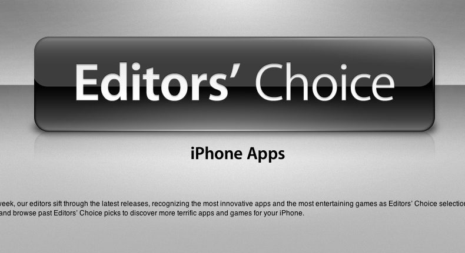
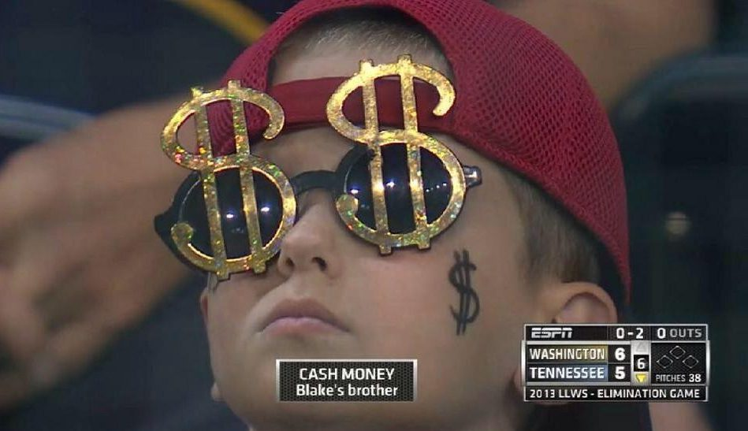
시장 조사가 왜 필수인지, 서브 장르마다 성공의 정의가 어떻게 달라지는지를 Subway Surfers 사례로 설명한다.
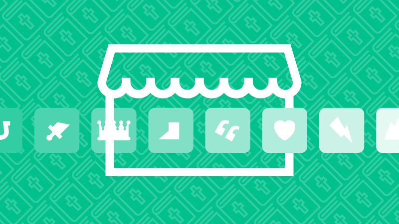
해마다 시장은 변한다. 전에 통했던 것이 다시 통하지 않을 수 있고, 블루오션처럼 보였던 곳이 갑자기 붐빌 수 있다. 다른 사람들이 시장에서 무엇을 하고 있는지, 특히 어느 정도 성공을 거두고 있는 쪽이 무엇을 하는지 잘 살펴보는 일이 대단히 중요하다.
무엇이 통하고 어떤 트렌드가 가장 인기 있는지 시장을 조사하는 일은 게임을 성공에 유리한 위치에 놓는 데 분명 도움이 된다. 유념할 점은 어떤 장르는 F2P 게임 디자인에 잘 맞는 반면 어떤 장르는 성과가 나쁘다는 사실이다. 어떤 장르는 한 영역에서는 강한 지표를, 다른 영역에서는 약한 지표를 낸다. 자신의 장르와 경쟁자가 어떻게 성공하는지, 그들의 성공 열쇠가 무엇인지 아는 일은 이 시장에서 살아남는 데 반드시 필요하다.
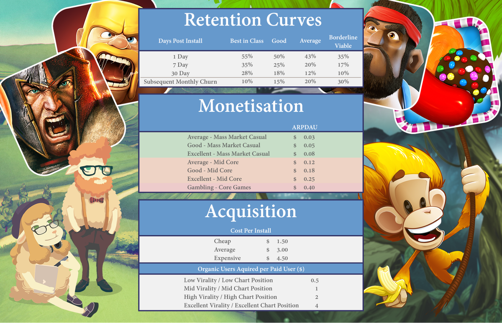
출처: Pocket Philospopher
게임의 모든 서브 장르는 성공을 정의하는 방식이 크게 다르다. Subway Surfers를 성공하게 만든 것과 Game of War를 성공하게 만든 것은 매우 다르다. 그 차이와 성공하는 방법을 이해하는 일이 반드시 필요하다.
예를 들어 Subway Surfers는 (매우 넓은 호소력을 가진 게임이었기에) 놀라운 Retention으로 살아남았지만, 동시에 마케팅 비용이 훨씬 적게 들던 2012년 이전에 출시됐다는 점도 작용했다. 이 게임은 거의 무료에 가까운 사용자 확보에 힘입어 지금까지 살아남았고, 이제는 모바일에서 오래 지속되는 인지도 높은 브랜드를 만들어 냈다.
Apple의 피처링 자리와 팬층의 입소문을 계속 확보하면서, Subway Surfers는 사용자당 LTV가 낮은데도 살아남을 수 있다. CPI가 충분히 낮아 그것이 문제가 되지 않기 때문이다. 이 공식을 그대로 따라 하려는 사람은 대단히 어렵다는 것을 알게 될 것이다. 무한 러너가 등장하기 전보다 시장이 훨씬 까다로워졌다. 지금 시대에는 Spiderman Infinite의 경로를 택해야 한다. 훌륭한 핵심 무한 러너를 갖추는 것에 더해 브랜드와 더 깊은 메커닉을 함께 가져야 한다.
시장과 목표로 삼는 대상을 이해하는 일은 그 안에서 지속적인 위치를 확보하려면 반드시 필요하다. 조사를 하지 않으면 성공 가능성이 전혀 없는 게임을 붙들고 일하게 될 수도 있다.
시장을 주시하는 방법에 관해 우리가 찾은 최고의 팁은 아래 링크에서 확인할 수 있다.

Core Loop를 ACTION, REWARD, PROGRESS 세 부분으로 정의하고, 이 반복 구조가 장기 Retention의 토대가 되는 이유를 설명한다.
Core Loop는 F2P 게임이 주류가 되면서 널리 퍼진 용어이지만, 임원들이 던지는 유행어 이상의 것이다. 게임은 Core Loop의 설계에 따라 살고 죽는다.
Core Loop는 플레이어가 게임 전체에 걸쳐 반복적으로 하게 될 일을 서술한 것이다. 여러 모드가 있고 플레이 방식이 여러 가지라 하더라도, 플레이어가 반복적으로 하게 되는 무언가는 항상 존재한다. 그것이 충분히 집중되어 있지 않거나 지나치게 복잡하면 플레이어는 혼란스러워하고, 결국 기대한 것을 전달하지 못한 비대한 게임만 남는다.
모든 게임에서 Core Loop는 대체로 세 부분으로 이루어진다.
어떻게 시각화하든 모든 Core Loop에는 이 세 가지 핵심 요소가 있어야 한다. 없다면 그 루프는 아예 작동하지 않는다.
이런 방식으로, 게임을 즐기는 플레이어는 언제나 진행을 만들고 있다고 느낀다. 이는 곧 시간이 지날수록 플레이어가 더 많이 플레이할수록 더 많이 보상받는다고 느낀다는 뜻이다. 마찬가지로 더 많이 플레이할수록 자신이 얼마나 멀리 왔는지를 계속 상기하게 된다. 진행을 만들어 냈다는 느낌과 앞으로 올 진행에 대한 예고가 결합된 것이 강한 장기 Retention의 근간이다.
F2P 게임은 장기 Retention에 관한 것이다. 며칠이 아니라 수년간 지속되는 게임을 만드는 일이다. Core Loop는 게임 전체의 토대를 제공한다. Core Loop가 몰입감 있고 반복 가능할수록, 플레이어가 게임을 즐기게 하기 위해 팀이 산더미 같은 콘텐츠를 만들어야 할 필요가 줄어든다.
Candy Crush 같은 게임은 돈을 벌고 플레이어를 유지하기 위해 수천 개의 레벨이 필요하다. Brawl Stars와 Clash Royale 같은 게임은 Core Loop 자체가 워낙 몰입감이 커서 Supercell은 이따금씩만 새 콘텐츠를 추가하면 된다. 여러분의 게임에서 플레이어를 계속 플레이하게 하려면 무엇이 필요한가?
다른 주요 타이틀의 Core Loop 사례는 우리의 해체분석에서 확인할 수 있다.


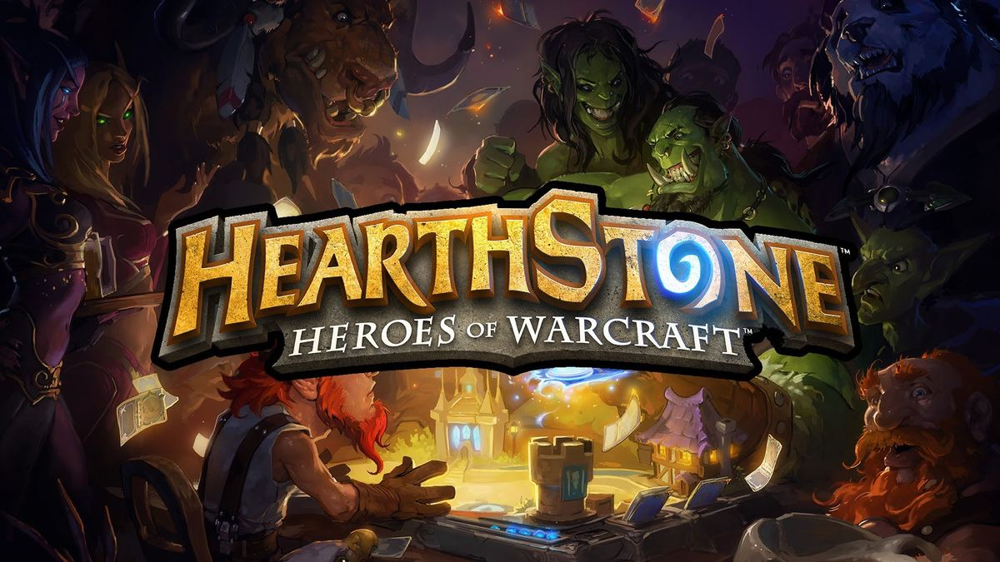
이 외에도 강한 Core Loop를 만드는 방법과 Core Loop를 확장 가능하게 만드는 방법을 다룬 글들을 모아 두었다.
재미의 본질을 패턴 학습으로 보는 Raph Koster의 관점을 바탕으로, 무한히 풀 수 있는 문제와 피드백 설계를 설명한다.
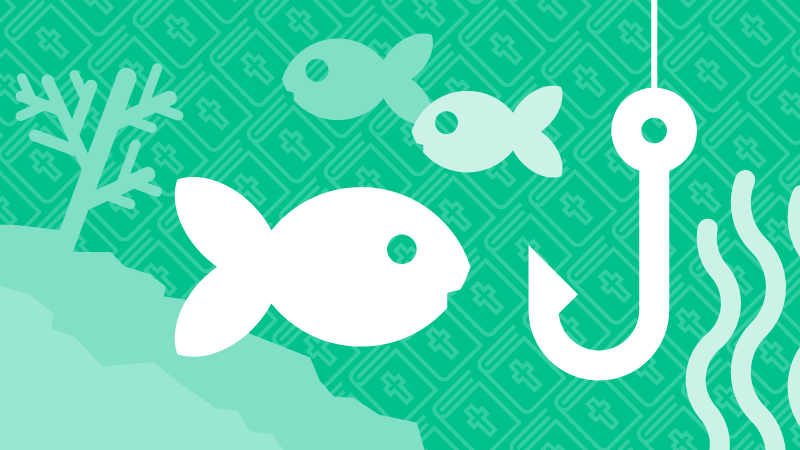
게임을 개발하고 디자인하는 일은 고유한 핵심 행동을 찾아내는 것을 중심으로 돌아간다. 바라건대 사람들이 즐기는 행동이어야 한다.
다만 코어 경험을 만드는 일은 게임 디자인에서 가장 어려운 부분 중 하나이며, 진행 구조나 재화, Core Loop에 비해 간과되곤 한다. 플레이어가 코어 게임플레이를 재미있다고 느끼지 않으면, 재화를 아무리 영리하게 짜고 진행 구조를 아무리 잘 설계해도 소용이 없다. 그들은 남지 않는다.
재미있는 코어 게임을 만드는 일은 예술이지만, 대부분은 사람들이 무언가를 재미있다고 느끼는 핵심 원리를 이해하는 것과 관련되어 있다. 무엇이 게임을 작동하게 하는지를 이해하는 일이다.
A Theory of Fun의 저자 Raph Koster에 따르면, 좋은 게임은 궁극적인 본질로 압축된다. 학습의 연쇄와 패턴 매칭이다. 어떤 장르든, 어떤 게임이든, 게임의 재미있는 부분은 패턴을 식별하고 배운 것을 적용해 게임에서 이기는 데 있다.
게임은 결국 이 패턴들을 학습하는 일이 된다. 같은 이유로, 가능한 패턴을 모두 보고 나서 같은 문제를 계속 반복해서 받게 되면 게임은 결국 지루해진다. 플레이어가 게임을 풀어냈다고 느끼면 게임은 진부해진다. Tic-Tac-Toe 같은 게임이 그토록 빨리 지루해지는 이유가 여기에 있다. 플레이어가 게임을 이기는 법을 금방 배우기 때문이다. Starcraft 같은 게임이 수십 년간 지속되는 이유도 같다. 플레이할 때마다 상대가 무엇을 가져올지, 어떤 패턴을 쓸지에 대한 불확실성이 워낙 커서, 상대를 이기는 법을 배우는 일이 평생의 추적이 된다.
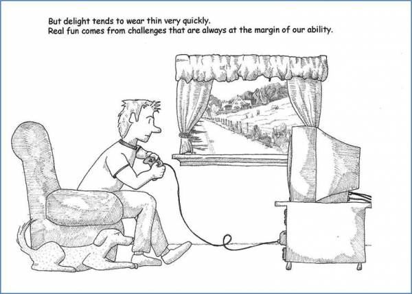
출처: Raph Koster, “Theory of Fun”
그러므로 F2P 게임에서 코어 게임플레이 디자인의 기술은 플레이어가 풀 수 있는 문제를 만드는 데 그치지 않는다. 플레이어가 시간에 걸쳐 무한히 풀 수 있는 문제, 언제나 새로운 도전을 주고 새로운 것을 배우도록 밀어붙이는 문제를 만드는 일이다. (게다가 개발자가 엄청난 양의 작업을 하지 않아도 되면 더 좋다.)
이 학습의 흐름을 만들고 관리하는 일은 시간에 걸쳐 플레이어에게 적절한 도전과 피드백을 주는 것이다. 플레이어를 압도할 만큼 과도한 피드백이나 자극을 주지 않는 것. 스스로 멍청하다고 느끼거나 넘어설 수 없다고 느낄 만큼 어려운 문제를 주지 않는 것. 대신 시간에 걸쳐 이 도전과 복잡도의 균형을 잡아, 플레이어가 계속 배우고 있다고 느끼고 게임 안에 언제나 흥미로운 무언가가 벌어지고 있다고 느끼게 하는 것이다.
이런 종류의 피드백을 만드는 방법은 Stats, Skill and Luck을 다룬 글에서 정확히 설명했다.

이 흐름을 관리하는 일은 피드백에 관한 것이다. 게임에서 피드백은 Super Effective! 텍스트, 사운드, 파티클 이펙트를 비롯한 여러 형태로 나타날 수 있다. 플레이어가 무언가를 옳게 또는 그르게 했다는 사실을 되돌려 주는 모든 것이다. 피드백을 플레이어에게 명확하게, 보기에 즐겁게, 몰입감 있게 만드는 일이 코어 게임플레이를 재미있게 느끼도록 돕는다.
PopCap의 디자이너들이 Bejeweled에서 떨어지는 보석의 애니메이션을 다듬는 데 수개월을 쓴 이유, 그리고 Call of Duty 같은 게임이 헤드샷의 혈흔을 만드는 데 그토록 집중하는 이유가 있다. 게임이 긍정적·부정적 피드백을 전달하는 방식이 게임을 재미있게 만든다. 많은 경우 흥미로운 코어 게임플레이란 단지 피드백의 방법을 더 추가하는 일이다. 코어 게임플레이에서 재미를 더 짜내고 싶은 사람이라면 이 발표를 보기를 권한다. 플레이어 상호작용을 더 흥미롭게 만드는 미묘한 지점을 훌륭하게 짚어 낸다.
이를 제대로 해내려면 수년의 경험이 필요하다. 며칠이 아니라 수년간 몰입감을 유지할 수 있는 게임을 만드는 데는 많은 반복과 시간이 든다. 이를 파악해 보려는 사람을 위해 계획을 세우는 데 도움이 될 자료들을 모아 두었다.
일일 세션 수와 세션 길이를 다루며, Starbucks Test와 Commuter Test라는 두 기준을 제시한다.
성공적인 F2P 게임 디자인은 사람들을 계속 몰입시키고 반복해서 돌아오게 만드는 게임의 능력을 중심으로 돌아간다. 그런 점에서 세션 디자인은 사람들을 어떻게 게임 안으로 부드럽게 들이고, 이어서 타이머와 에너지를 통해 어떻게 다시 부드럽게 내보낼 것인지를 다룬다.
세션 디자인은 흔히 일일 세션 수와 세션 길이로 측정된다.
높은 일일 세션 수를 끌어내려면 영리해야 한다. 경쟁력을 유지하기 위해 하루에 20번 넘게 돌아와 몇 시간씩 플레이하라고 요구하는 것은 플레이어 기반을 쫓아내는 손쉬운 방법이다. 대신 디자이너는 훨씬 더 미묘해야 한다. 플레이어에게 언제나 돌아올 이유를 주되, 강요당한다는 느낌 없이 게임 안에 조금 더 머무르기 쉽게 만들어야 한다.
모바일에서는 Starbucks Test가 흔한 기준점이다. 플레이어가 게임을 켜고, 한 판을 하고, 어느 정도 진행을 만들고, 종료하는 일이 스타벅스에서 커피를 주문하는 데 걸리는 시간, 즉 2분 안팎에 모두 이루어져야 한다는 뜻이다. 이는 Core Loop가 빨라야 한다는 것을 의미한다. 최대 2분이다. Clash Royale의 라운드가 그토록 짧은 이유, CSR의 레이스가 그토록 보상감 있게 느껴지는 이유가 여기에 있다. 모바일에서 빠르고 보상감 있는 세션을 플레이할 수 있게 하는 일은 반드시 필요하다.
다만 Commuter Test도 있다. 플레이어가 지하철에서 20분 남짓 시간을 보내야 할 때처럼, 자신에게 더 긴 시간이 주어졌을 때 게임 안에 할 일이 언제나 있어야 한다는 것이다. 여기에서 핵심은 플레이어가 게임에서 쫓겨났다고 느끼는 상황(예: 라이프를 다 썼다, 더 지을 것이 없다)을 만들지 않고, 대신 언제나 할 일이 있도록 보장하는 것이다. 시간이 지나면 플레이어가 게임을 떠남으로써 이득을 얻게 되더라도 그렇다. Clash of Clans 같은 게임이 게임을 활성 상태로 유지하는 플레이어에게 보상하는 이유가 여기에 있다.
그렇다면 이 두 시험을 어떻게 통과할 것인가? 강한 세션을 끌어내기 위해 디자이너로서 무엇을 할 수 있는가? 이에 대한 생각을 여러 글에 걸쳐 정리했다.
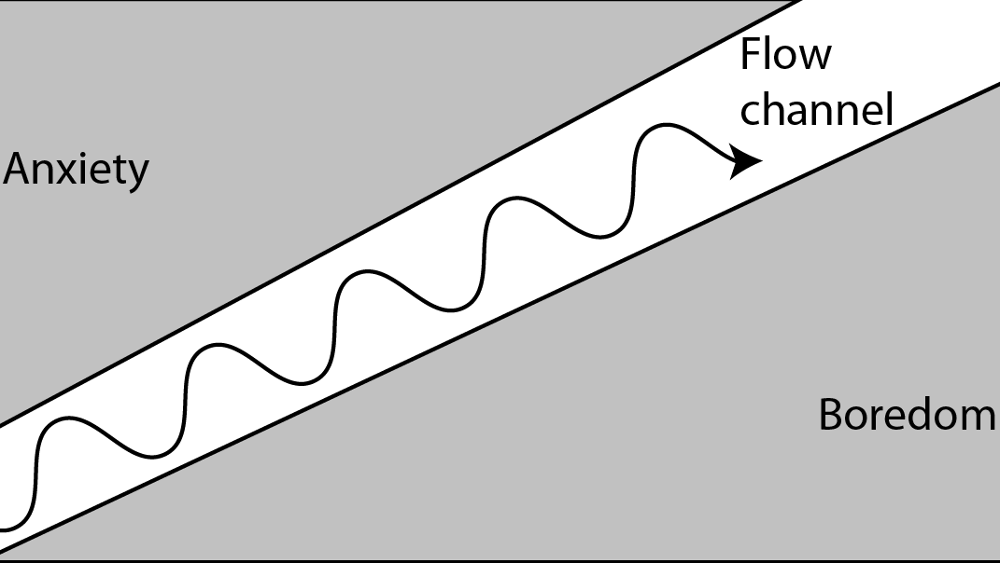
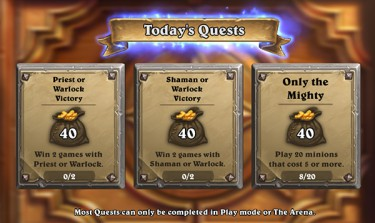
모바일의 요구 조건과 하루 여러 번의 강한 세션을 동시에 충족하는 유연한 세션을 만드는 일이 좋은 세션 디자인의 핵심이다. 더 자세한 내용은 아래 링크에서 확인할 수 있다.
Retention의 기본 점검 항목을 나열하고, Core Loop, 튜토리얼, 메타, 프로덕션 밸류의 네 층으로 Retention이 쌓이는 구조를 설명한다.
Retention은 깊은 주제다. 어떻게 하면 플레이어가 아주 오랫동안 매일 계속 돌아오게 만들 수 있을까?
쉬운 답은 기본기를 제대로 갖추는 것이다.
다만 이런 명백한 것들을 넘어서면 Retention은 점점 더 고치기 어려워진다. 특히 프로덕션 후반에는 더욱 그렇다. Retention이 어떻게 쌓이는지 설명할 때 우리가 흔히 쓰는 그래프가 있다.
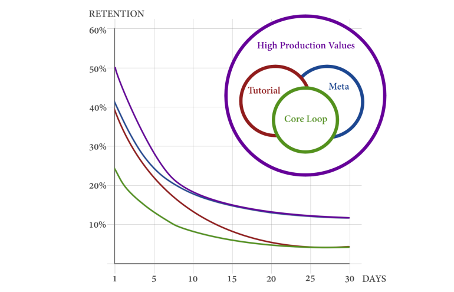
출처: Pocket Philosopher
Core Loop의 설계가 Retention의 바닥이다. Core Loop가 중독성 있고 오래가도록 만드는 일이 반드시 필요하다. 오래가는 메커닉이 없다면, 플레이하기 재미있는 코어 게임플레이가 없다면, 그 위에 아무리 많이 얹어도 게임의 Retention은 떨어진다. 오래가는 메커닉을 만드는 방법은 여기에서 이어 읽을 수 있다.
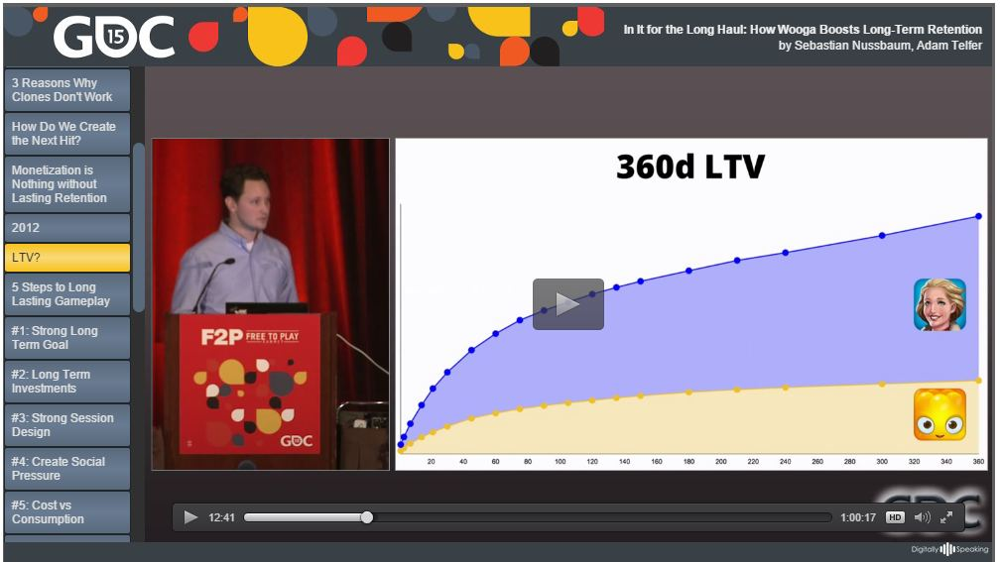
튜토리얼과 온보딩은 초기 일자의 Retention을 극적으로 개선할 수 있다. 대상 이용자의 이해도를 높이고 첫 주 플레이에 명확한 안내를 제공하면 이후 Retention 퍼널에서 그 값을 돌려받을 수 있다.
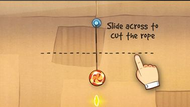
메타는 장기 Retention을 규정한다. 게임에 오래가는 시스템이 있는가? 게임이 시간에 따라 변한다고 느껴지는가, 아니면 반복적으로 느껴지는가? 플레이어가 언제나 같은 컴퓨터 상대와 싸우는가, 아니면 결국 사회적 경쟁에 합류하는가? 더 장기적인 목표를 어떻게 끌어낼지 고민하는 일은 반드시 필요하다. 플레이어를 단순한 캐주얼 플레이어에서 취미로 삼는 사람으로 옮기는 주된 방법이기 때문이다. 이 주제는 방치형 게임을 분석하며 깊이 다뤘다.
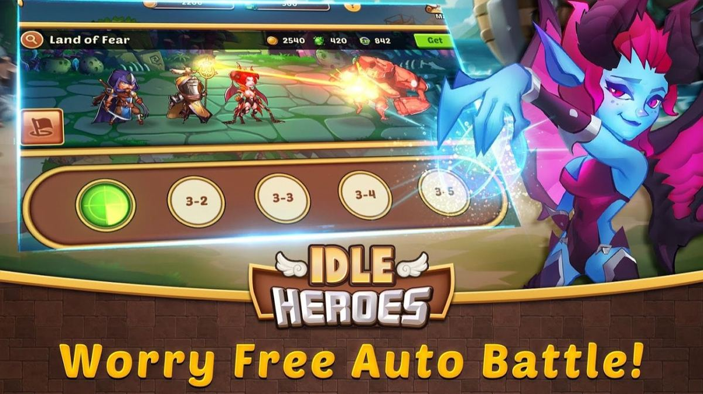
마지막으로, 높은 프로덕션 밸류(뛰어난 아트와 비주얼)도 F2P에서 자리가 있다. 보기 좋고 느낌이 좋은 게임을 만드는 일은 마케팅과 초기 Retention에 영향을 준다. 다만 장기 Retention을 끌어내지는 못한다. 직관적으로도 플레이어는 결국 아트에 싫증을 내고, 아트는 그들이 돌아오는 결정적 요인이 되지 못한다. 그 일은 밑에 깔린 시스템이 해야 한다.
그러므로 자신의 곡선을 보면서 Core Loop, 튜토리얼, 메타, 프로덕션 밸류의 네 항목에 걸쳐 스스로를 평가해 보라. 게임이 가장 약한 영역은 어디인가?
게임의 Retention을 최적화하는 방법에 관해서는 이어서 읽어 보라.
인플레이션을 경제 디자이너의 적으로 규정하고, 경제 설계에 필요한 스프레드시트 역량을 항목별로 나열한다.
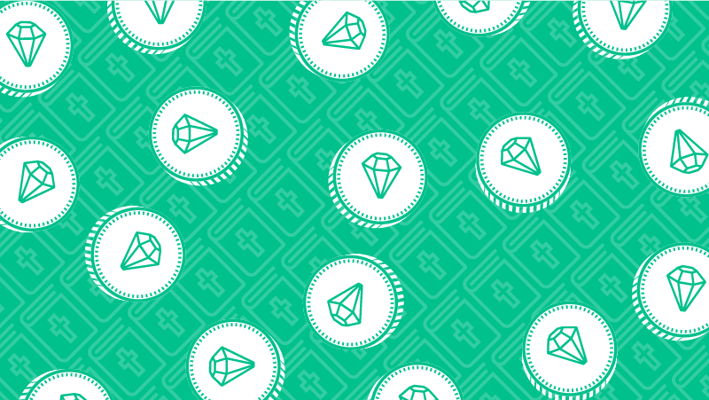
가상 경제의 설계와 밸런싱은 지난 10년간 게임 디자이너의 가장 중요한 역량 중 하나가 됐다.
중요도가 이렇게 바뀐 것은 게임이 더 이상 10~20시간의 게임플레이만 버티면 되는 것이 아니라 이제 수년을 버텨야 하기 때문이다. 경제는 확장 가능한 시스템을 만드는 열쇠다. 경제 디자이너로서 게임에 관련된 재화가 언제나 빠듯하도록, 언제나 플레이어가 원하는 상태로 유지하는 일이 여러분의 책임이다.
인플레이션은 경제 디자이너의 적이다. 인플레이션을 피하고 Source와 Sink를 관리하는 일은 F2P 게임 디자이너의 핵심 업무다. 재화가 지나치게 흔해지면 두 가지 주요 문제가 생긴다.
경제를 확장하고 인플레이션을 관리하는 기술은 다음 글들에서 다룬다.
경제 디자인이라는 흑마법을 익히는 첫걸음은 Excel이나 다른 스프레드시트 소프트웨어에 익숙해지는 것이다. 다음을 할 수 있어야 한다.
Excel의 하드 스킬을 아는 것을 넘어서면 어려운 부분이 온다. 언제 어떻게 새로운 재화와 새로운 메커닉을 만들지 이해하는 일, 그리고 이 파라미터를 조정했을 때 게임에 무슨 일이 일어날지 예측하는 일이다.
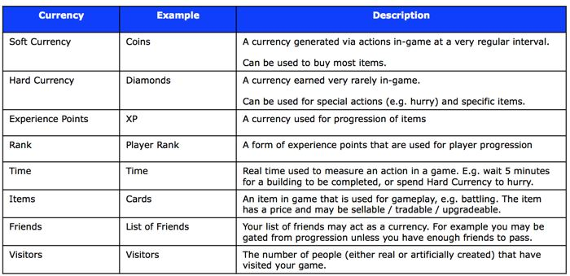
출처: Both Guns Blazing
재화에는 여러 종류가 있고 게임마다 크게 다르다. 경쟁작과 그들의 경제를 플레이하고 분해할 수 있는 능력은 자신의 게임을 개선하는 방법을 이해하는 데 중요하다. 오늘날 모바일에서 가장 성과가 좋은 경제 몇 가지를 우리가 어떻게 분해했는지 이어서 읽어 보라.


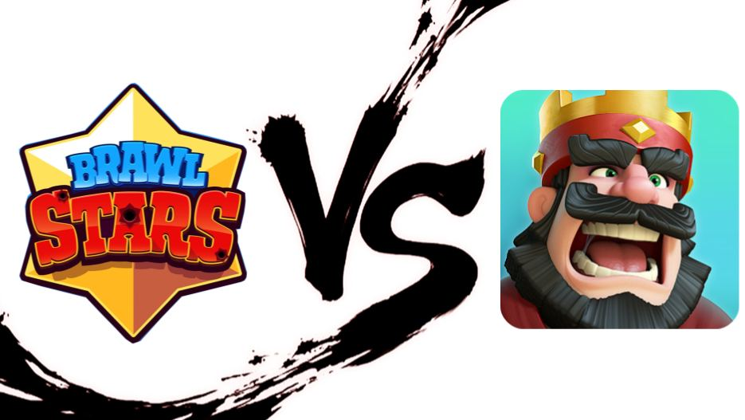

경제 만들기와 밸런싱에 관해 더 알고 싶다면 이어서 읽어 보라.
무작위 결과가 어떻게 나오든 플레이어가 진행을 느끼도록 보장하는 일과, Gacha에 충분한 깊이를 두는 일을 다룬다.
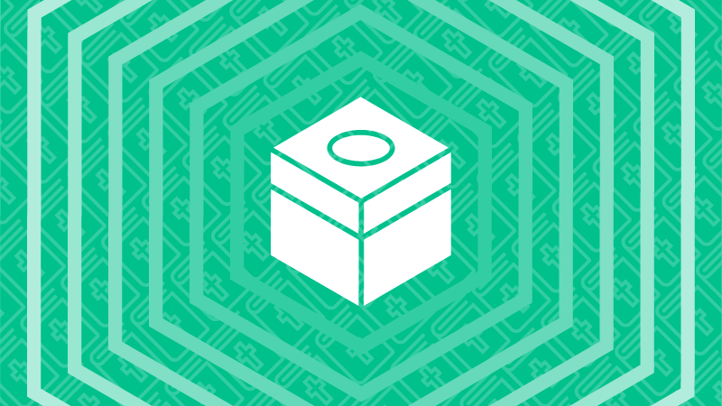
루트박스와 Gacha는 대단히 논쟁적인 형태의 게임 디자인이다. 수익화 잠재력 때문에 수익성이 높고, 좋든 싫든 F2P 생태계가 번성하도록 만들었다.
이제 F2P 디자인은 타이머로 굴러가는 대기 축제를 만드는 쪽으로만 밀려가지 않는다. 대신 게임은 플레이어가 Gacha의 모든 콘텐츠를 모으기 위해 벌이는, 거의 끝나지 않는 추적에 기댈 수 있다.
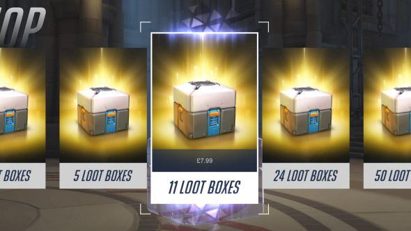
출처: Overwatch
Gacha는 궁극적으로 무작위성이 어떻게 작동하는지 이해하고, 게임의 시스템이 어떤 결과든 감당할 수 있도록 보장하는 문제로 귀결된다. 개발자는 Gacha에서 무엇이 나오든 플레이어가 좋은 시간을 보내도록 만들어야 한다. Gacha의 순수한 무작위성은 많은 구매 후회로 이어질 수 있고, 더 나쁘게는 게임에서의 이탈로 이어질 수 있다. Gacha에서 무엇이 나오든 플레이어가 진행을 만들고 있다고 느끼도록 보장하는 일이 Gacha 시스템의 핵심이다.
각 드롭이 훌륭하게 느껴지도록 보장하는 방법은 여기에서 자세히 다룬다.
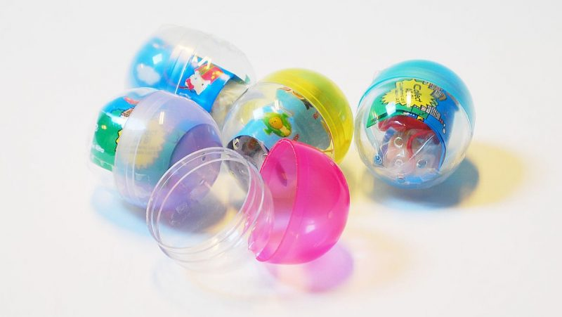
그 외에는 Gacha에 충분한 깊이가 있도록 보장하는 일이 전부다. 너무 많은 게임이 실패하는 이유는 Gacha가 모든 콘텐츠를 해금하기에 너무 쉬워서, 그 콘텐츠가 결국 플레이어에게 쓸모없어지거나 플레이어가 진행을 위해 더 이상 Gacha의 콘텐츠를 필요로 하지 않게 되기 때문이다. 이 글에서는 Clash Royale과 Brawl Stars를 비교해 깊이가 얼마나 중요한지 측정한다.

작동하는 Gacha와 루트박스를 만드는 주제를 깊이 파고든 여러 가이드를 정리해 두었다. 이어서 확인해 보라.
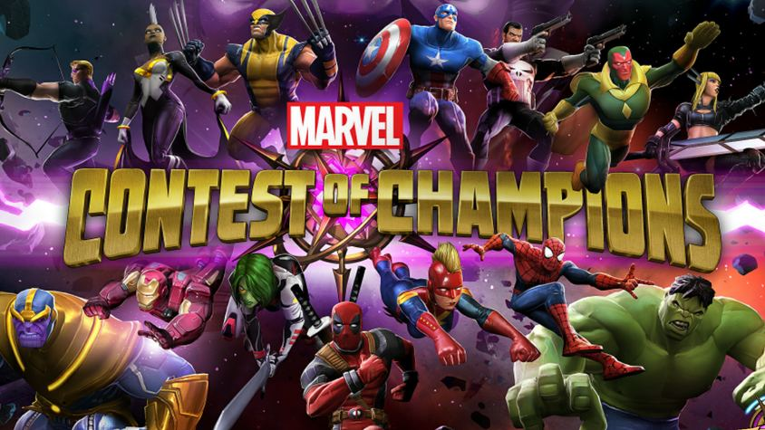
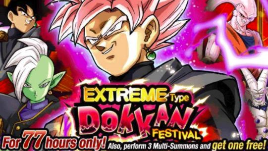
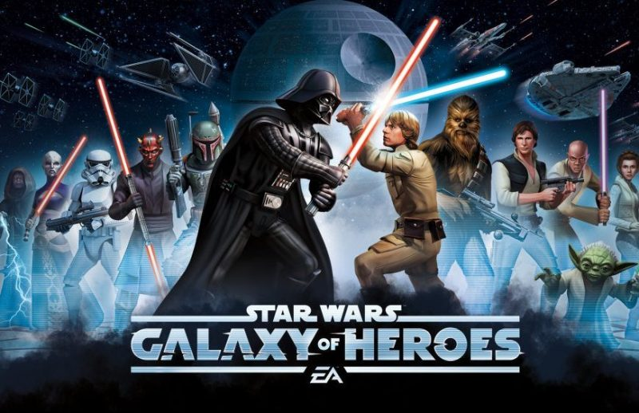
F2P 수익화의 본질을 시간의 수익화로 규정하고, 프로토타입 단계에서 수익화 가능성을 판단하는 문제를 다룬다.

어떤 F2P 게임이든 게임플레이의 코어가 플레이어가 지출할 수 있는 시스템을 중심으로 구성되도록 해야 한다.
F2P 게임 디자인에서 가장 큰 오류 중 하나는 나쁜 게임을 만드는 것이 아니라, 플레이어가 어떻게 결제할지를 처음부터 고려하지 않은 게임을 디자인하는 것이다.
수많은 F2P 게임이 출시되고 실패했으며, 초기에 수익화를 더 고민했어야 했다는 것은 많은 개발자가 갖는 후회다. 일이 벌어진 뒤에야 그들은 그저 좋은 게임을 만드는 대신 게임이 어떻게 돈을 벌지 훨씬 더 깊이 생각했어야 했음을 깨닫는다.
수익화를 초기에 평가하는 법을 배우는 일은 어렵다. 대부분의 자료는 영리한 수익화 메커닉(예: 인앱 결제 가격 책정, 한정 시간 오퍼, VIP 시스템, 세일 등)을 이야기하지만, 초기 프로토타입이 결국 수익화하는 데 필요한 것을 갖췄는지 어떻게 알 수 있는지에 관한 정보는 드물다. 흔한 논조는 좋은 수익화는 좋은 Retention에서만 나온다는 것이다. 마치 재미있는 게임을 만들기만 하면 본질적으로 수익화가 된다는 듯이 말이다. F2P 게임을 출시해 본 사람이라면 이것이 전적으로 사실은 아님을 안다.
실제로 수익화와 Retention은 강하게 얽혀 있고, 둘 다 게임 안에서 가능한 한 이른 시점에 고민해야 한다. App Store에서 경쟁하고 싶다면 어느 쪽도 우연히 마주치는 요소가 아니다.
F2P에서 수익화는 주로 시간을 수익화하는 데서 나온다. 성공한 거의 모든 F2P 게임은 플레이어에게 선택을 요구한다. 보상을 받기 위해 일정 시간 플레이하거나 파밍하거나 기다릴 것인가, 아니면 그 보상을 더 빨리 얻기 위해 결제할 것인가.
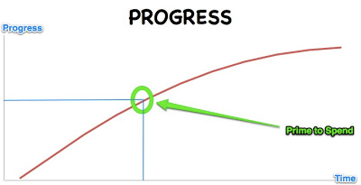
출처: Deconstructor of Fun
그 결과 수익화를 성공적으로 구현한다는 것은 플레이어가 진행을 앞당기도록 밀어붙이는 시스템을 게임 안에 설계하는 일을 의미한다. 요령은 단순히 기다리는 것보다 지금 지출하는 쪽에 즉시성이나 가치감을 부여해 지출할 유인을 만드는 데 있다.
더 자세한 내용은 다음 글들에서 확인할 수 있다.


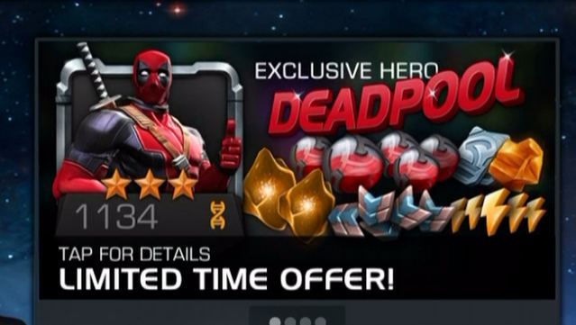
사용자 경험이 Retention에 미치는 증폭 효과와, 자체 평가가 아닌 사용자 테스트의 필요성을 설명한다.
플레이어가 제품과 어떻게 상호작용할지 개발자가 고민하는 일은 중요하다. Retention에 증폭 효과를 낼 수 있기 때문이다. Apple의 표현을 빌리면 훌륭한 사용자 경험은 그냥 작동한다.
많은 사람을 대상으로 게임을 사용자 테스트하는 일은 자신의 관점에서 평가하려 시도하는 것보다 훨씬 가치가 크다. 사람의 감정은 모바일 게임에서 강력한 도구다. 뇌의 자연스러운 보상 경로, 조작적 조건화, 사회적 신호를 이해하면 더 짜임새 있는 경험을 만드는 데 도움이 된다.
UI/UX 디자인을 익히는 일은 버튼을 예쁘게 만드는 데서 끝나지 않는다. 오히려 게임 안에서 사용자의 경험과 관련된 모든 것, 즉 메커닉을 효과적으로 전달하는 방법과 게임이 말이 되도록 보장하는 방법에 관한 것이다.
세상의 거의 모든 개발자가 수년에 걸쳐 성공을 누리고 실패를 겪었을 것이다. 그래서 다음 주제와 관련된 링크를 베스트 모음으로 정리했다.
훌륭한 사용자 경험을 만드는 방법에 관해 더 알고 싶다면 다음 글들을 확인해 보라.
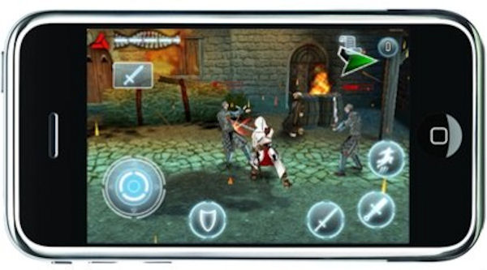
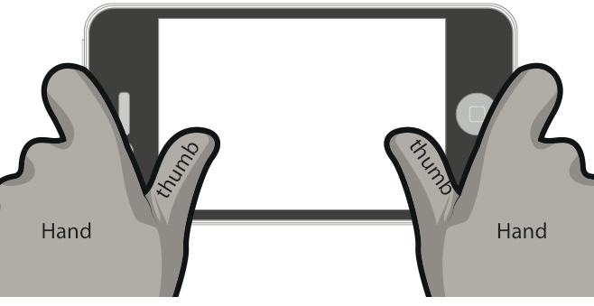


소프트 론칭의 목적을 데이터 기반 피드백 확보로 규정하고, 글로벌 론칭 준비 항목을 정리한다.
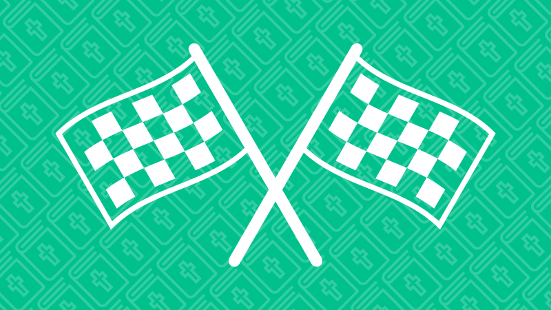
게임을 소프트 론칭한다는 것은 실제 스토어에, 실제 이용자를 대상으로, 다만 제한된 지역에서 조용히 출시하는 것을 뜻한다. 어떤 스토어와 어떤 지역을 택할지는 목표로 하는 이용자에 달려 있다. 소프트 론칭의 목적은 게임 디자인에 대한 피드백을 얻는 것이다. 그 피드백이 유용하려면 게임에 어떤 형태로든 분석 도구가 연결되어 있어야 한다. 데이터를 통해서만 개선이 자리를 잡기 때문이다.
좋은 분석이 복잡할 필요는 없다. 시작 단계에서는 중요한 부분에 먼저 집중하는 편이 낫다. 돈, 튜토리얼, Core Loop, 진행이다. 사람들이 어떻게 그리고 왜 돈을 쓰는지 볼 수 있다면 게임의 박동을 감지할 수 있다. 소프트 론칭에서는 전환이 왕이다. 단 몇 사람이라도 돈을 쓰도록 유도할 수 있는 시스템을 만들어 두었다는 것은 미래에 대한 희망이다. 전환이 전혀 보이지 않는다면 기본으로 돌아가 수익화를 다시 생각할 때다. 분석을 설정하는 방법은 이어서 읽어 보라.
또한 소프트 론칭은 게임을 접기에 타당한 시점이라는 점도 유념해야 한다. 아무런 반응이 없다면, 잘못 설계된 제품에 막대한 시간과 노력을 쏟고 있는 것일 수 있다. 비판적인 자세를 유지하고, 데이터를 따르고, 최선의 피드백을 얻기 위해 자주 배포하라.
모든 수치가 옳은 방향을 가리키기 시작하면 글로벌 론칭을 고려할 때다. 이제 요령은 시장에서 어떻게 파장을 일으킬지 생각하기 시작하는 것이다. 매주 등장하는 엄청난 수의 타이틀 때문에 모바일 게임 론칭은 대단히 경쟁적이다. 낡은 표현이지만, 제품을 돋보이게 하려면 틀 밖에서 생각하는 일이 핵심이 될 수 있다.
기본부터 시작하자면, 앱의 이름과 아이콘은 본질적으로 여러분의 명함이다. 둘 다에 가능한 한 많은 시간을 쓰라. 만족스러운 이름과 아이콘을 갖췄다면, 제품과 그 USP를 두 문장으로 설명할 수 있게 하라. 단순할수록 좋다. 그다음에는 App Store용 명확한 페이지와 미디어를 위한 그에 걸맞은 프레스 팩을 만드는 데 시간을 쓰고, 훌륭한 론칭 트레일러에 돈을 투자하라. 이것들이 없으면 어떤 미디어도 마켓플레이스도 여러분을 진지하게 받아들이지 않는다.
크리에이티브 자산이 모두 준비됐다면 이제 론칭 날짜를 정하고 그것을 지킬 때다. 모든 스토어 담당자, 언론, 게임 커뮤니티에 그 날짜를 알리고, 솔직히 말하면 그 여정을 맞을 준비를 하라. 모든 것이 맞아떨어지면 일주일 안에 100만 다운로드를 잡고 앱이 세상을 휩쓸 수도 있다. 물론 잘못되면 게임은 앱스토어의 무명 지대로 흘러 들어가 다시는 발견되지 않을 수도 있다.
론칭 전략을 계획하는 데 도움이 될 성공 사례와 유용한 자료를 더 읽어 보라.
보상형 동영상 광고의 eCPM 구조와, 게임 시스템을 훼손하지 않으면서 30초의 시청을 교환하는 설계를 다룬다.
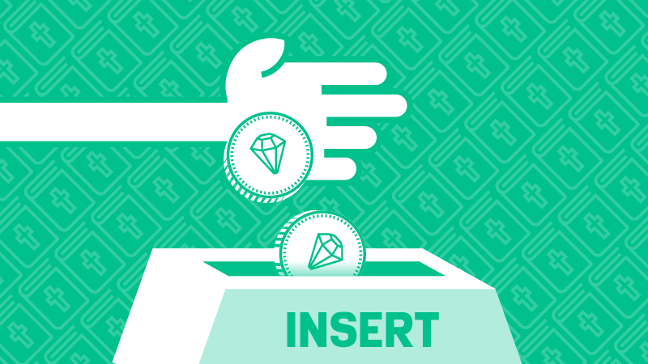
광고는 게임 안에서 직접 결제할 의사가 없는 이용자로부터 돈을 버는 훌륭한 방법이다. 광고를 넣으면 게임을 망치거나 인앱 결제 매출을 잠식한다는 믿음은 잘못됐다. 모든 증거는 광고가 2차적이고 구별되는 매출원을 제공함으로써 더 큰 매출을 뒷받침한다는 것을 보여 준다. 다만 eCPM(동영상 1,000회 노출당 유효 비용)을 극대화하려면 동영상 광고를 효과적으로 붙이는 일이 중요하다. 이 지표는 개발자인 여러분이 광고를 노출해 주는 대가로 광고주에게 지급받는 금액을 뜻한다.
광고로 돈을 벌려면 가능한 한 많은 노출을 보여 주어야 할 뿐 아니라, 플레이어가 클릭하고 나아가 광고된 게임을 설치할 가능성이 높은 시점에 그 노출을 보여 주어야 한다. 대부분의 네트워크가 이제 여러분이 만들어 낸 노출이 아니라 유도한 설치에 대해서만 비용을 지급하기 때문이다.
게임 개발자로서 여러분은 게임 안에 고유하고 강력한 경험을 만들고자 한다. 그런 다음 그것을 플레이어의 30초와 교환할 수 있고, 그 결과 돈을 벌게 된다. 가장 좋은 교환의 형태는 게임의 다른 시스템에 힘을 실어 주는 것이다. 다만 그 시스템을 우회하는 지름길이나 뒷문을 만들지 않도록 주의해야 한다.
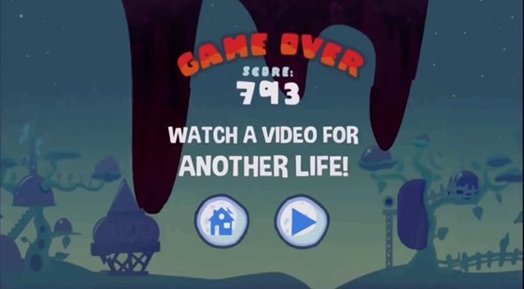
좋은 예로는 이동 횟수 추가, 병력 재보급, 일정 시간 획득량 2배, 새 콘텐츠 조기 해금이 있다. 이들 각각은 플레이어가 게임을 더 많이 플레이하고 더 많이 관여하도록 장려하고 가능하게 한다.
어떤 게임은 이용자가 더 많은 동영상을 보도록 유도하도록 특별히 설계된다. 한 손가락 터치 게임, 좌절형 게임, 클리커 게임, 빠른 아케이드 게임이 대체로 그렇다. 각 경우 플레이어는 짧은 시간 동안 강한 압박을 받으므로 광고가 만들어 내는 보상이 매우 높은 가치를 갖는 경우가 많다. 실제로 점수를 두 배로 늘리게 해 줄 수도 있다.
동영상 광고 수익화에 온전히 맞춰 게임을 설계할 때는 전 세계 기준으로 eCPM 20달러 이상을 실제로 보려면 DAU당 동영상 시청 수를 최소 3~5회까지 끌어올리는 데 집중해야 한다. 이런 유형의 게임은 플레이어가 즉시 집어 들고 플레이할 수 있도록 매우 고유하고 명확한 그래픽을 요구하는 경우가 많다.
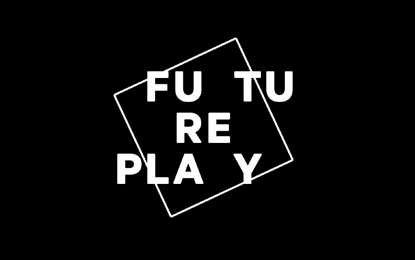
게임마다 다르므로, 매출원을 집계된 형태로 볼 때 자신의 게임이 그 인앱 결제와 동영상 광고의 비율에 들어맞아야 한다고 믿지 말라. 인앱 결제는 게임 개발자가 이용자를 수익화하는 가장 수익성 높은 방법으로 언제나 남을 것이다. 다만 그것은 게임을 특정한 방식으로 설계하도록 강제한다. 동영상 광고 수익화는 수익화되는 무료 게임을 설계하는 새로운 길을 제공하고 수익화 설계를 조금 더 느슨하게 가져갈 수 있게 한다. 그러므로 어느 쪽을 따를지 일찍 결정하고 그 방식에 맞춰 게임을 처음부터 설계해야 한다.
CTR, CPI, eLTV라는 세 KPI를 중심으로 성장 마케팅의 기본 구조를 설명한다.
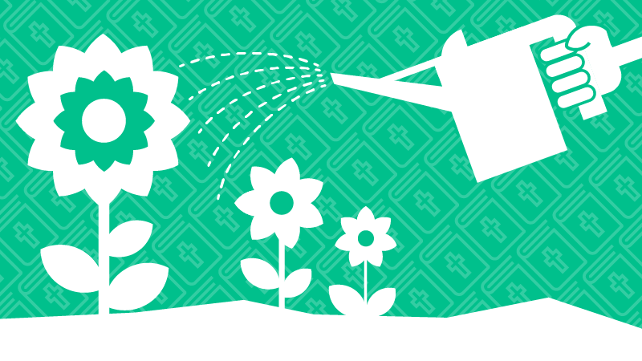
이 주제는 매우 방대하며 이 F2P 바이블의 직접적인 초점은 아니다. 다만 게임 개발자로서, 특히 소규모 팀이나 1인 인디 개발자로서 작은 규모로 게임을 키우고 마케팅하는 법을 배우는 일은 이용자를 늘리고 확장하는 데 결정적이다. 성장 마케팅에 관해 가장 먼저 기억할 점은 그것이 서로 무관해 보이는 아주 많은 원천에서 나올 수 있다는 것이다. 각각은 더 많은 사람이 앱을 설치하게 만드는 데 맞춰져 있다. 그게 전부다. 다만 그 성장을 어떻게 이룰지는 영리한 마케터에게 달려 있다.
영리한 마케터란 가장 적은 돈으로 가장 많은 설치를 얻어 내는 사람이며, 이 기준은 주마다 달라진다. 과거에 통했던 것이 미래에 통할 가능성은 더 낮으므로 언제나 새롭고 신선하며 효과적인 것을 향한 경주가 벌어진다. 핵심에는 효과를 결정하는 세 가지 주요 KPI가 있다. CTR(Click Thru Rate)은 타깃팅과 크리에이티브가 얼마나 효과적인지를 결정하고, CPI(Cost per install)는 예산으로 얼마나 많은 설치를 만들어 냈는지를, eLTV(Effective Life Time Value)는 캠페인별로 나눈 설치의 가치를 나타낸다.
이는 각 채널이 얼마나 양질의 설치를, 즉 최종 손익에 매출을 더하는 설치를 제공하는지를 뜻한다. LTV는 초기 단계에서 특히 까다로울 수 있다. 데이터가 충분하지 않아 추정치이기 때문이다. 간단한 어림 계산으로는 설치당 순이익을 지표로 쓰는 것이 좋은 팁이다. 캠페인이 만들어 낸 총이익을 총설치 수로 나눈 값이다. 이렇게 하면 아주 적은 데이터로도 캠페인이 수익성이 있을지 가늠할 수 있다.
마케터는 매체를 통제하고 활용해 제품에 관한 메시지를 만들 수 있다. 메시지가 더 좋거나 더 흥미로울수록 이용자와의 공명이 커지고, 이는 다시 캠페인의 CPI를 낮춘다. 모든 성장 마케팅이 유료여야 하는 것은 아니라는 점도 기억해야 한다. 상당 부분은 그저 밖으로 나가 사람들과 이야기하는 일일 수 있다. 무역 박람회든, 라디오든, 포럼이든 말이다. 다만 대부분의 개발자에게 모바일 앱 마케팅은 대체로 Facebook이나 Google에서 앱 설치 광고에 돈을 쓰는 일을 요구한다. 설치를 확장하는 가장 효과적인 방법이기 때문이다.
광고에서 돈을 쓰는 일은 매우 쉽다. 다만 클릭과 설치를 만들어 내는 강한 메시지를 만드는 데는 더 많은 기술이 필요할 수 있다. 동영상은 모바일 게임에서 가장 효과적인 매체임이 입증됐으므로, 좋은 동영상에 투자하고 이를 제작하는 일은 론칭 시점에 값을 돌려받을 수 있다.
앱스토어 페이지에도 집중해야 한다. 사람들이 게임을 내려받으러 왔을 때 가장 먼저 보는 것이기 때문이다. 사람들이 앱 설치로 전환할지 여부에 큰 영향을 줄 수 있고, 성공 확률을 높이는 가이드와 조정 방법이 많이 있다. 성장과 마케팅 시간의 상당 부분은 실제로는 마케팅 자체가 아니라 이용자로부터 돌아오는 데이터를 이해하는 데 쓰인다. 최고의 플레이어가 어디에 있는지, 그들의 인구통계와 참여도가 어떤지는 모두 훌륭한 성장 마케터가 다음 전략을 계획할 때 사용하는 신호다.
성장 마케팅에 관한 팁을 더 보려면 아래를 확인하라.
LiveOps를 콘텐츠 전달, 오퍼와 프로모션, 이벤트, 커뮤니티 관리, 지속적 제품 개선의 다섯 영역으로 나누고 각각의 요구 조건을 설명한다.
Live Ops는 훌륭한 게임을 수십 년간 번성하게 만들 수 있다. 차트에서 충분히 높은 위치에 있는 게임이 단 하나만 있어도, 강한 라이브 운영 전략과 결합하면 F2P 개발사에 5년 이상 안정적인 매출을 안겨 줄 수 있다.
라이브 운영에 대한 재조명은 Zynga와 Rovio 같은 회사의 최근 부활의 공으로 인정받고 있다. Zynga의 포커 게임이 새로운 성장을 찾게 했고, 특히 Rovio의 Angry Birds 2를 게임 서비스화의 파국에서 구해 냈다. 많은 개발사가 게임 매출의 50% 이상이 이벤트와 프로모션에서 나온다고 말한다. 다만 Live Ops를 제대로 해내기란 대단히 어렵다. 프로덕트 매니저가 최소한의 노력으로 게임을 계속 신선하게 유지할 수 있도록 효과적인 도구 모음을 구축하는 일이고, 게임의 코어 시스템이 충분히 유연해 수년치의 추가 콘텐츠가 코어를 망가뜨리지 않도록 보장하는 일이다.
라이브 운영(Live Ops)은 보통 팀이 게임을 라이브 상태에서 가하는 모든 개선으로 정의된다. 소프트 론칭 MVP 밖에 있던 기능과 개선을 추가하는 일일 수도 있고, 출시 이후 게임에 새 레벨을 전달하는 일일 수도 있다. 게임을 정기적으로 업데이트하는 일이 DAU를 안정화하고, 참여도를 높이고, 수익화를 높인다는 사실은 거듭 입증됐다. 다만 게임을 끊임없이 업데이트하는 일은 비용이 큰 프로젝트다. 그것이 라이브 운영의 본질이다. 유지 비용을 가능한 한 낮게 유지하면서 제품을 장기간 어떻게 유지할지 정의하고 개선하는 일이다.
Live Ops는 다섯 가지 핵심 영역으로 나눌 수 있다.
이들 각 영역은 라이브 운영을 해내는 데 중요하다. 각각은 대체로 지속적인 작업, 관리해야 할 파이프라인, 구축해야 할 도구를 요구한다. 그러므로 팀 입장에서는 이 도구들을 직접 만드는 데 어느 정도 노력을 들일지, 아니면 이미 존재하는 서드파티 도구를 쓸지 물어야 한다. A/B 테스트, 분석, 이벤트 관리, 프로모션 관리, 고객 응대와 피드백을 위한 평판 좋은 도구가 많이 있다. 다수가 이 영역들의 기반을 제공할 수 있다. 다만 이벤트, 오퍼, 프로모션, 콘텐츠 전달은 모두 팀이 직접 만든 맞춤 솔루션을 요구한다.
다만 도구 구축에 깊이 뛰어들고 라이브 운영이 게임에 무엇을 해 줄지에 대한 기대를 부풀리기 전에, 모든 게임이 라이브 운영을 활용하도록 만들어진 것은 아니라는 점을 이해해야 한다. 새 콘텐츠와 이벤트를 내놓는다고 해서 모든 게임이 참여도나 수익화에서 몇 배의 효과를 보지는 않는다.
라이브 운영의 기본 요구 조건은 이벤트, 세일, 프로모션, 콘텐츠를 그 위에 쌓아 올릴 수 있는 확장 가능한 시스템을 갖추는 것이다.
프로모션에서 들어오는 그 모든 추가 재화를 경제가 감당할 수 있는가?
이벤트의 보상이 플레이어의 코어 진행에 충분히 중요해서 그들이 그것에 관여하고 결제할 의사가 있는가?
기본 메커닉을 여러 방식으로 바꿀 수 있는가, 그 위에 새 메커닉을 얹어 수년간 새 콘텐츠와 새 이벤트를 지탱할 수 있는가?
처음부터 시스템을 설정하고 평가하는 방법은 이 글에서 다룬다.

라이브 운영 전의 두 번째 단계는 콘텐츠 제작 비용과 그 콘텐츠의 가치 사이의 균형이 회사로서 감당할 만한지 확인하는 것이다. 이용자를 계속 들뜨게 하기 위해 새 레벨, 새 캐릭터, 새 모드를 만드는 데 20명의 팀이 필요한데 그 팀의 운영 비용이 너무 높다면, 게임은 서비스형 게임으로 성공하지 못한다. 라이브 운영에서 성공하지 못한다.
콘텐츠를 더 반복 가능하고 더 싸게 만들 방법을 찾는 일은 라이브 운영에 반드시 필요하다. 동시에 품질이 유지되도록 비용의 균형을 잡아야 한다. 라이브 운영이 작동하려면 콘텐츠가 흥미로워야 한다.
강한 코어 확장 시스템과 효율적인 콘텐츠 러닝머신을 갖췄다면, 이제는 이벤트와 프로모션을 일정에 넣고 준비하는 일이다. 언제 아이템을 세일에 올릴 것인가? 얼마에 올릴 것인가? 플레이어가 더 이상 신경 쓰지 않게 되기 전까지 이벤트를 얼마나 자주 할 수 있는가? 평소 판매의 잠식이 보이기 전까지 아이템을 얼마나 자주 세일에 올릴 수 있는가?
이 질문 중 다수는 게임별로 답해야 하지만, 따를 수 있는 상위 수준의 규칙은 있다.
다양성이 핵심이다. 프로모션과 이벤트의 소진이나 효과 감소를 최소화하려면 그것들에 충분한 다양성을 확보해야 한다. 이벤트는 온갖 형태와 크기로 올 수 있다. 단순한 주말 경험치 2배일 수도 있고 완전히 새로운 모드의 도입일 수도 있다. 이벤트의 목표는 그저 재미를 위한 것일 수도 있다 (다양성을 만들고 참여를 만드는 것).
계획과 커뮤니케이션은 더욱 중요하다. 최대 효과를 향해 쌓아 올리는 것을 생각해야 한다. 세일이 이벤트와 맞물려 일어나도록 계획하는 일. 주요 이벤트가 일어나기 전에 커뮤니케이션 채널(예: 소셜 미디어, 포럼, 인게임 메시지)로 플레이어의 기대를 쌓아 올린 다음, 다가올 이벤트에 대비시키는 프로모션과 세일을 전달하는 일이다.
계획은 또한 이벤트와 세일의 주요 박자를 조절할 수 있게 해 준다. 플레이어가 소진되지 않고, 새 이벤트에 무감각해지지 않으며, 게임 내 구매를 위해 세일만 기다리지 않는 수준까지 말이다.
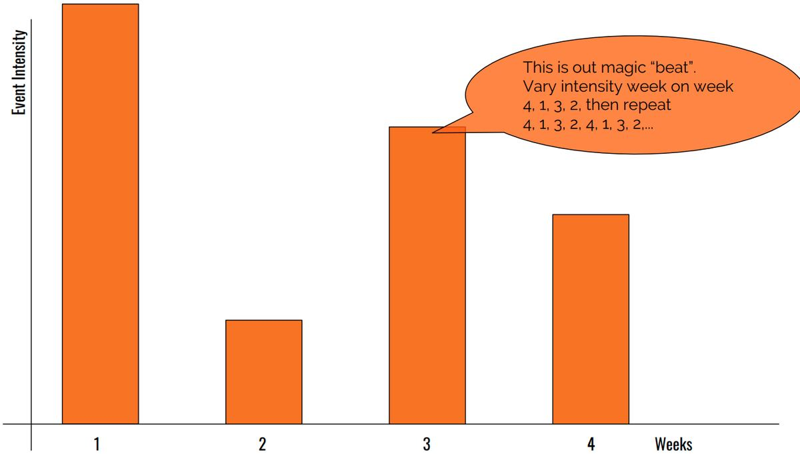
출처: Space Ape Live Ops Boot Camp
정교하게 만들어진 하나의 이벤트를 이 글에서 다룬다.

훌륭한 회사들이 Live Operations로 어떻게 성과를 냈는지 더 알고 싶다면 Space Ape의 부트 캠프를 꼭 읽어 보기를 권한다. 그들은 린 라이브 운영 관리에 관한 마스터 클래스를 정리해 두었다.
하이브리드캐주얼이 하나의 반복 가능한 제품 모델로 정착한 과정을, 그 모델을 가장 정확하게 실행한 퍼블리셔의 포트폴리오로 확인한다.
Archero에서 Archero 2까지, HABBY가 다섯 개 게임으로 반복한 하이브리드캐주얼 모델과 그 모델의 한계를 함께 다룬다.
2025년 하이브리드캐주얼의 현황을 이해하고 싶다면 HABBY보다 더 멀리 볼 필요가 없다. 2019년 장르를 정의한 Archero의 출시부터 최근 차트 상위를 차지한 Capybara Go!와 Archero 2에 이르기까지, HABBY는 대부분의 모바일 퍼블리셔가 꿈만 꾸는 일을 해냈다. 많은 사람이 스쳐 지나가는 유행으로 치부한 장르에서 반복 가능하고 수익화 가능한 모델을 만들어 낸 것이다.
지난 5년간 HABBY는 모바일에서 가장 효과적인 게임 퍼블리싱 기계 중 하나를 만들었다. 다른 이들이 말할 때 그들은 실행한다. 그리고 그 결과는 어떤 기조연설보다 크게 말한다.
다만 모든 모델에는 한계가 있고, HABBY 포트폴리오의 균열이 드러나기 시작하고 있다.
2019년 Archero가 현장에 폭발적으로 등장해 하이브리드캐주얼의 규칙을 쓴 뒤, 이 퍼블리셔는 조용해졌다. 거의 3년 동안 그들은 출시는 했지만 규모를 키우지는 못했다. Survivor.io가 벼락처럼 떨어지기 전까지는. 그것이 모든 것을 바꿨다. 그 이후 HABBY는 대부분의 퍼블리셔가 꿈꾸는 리듬을 탔다. Capybara Go!(월 1,900만 달러), Archero 2(월 2,700만 달러), 그리고 Wittle Defender가 모두 뒤를 이었고, 각각은 원래의 공식을 새로운 변주로 재구성했다.
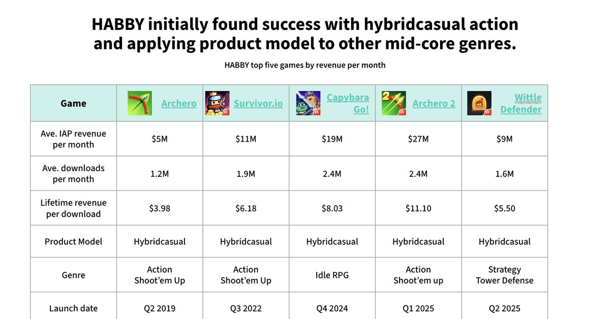
다운로드당 생애 매출은 약 4달러(Archero)에서 11달러 이상(Archero 2)에 이른다. 모바일 속편의 세계에서는 보기 드문 효율이다.
관통하는 흐름은 무엇인가? 다섯 게임 모두 하이브리드캐주얼이다. 표면은 간결한 게임플레이, 그 아래는 Retention과 수익화다. 더 말해 주는 지점은 이것이다. 다운로드당 생애 매출이 약 4달러(Archero)에서 11달러 이상(Archero 2)에 이른다. 이것이 최상의 하이브리드캐주얼 효율이다.
이 게임 중 다수는 로딩 화면에서 볼 수 있듯 사내에서 만들어지지도 않았다. HABBY는 외부 스튜디오와 협업하는 기술을 통달했다. 그들에게 도구와 구조, 수익화 노하우를 제공해 유망한 프로토타입을 최고 매출의 괴물로 바꿔 놓는다. 이것은 단순한 포트폴리오가 아니다. 파이프라인이다.
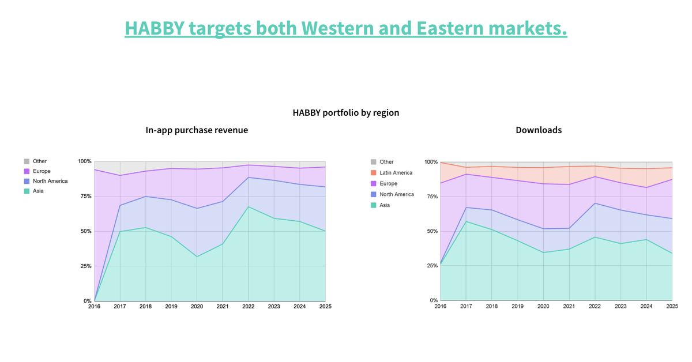
HABBY의 지배력에서 가장 간과되는 측면 중 하나는 그 전 세계적 확산이다. 그들은 아시아와 서구 양쪽에서 수익화되는 게임을 만들어 냈고, 이는 결코 작은 성취가 아니다.
대부분의 모바일 퍼블리셔는 한쪽으로 크게 기운다. 일본과 한국에서의 더 깊은 ARPU이거나, 북미에서의 대중 시장 규모이거나. HABBY는 그 중간에 앉아 있다. 설계에 의해서이기도 하고 필요에 의해서이기도 하다.
아시아는 여전히 그들의 다운로드 물량에서 큰 부분을 차지하지만, 북미로부터의 매출 비중은 2022년 이후 꾸준히 오르고 있다. 이는 단지 좋은 UA의 결과가 아니다. 문화를 가로질러 작동하는 제품 설계다. 빠른 템포의 메커닉, 보편적인 아트 스타일, 직관적인 진행 구조가 HABBY의 타이틀이 두 시장 모두에서 힘을 발휘하게 한다.

Archero는 생애 매출의 30%를 첫 10개월에 벌었다. Survivor.io는 절반을 벌었다. HABBY는 강하게 출시하고 그것을 확실히 활용한다.
HABBY의 포트폴리오에는 분명한 리듬이 있다. 몇 분기마다 새 출시가 주요 매출 급등을 만들어 낸다. 이것은 깊은 백카탈로그 전반에 걸쳐 느리게 복리로 쌓이는 매출을 위해 설계된 사업이 아니다. 초기 생애 주기에 강하게 베팅하는 모델이다. 그리고 수치가 이를 뒷받침한다.
Archero는 생애 매출의 30%를 첫 10개월에 벌었다. Survivor.io는 절반을 벌었다. 이 출시 중심의 행태는 HABBY의 운영 사고방식을 이해하는 열쇠다. 그들은 영원한 프랜차이즈를 만들 필요가 없다. 즉시 전환되는 제품을 만들어야 한다. 그리고 이는 유망한 무언가를 출시해 놓고 경쟁자가 기능과 아트, 크리에이티브를 베끼는 것을 지켜보는 대신, 시장을 선점할 수 있게 해 준다.
여기에는 포트폴리오 전략도 작동하고 있다. 초기 수익화 창이 닫히면 다음 대형 출시가 바통을 이어받는다. 이것은 농장이 아니라 히트 공장이다. 그리고 CPI가 빠르게 오르고 참신함은 그보다 더 빨리 닳는 시대에, 속도와 날카로운 실행은 그 어느 때보다 중요하다.
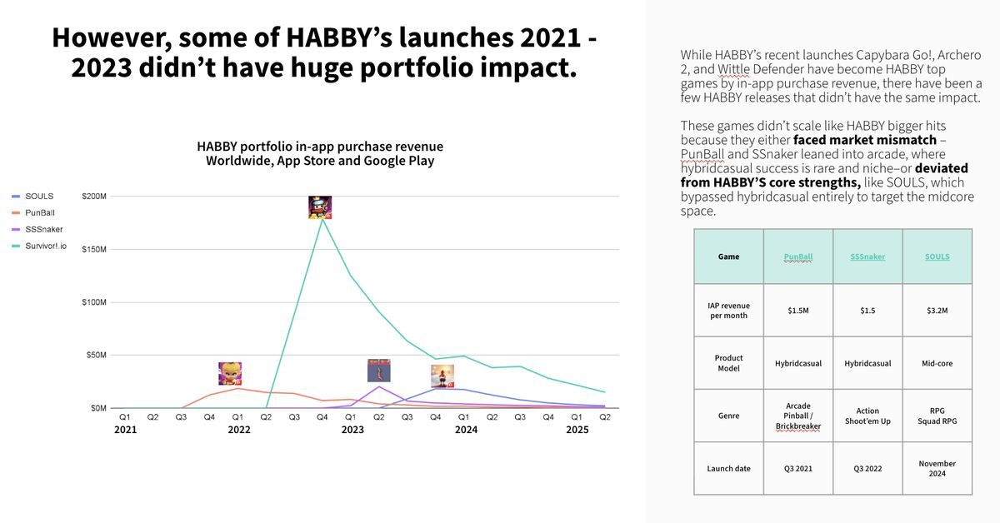
HABBY의 모든 출시가 통한 것은 아니다. PunBall과 SSSnaker는 좀처럼 성과를 내지 못했고, 월 매출 150만 달러를 넘기지 못해 전작들에 크게 못 미쳤다.
SOULS는 월 320만 달러로 더 나았지만 HABBY의 핵심 플레이북에서 벗어나, 하이브리드캐주얼의 단순함 대신 미드코어 RPG의 깊이를 택했다. 이들은 재앙은 아니었지만 시사하는 바가 있었다. 여기에서의 실패 양상은 품질이 나빴던 것이 아니라 정렬이 나빴던 것이다.
그들이 아케이드 장르(PunBall, SSSnaker)로 벗어나거나 코어로 너무 깊이(SOULS) 들어갔을 때 마법은 사라졌다. 이들은 단순한 실패가 아니라 경고다. 그들은 자신의 전략 밖으로 나갔고 비틀거렸다. 훌륭한 퍼블리셔라도 자신이 무엇을 잘하는지 잊으면 비틀거릴 수 있다.
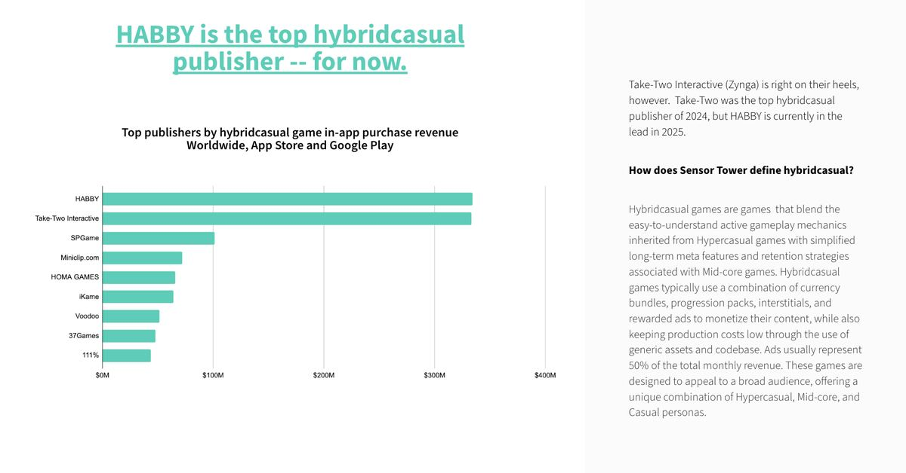
HABBY는 가능한 가장 작은 격차로 최대 하이브리드캐주얼 퍼블리셔이며, Take-Two의 Rollic이 아주 근소한 차이로 2위다.
오늘날 HABBY는 하이브리드캐주얼 산 정상에 앉아 있다. 그들은 이 장르에서 전 세계 선두 퍼블리셔이며, 2024년 1위를 차지했던 Take-Two Interactive(Rollic)마저 근소하게 앞선다. 다만 격차는 얇고 추격은 실재한다.
Rollic(Take-Two)은 더 두둑한 자금, 더 넓은 IP, 규모(연간 1,000개 이상의 프로토타입), UA 효율, 그리고 끈질긴 튀르키예 인재를 갖고 있다. HABBY는 명료함과 집중을 갖고 있다. 그들은 하이퍼캐주얼에서 하이브리드캐주얼로 방향을 트는 중이 아니다.
하이브리드캐주얼이 기본값이 됐기 때문이다. 다른 퍼블리셔들이 비슷한 메커닉과 수익화 전술을 채택하면서 일찍 시작했다는 이점은 침식된다. HABBY가 정상에 머물고 싶다면 장르 선도 이상의 것이 필요할 것이다. 장르의 재발명이 필요할 것이다.
개인 브랜드와 팟캐스트 순회, 회사 블로그 선언문에 집착하는 업계에서 HABBY는 보기 드문 종이다.
그들의 CEO가 LinkedIn에 사고 리더십을 늘어놓는 모습은 볼 수 없다. 그들의 문화를 상술하는 블로그 글도 없다. 그들은 모든 콘퍼런스에서 발표하지도, X에 비하인드 이야기를 흘리지도 않는다. 대신 그들은 훨씬 인상적인 일을 한다. 출시한다. 조용히, 일관되게, 섬뜩할 만큼 정확하게.
많은 퍼블리셔가 오르는 CPI와 신호 손실에 적응하느라 허둥대던 포스트 IDFA 시대에, HABBY는 조용히 제국을 지었다. 그들은 단 하나의 게임으로 그것을 이루지 않았다. 반복 가능한 제품 모델로 이뤘고, 우리 Deconstructor of Fun은 2019년에 그것을 하이브리드캐주얼이라고 명명했다.
그리고 그들은 액션 로그라이크에서 멈추지 않았다. 그들은 그 모델, 즉 접근하기 쉬운 조작, 탄탄한 게임플레이 루프, 깊은 진행 시스템, 수익화를 앞세운 설계를 가져다 방치형 RPG, 전략 게임, 심지어 아케이드 장르에까지 적용했다. 이것은 단순한 실행이 아니었다. 전략적 명료함이었다. SOULS 이야기는 하지 말자.
HABBY의 이야기는 제품-시장 적합성의 마스터 클래스다. 한 번이 아니라 반복해서 그랬다. 그들은 지역과 장르를 가로질러 작동하는 수익화 모델을 풀어냈고 여러 히트작으로 그것을 증명했다. 다만 규모는 검증을 부른다. 그리고 이 사업에서는 최고의 모델조차 결국 수확 체감에 직면한다. HABBY의 다음 장은 같은 플레이북을 실행하는 일에 관한 것이 아닐 것이다. 언제 페이지를 넘길지 아는 일에 관한 것이 될 것이다. 다른 누군가가 더 나은 것을 쓰기 전에.
히트작을 만들 뿐 아니라 카테고리 전체의 템포를 정하는 스튜디오는 손에 꼽을 정도다. HABBY는 그중 하나다.
개별 게임을 실제로 분해한다. 소셜 카지노, 매치 3, PvP 캐주얼, 하이퍼캐주얼의 코어와 메타를 게임별로 뜯어본다.
Moon Active의 Coin Master가 슬롯 코어에 습격, 기지 건설, 소셜 기능을 결합해 정체된 소셜 카지노 장르를 재정의한 과정을 분석한다.
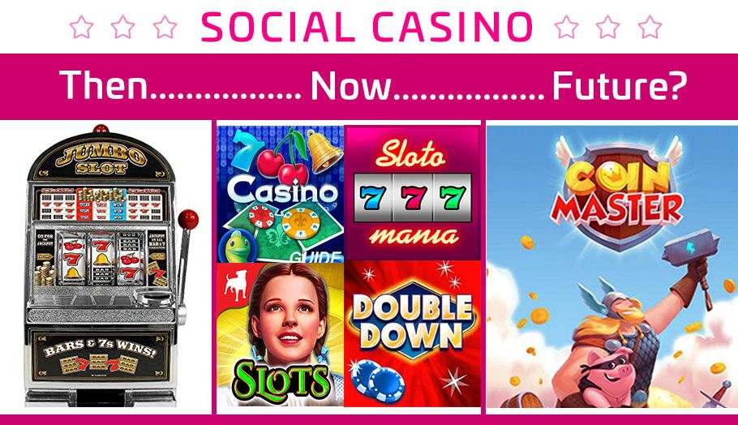
Game Refinery의 분류 체계에 따라 모바일 게임 시장을 나눌 때, Casino(소셜 카지노) 카테고리는 매출 기준 세 번째로 큰 범주이며 2018년 내내 꾸준히 성장해 왔다. 카테고리 매출은 전년 대비 24% 성장했고, Slots 서브 장르가 이 성장의 약 70%를 기여했다. Slots는 실제 카지노 매출의 평균 70~80% 사이를 만들어 내며, 같은 참여 행태가 소셜 카지노 영역에서도 그대로 나타난다. Slots는 Casino 카테고리에서 가장 큰 매출을 만드는 서브 장르로 78%의 비중을 차지한다. 이 카테고리와 그 미래에 관한 우리 생각은 2019년 Casino 카테고리 전망 글에서 더 읽을 수 있다.
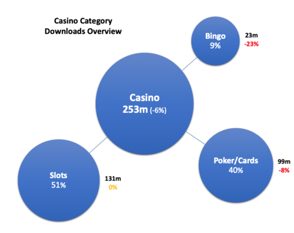
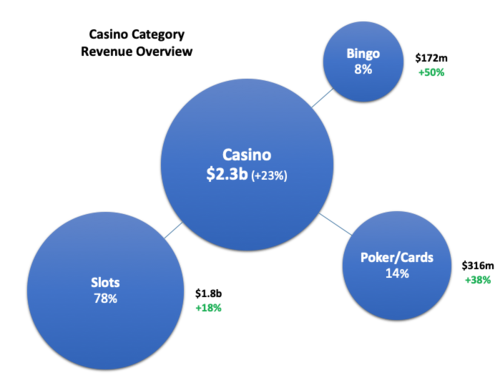
동시에 소셜 카지노 영역(특히 슬롯 게임)은 지난 몇 년간 제품 혁신을 그다지 보지 못했다. 상위 성과자들 사이에서 제품 구성은 상당히 일정하다. 로비에 들어가 → 수많은 슬롯머신 중에서 고르고 → 베팅하고 → 이기고 → 반복한다. 제품 차별화는 UX, 아트 스타일, 프로덕션 품질, 그리고 퀘스트와 사가 맵 같은 소소한 메타 시스템에서 나온다. 게다가 슬롯 게임의 경제는 여전히 단일 재화 경제라는 디지털 암흑기에 크게 머물러 있다. 많은 게임이 2차, 심지어 3차 재화를 갖추고 있지만 슬롯 플레이어는 여전히 대체로 코인에만 신경 쓴다. 이런 제품 설계의 정체를 감안하면, 이 서브 장르는 혁신을 맞을 준비가 되어 있다고 말할 수 있다.
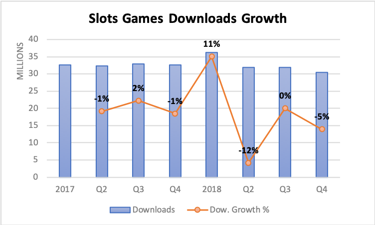
지난 2년간 슬롯 게임의 정체된 다운로드 성장 추세는 혁신이 이 서브 장르에서 더 많은 성장을 열어젖힐 것이라는 생각에 더욱 힘을 싣는다.
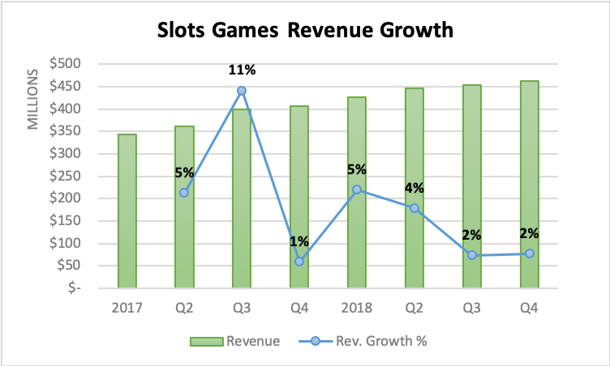
거의 모든 소셜 카지노 타이틀은 안전하게 가면서 모바일에서 진짜 같은 카지노 경험을 전달하는 방식으로 시장 점유율을 두고 싸워 왔다.
Coin Master(CM)가 Casino 카테고리에 들어가는지 아닌지는 논쟁의 여지가 있지만, 어느 쪽이든 이 게임은 Casino 카테고리의 미래 혁신을 이끌 불씨가 되고 있다. 하나의 슬롯머신에 감싸인 점진적으로 깊어지는 콘텐츠, 캐주얼한 아트 스타일, 더 실질적인 메타, 강한 소셜 기능, 과활동적인 라이브 운영, 훌륭한 UX와 프로덕션 밸류로, 이스라엘 개발사 Moon Active는 전통적인 슬롯 게임 설계 모델을 사실상 뒤집어 놓았다. 결과 수치는 거짓말하지 않으며, CM의 이 대담한 움직임은 매우 성공적인 것으로 입증되고 있다.
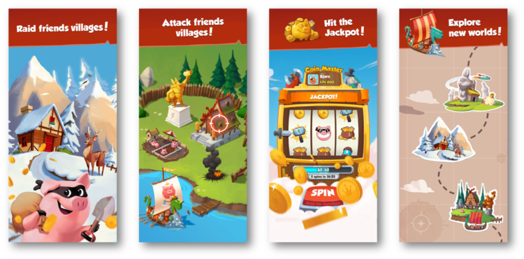
Coin Master의 스토어 스크린샷 | 출처: Apple App Store
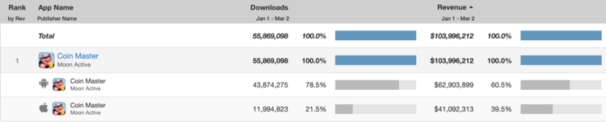
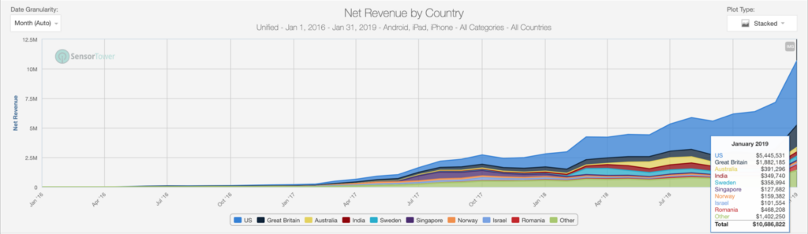
Coin Master의 1월 매출은 전년 대비 250% 급등했다.
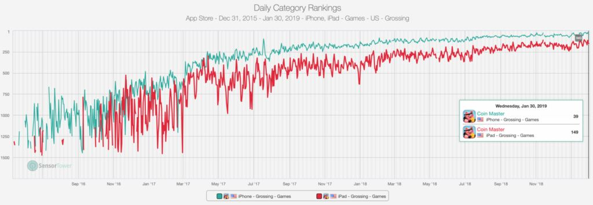
CM은 최고 매출 게임 50위권을 오르내린다.
CM이 스스로를 슬롯 게임으로 포지셔닝하지 않는 것은 사실이지만, 놓치기 어려운 슬롯 코어를 갖고 있다. 고전적인 블루오션 발굴의 솜씨로, CM은 전 세계 매출 차트를 불태우고 있을 뿐 아니라 인도와 이스라엘 같은 비전통적 소셜 카지노 시장에서도 성장을 열어젖히고 있다. 전통적인 소셜 카지노 게임이 과거에 깨지 못했던 벽이다. 분명 CM은 소셜 카지노의 정의를 확장해 왔고 앞으로도 확장할 것이며, 동시에 파이 자체를 키우고 있다.
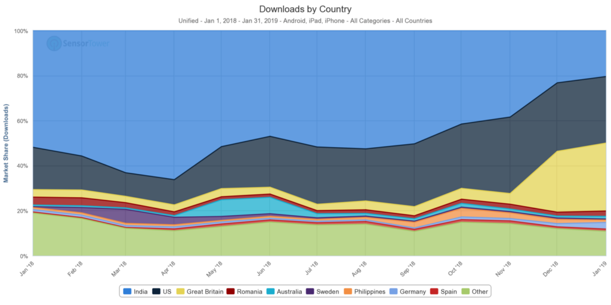
CM은 인도와 이스라엘 같은 국가에서 다운로드 성장을 열어젖혔다. 두 곳 모두 비전통적 슬롯 시장이다.
그렇다면 CM이 이토록 잘 공명하게 만드는 것은 무엇인가? 이 질문에 두 부분으로 답하겠다. 먼저 CM이 무엇에 관한 게임인지 살펴보고, 다음으로 경쟁작과 비교해 CM이 어떻게 더 잘하는지 보겠다.
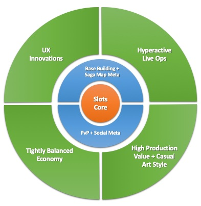
“공격” 릴 매치와 게임플레이 화면.
공격 릴 매치와 게임플레이 화면.
“방패” 릴 매치와 방패로 공격이 막힌 화면.
방패 릴 매치와 방패로 공격이 막힌 화면.
“습격” 릴 매치와 게임플레이 화면.
습격 릴 매치와 게임플레이 화면.
이 외에도 거의 이스터에그처럼 느껴지는 보너스 기능이 하나 있다. 플레이어가 게임을 하는 도중에 공격이나 습격을 당할 수 있고, 이때 화면이 흔들려 그 사실을 알려 준다.
2019년 2월 20일 기준.
소셜 카지노 게임의 플레이어 유형 네 가지와, 챌린지·진행·소셜 세 영역에 걸친 8가지 메타 기능을 실제 게임 사례로 분해한다.
어떤 개발자든 소셜 카지노 게임에서 배울 것이 엄청나게 많다. 카지노 장르에는 가장 열성적이고 참여도가 높은 유형의 플레이어들이 있고, 그래서 개발자들은 이런 유형의 타이틀이 성공하도록 뒷받침하기 위해 정교한 메타 게임 기능을 많이 만들어 왔다. 이는 곧 이런 유형의 게임에 많은 시간을 쏟는 플레이어에게 중요한 차별점과 부가 가치를 제공하는, 훨씬 다양한 고유 보상과 챌린지, 심지어 강화된 구매 옵션을 찾아볼 수 있다는 뜻이다. 여기에서 사람들은 실제 돈을 걸고 플레이하지 않으므로, 이런 기능들은 그들을 계속 몰입시키기 위해 결정적이다. 그래서 이 글을 썼다. 코어 게임을 보완하고 플레이어를 계속 몰입시키는 가장 혁신적인 방법 몇 가지를 보여 주기 위해서다. 소셜 카지노 게임에서 인기 있는 8가지 메타 기능을 자세히 살펴보고, 거기에서 무엇을 배울 수 있는지 짚는다. (이론적으로는 이 일반 원칙들을 어떤 장르의 어떤 게임에든 가져다 적용할 수 있다.) 이 글은 네 가지 주요 영역을 다루므로, 가장 중요한 부분으로 건너뛰어도 좋다.
소셜 카지노 게임에서 메타 기능이 어떻게 그토록 정교해졌는지 이해하려면, 먼저 누가 그것을 플레이하는지 조금 알아야 한다. Lloyd Melnick이 정리한 소셜 카지노 플레이어 유형 분류가 유용하다. (이 평가는 실제 돈을 거는 플레이어에 초점을 맞추지만 소셜 플레이어와 상당 부분 겹치며, 이 인구 집단에 대한 유용한 통찰을 제공한다.)
이들은 도박의 흥분과 플레이하는 동안 겪는 자극에 동기를 얻는 플레이어다. 이기거나 돈을 벌기 위해 게임하는 것이 아니라, 이기든 지든 그저 좋은 시간과 즐거운 여정을 찾는다.
카지노 게임은 일부 플레이어에게 탈출 또는 이완의 시간을 제공한다. 이런 유형의 플레이어에게 카지노 게임은 일상에서 스위치를 끄고 긴장을 푸는 수단이다.
어떤 사람들은 친구와 어울리기 위해, 또는 그저 지루함을 덜기 위해 카지노 게임을 한다. 따라서 이런 유형의 플레이어에게는 돈이나 승리보다 카지노 게임이 제공하는 기능적 역할이 더 중요하다.
이 범주의 플레이어는 위의 모든 이유로 카지노 게임을 즐길 수 있지만, 동시에 큰 승리를 거두기를 바라기도 한다. 그래서 특정 게임이나 테마보다 이익을 낼 기회가 더 중요하다. 이제 누가 소셜 카지노 게임을 하는지 알았으니, 최고의 메타 기능들과 이들 각 페르소나를 어떻게 몰입시킬 수 있는지 살펴보자.
챌린지와 경쟁 측면 때문에 플레이하는 게이머를 붙잡으려면 리더보드와 주간 플레이오프를 추가하는 일이 필수다. 유념할 점은 이런 유형의 메타 기능이 그들이 실제로 게임을 하는 유일한 이유일 수 있고, 여러분이 제공하는 다른 기능은 전혀 신경 쓰지 않을 수도 있다는 것이다. 카지노 타이틀에서 이를 구현하는 방법은 여러 가지가 있으므로, 이미 나와 있는 것들을 (몇 가지 근사한 예와 함께) 정리한다.
Huuuge Casino의 Billionaire League는 경쟁적인 이용자를 겨냥한 훌륭한 예다. 플레이어의 등급과 실력에 맞춰 서로 다른 리그를 제공할 뿐 아니라, 특정 디비전에 클럽 이벤트를 제공해 리그 포인트를 얻고 더 나아갈 기회를 준다. 요컨대 Huuuge는 앱 안에서 계속 플레이하고 진행하는 플레이어에게 도전과 보상을 동시에 주는 포괄적인 경쟁 구조를 제공한다.
보통 Billionaire League에서 플레이어는 친구와 클럽을 만들거나 기존 클럽에 들어가 새로운 사람을 만날 수 있다. 새 클랜에 들어가면 동료 구성원을 도운 대가로 막대한 보상을 받는다. 클럽 이벤트를 완료할 때도 마찬가지다. 여기에서도 Huuuge가 훌륭한 예인데, 특히 Facebook 페이지에 영리한 리그 업데이트를 올려 리그를 떠나는 클럽에 작별을 고하고 최신 챔피언을 치켜세울 때 그렇다. 이는 코어 게임을 넘어선 상당한 추가 동기와 명예를 플레이어에게 제공한다.
마지막으로 주간 플레이오프는 새롭고 규칙적인 챌린지를 제공해 Retention을 높이는 훌륭한 방법이다. 또한 이기지 못하더라도 기대할 무언가를 준다. 이는 습관을 만드는 기능의 훌륭한 예이며, 캐주얼 게이머를 평생 팬으로 바꿔 놓을 수 있는 기능이다. 습관을 만드는 게임 설계에 관한 글도 따로 썼으니 살펴봐도 좋다.
진행은 소셜 카지노 게임에서 중요한 부분이다. 특히 흥분이나 이완을 위해 플레이하는 사람들에게 그렇다. 대부분의 게임이 그렇듯, 진행은 개별 판이나 세션에서 이기는 데만 초점을 맞춘 경험보다 더 복합적이고 풍부한 경험을 제공한다. 기억할 점은 소셜 카지노 게임의 플레이어는 실제 카지노와 달리 돈을 좇지 않는다는 것이다. 이는 곧 그들이 코어 게임을 보완하는 부가 가치를 크게 반긴다는 뜻이다. 그 부가 가치는 해금 가능한 기능, 누적되는 보상, 심지어 성공률을 보여 주는 성과 막대의 형태로 올 수 있다. 진행 범주 안의 메타 기능 세 가지를 소개한다.
소셜 카지노 게임은 몰입감 있는 미니 게임을 타이틀에 통합하는 일을 잘해 왔다. 예를 들어 플레이어가 게임의 특정 단계에 도달했을 때 이를 발동시킬 수 있다. 이 점에서는 DoubleDown에게서 한두 가지를 확실히 배울 수 있다. 이 게임은 표준 인앱 결제를 하는 플레이어를 위해 새로운 구매 패키지를 추가해, 결제 고객에게 또 하나의 진행 층을 더했다. 흥미롭게도 이 장르의 게임은 ARPDAU가 낮은데도 ARPPU는 매우 높아, 최고 성과 타이틀은 ARPPU가 35달러를 넘는다(2018년 모바일 게임 벤치마크 보고서 참조). 그러므로 플레이어당 매출을 극대화하고 싶다면, 성공한 소셜 카지노 게임을 많이 플레이할 때 정말로 최고에게서 배우는 셈이다.
카지노 게임의 Retention은 강하다. 최고 성과 타이틀은 D1 평균 40% 이상, D7 20%, D28 15%를 보인다. 이 수치를 다른 장르와 비교하면, 로열티 프로그램이 그저 돌아올 이유를 제공하는 것만으로 플레이어와 오래가는 관계를 효과적으로 만든다는 점이 꽤 분명해진다. 영감을 얻으려면 Playtika의 Rewards 로열티 프로그램을 확인해 보라. 플레이어가 레벨을 올리고 구매를 하면 동시에 포인트가 쌓여 더 높은 등급에 도달하게 되고, 이는 더 큰 보상으로, 궁극적으로는 Bronze, Silver, Gold, Platinum, Diamond, Royal Diamond, Black Diamond의 일곱 등급을 올라가며 더 독점적인 인게임 혜택으로 이어진다.
누구도 너무 어렵거나, 그렇다고 너무 쉬운 게임을 하고 싶어 하지 않는다. 그러므로 난이도 설정을 구현할 때 서로 다른 플레이어 유형을 고려해야 한다. 전문적으로 플레이하고 훈련하려는 사람에게는 레벨 시스템이 좋다. 서로 다른 단계에서 핵심 기술을 다듬을 기회를 주기 때문이다. 캐주얼하게 플레이하는 사람에게는 낮은 난이도 구간에서 그저 경험을 즐길 선택지가 있다. 반면 경쟁적으로 플레이하는 사람은 더 도전적이고 실력이 비슷한 상대와 겨루며 리더보드 정상에 오르는 기쁨을 느낄 수 있다. 세상에는 아주 다양한 플레이어가 있으므로 그들을 두루 배려하는 일이 중요하다. 또한 언제나 중요한 질문을 스스로에게 던지는 것을 잊지 말라. 그들은 왜 플레이하는가? 시간을 때우려고? 전문적으로 훈련하려고? 아니면 경쟁적 우위를 기르려고? 이 질문이 여기에서의 결정을 도울 것이다. Playtika가 자사 게임 Slotomania에서 이를 훌륭하게 구현한 예가 있다. 이 게임은 난이도 수준별로 맞춤화된 진행 시스템을 갖추고 있다.
분명 소셜은 소셜 카지노 게임에서 막대한 역할을 한다(이름에 단서가 있다). 그리고 이 측면을 정확히 짚는 일이 중요하다. Caesars Slots에는 배울 만한 훌륭한 인게임 받은편지함 메시지 시스템이 있다. 플레이어가 손쉽게 상호작용하고 코인을 주고받을 수 있게 해 준다. 이런 기능은 게임의 커뮤니티 감각과 상호작용성을 높이는 경향이 있고, 플레이어가 같은 취향을 가진 다른 팬들의 세계 안에서, 그리고 그 세계를 향해 소통할 수 있게 한다. 다른 메타 기능들과 마찬가지로, 이 이용자층을 배려하는 몇 가지 방법을 살펴봤다.
간단히 말해 이는 새 플레이어에게 게임을 알리는 최고의 방법 중 하나다. 왜인가? 실제 사람들이 실제 인맥을 초대하도록 유도하고 그 경쟁심에 불을 붙이기 때문이다. 예를 들어 Zynga는 추천을 통해 합류한 신규 회원에게 1달러 상당의 코인을 제공한다. 게임을 설치했지만 아직 플레이하지 않은 복귀 대상자를 위한 추천 코드도 있다. 이는 그 오퍼의 수명을 늘려 플레이어가 보상에 이끌릴 기회를 더 준다. 궁극적으로 양쪽 모두에게 추가 코인이나 토큰으로 보상함으로써 플레이어가 타이틀에 대해 좋은 말을 퍼뜨리도록 유도할 수 있다. 또한 신규 이용자에게 좋은 첫인상을 주는데, 이는 경쟁작에서 플레이어를 데려오는 데 결정적일 수 있다.
인게임 채팅 기능과 플레이어 간 1대1 대결을 고려해 보라. 아주 새로운 기능은 아니지만 카지노 게임은 이 부분의 경험을 극대화하는 데 꽤 공을 들여 왔다. 예를 들어 아바타에 프로필 사진을 추가할 수 있고(또는 Facebook과 연동하면 자동으로 갱신된다), 그러면 컴퓨터(또는 이길 수 없는 악의적인 AI)가 아니라 친구와 플레이한다는 느낌이 더해진다.
한 걸음 더 나아가 잠재 플레이어를 몰입시키려면, 친구의 플레이를 관전하고 격려의 쪽지를 보낼 수 있게 하는 것은 어떨까? 어쩌면 도발도 장려할 수 있다. 이는 새 플레이어가 친구에게서 배우게 하거나 그저 응원을 보내게 해 준다. 예를 들어 KamaGames의 Pokerist는 내장된 테이블 관전 버튼을 제공해, 친구가 접속해 있으면 그 친구의 포커 게임을 실시간으로 볼 수 있게 한다. 플레이어는 추가 소셜 기능을 통해 가상 선물, 이모지, 문자 메시지도 보낼 수 있다.
소셜 카지노 타이틀을 작업할 생각이 없더라도, 이 모든 메타 기능은 어떤 모바일 게임의 Retention을 최적화할 때든 대단히 훌륭한 영감의 원천이다. 더 중요하게는 플레이어와 더 강한 관계를 발전시키는 훌륭한 방법이다. 코어 게임플레이 루프가 타이틀의 초기 성공에 필수적인 것은 분명하지만, 추가적인 메타 요소가 전체 플레이 경험에 더하는 몫은 과소평가될 수 없다. 이는 다른 어떤 모바일 게임 장르만큼이나 소셜 카지노 게임에도 적용된다. 그리고 이 장르로 확장할 생각이라면 재미있는 사실이 하나 있다. 소셜 카지노 게임은 다른 장르와 비교해 평균 세션 길이가 가장 길며, 최고 성과 타이틀은 ASL이 40분에 이른다. 또한 카지노 타이틀의 고착도는 대단히 강해서, 최고 성과 타이틀은 27%의 Stickiness를 보인다.
Classic과 Meta로 갈라진 매치 3 지형을 짚고, Candy Crush Saga의 보상 설계 한계와 Property Brothers의 장르 혼합 전략을 분해한다.
매치 3의 변태(metamorphosis)는 실재한다. 다만 새로운 영역에는 흔히 새로운 규칙이 따라오지 않던가? 이 미지의 바다에서 판이 어떻게 돌아가고 있는지 더 깊이 들어가 보자.
이 여러 편의 분석 시리즈는 그 새로운 규칙이 무엇일지에 정확히 초점을 맞춘다. 이 시리즈의 지난 분석에서는 몇 가지 과거 데이터와, 성숙해진 플레이어 행동 및 깊어진 게임 설계라는 강력한 지각 변동의 힘을 함께 살펴봤다. 그 힘이 매치 3 지형을 Classic과 Meta로 갈라놓았고, 각각을 King과 Playrix 같은 회사들이 지배하고 있다.
그렇다. 우리는 갈림길에 서 있다. 다만 진짜 질문은 앞에 놓인 길이 어떤 모습인가 하는 것이다.
King은 자신의 영역과 유산을 지키기 위해 열심히 일하며, 오랫동안 군림해 온 대단히 인기 있는 Classic 매치 3 프랜차이즈 Candy Crush Saga를 되살리고 재발명하고 있다.
오늘날의 Candy Crush Saga는 8년 전의 원래 모습과는 논쟁의 여지 없이 훨씬 다른 존재다.
King은 현재의 메타 트렌드를 읽고 다수의 2차 메타 목표와 이벤트를 성공적으로 도입했다. 이것들은 게임의 코어와 사용자 경험을 새롭게 하는 데 그치지 않고 그 이상을 해낸다. 이 깊이는 새로운 레벨 디자인에서도 분명히 드러난다. 아래에서 플레이어가 캔디를 부수면서 좇을 수 있는 다양한 이벤트와 메타 목표를 볼 수 있다.
이 기능들은 미드코어와 하드코어 게임에서 보이는 게임플레이의 부드러운 버전이다. 다만 질문은 이것이다. 이런 임시방편으로 충분한가?
이런 메타 목표의 추가는 신선하고 반가운 변화이지만, 새로운 메커닉과 기능이 시간에 걸쳐 점진적으로 더해지면서 잠재적인 문제가 생길 수 있다.
여러 이벤트 유형과 보상 기능의 군단이 플레이어가 게임을 경험하는 방식에 변화를 만들어 내고 CCS 안에 단기·중기·장기 진행 호를 형성하는 것은 사실이다. 다만 아쉬운 점은 이것이다.
플레이어가 노력의 대가로 받는 보상이 대단히 반복적으로 보이고, 시간이 지나면 대체로 같게 느껴질 수 있다.
위 이미지는 CCS에서 서로 다른 이벤트와 메타 목표를 완료했을 때 플레이어가 받을 수 있는 여러 보상을 보여 준다. 한눈에도 그 대부분이 너무나 익숙한 부스터이거나 그 부스터의 묶음이라는 점이 꽤 분명하다.
모든 보상이 부스터이고, Candy Crush Saga에서 모든 부스터는 어느 정도 같게 느껴진다.
오해하지 말기를 바란다. 부스터 자체는 훌륭하고, 특히 그것들이 촉발하는 멋진 불꽃과 애니메이션 효과를 나는 아주 좋아한다(이는 King 게임의 상징이며 King보다 이를 잘하는 곳은 없다). 다만 플레이어는 이 부스터들에 너무나 익숙해진다. 일일 보상(돌림판)에서 맛보기로 정기적으로 무료로 받기 때문이고, 초콜릿 폭탄이나 젤리피시 같은 다수는 캐스케이드의 일부로 게임 보드에 흔하게 등장하기 때문이다. 실제로 플레이어가 과제의 끝에서 무엇을 받을지 익숙해지고 쉽게 예측할 수 있게 되면, 도파민 분출이 줄고 보상감이 희석된다.
CCS에서 플레이어는 이벤트나 수집 기능 같은 단기·중기·장기 목표 중 무엇을 위해 파밍하든 대체로 같은 보상을 받는다. 이는 시간이 지나면서 보상의 가치를 크게 희석시킬 수 있다.
예측 가능하고 흔한 보상이 시간에 따라 도파민 분출에 미치는 영향.
현재 CCS의 보상에는 희귀도 시스템이 없다.
소모품은 좋은 보상 시스템이 될 수 있지만, 현재 CCS의 다수는 원조 Angry Birds의 Mighty Eagle 같은 뚜렷한 정체성이나 희귀한 획득성을 갖고 있지 않다.
원조 Angry Birds에서 해금하기 어려웠던 Mighty Eagle을 기억하는가? 그것은 희귀성과 모든 것을 아우르는 위력 덕분에 진짜 정체성을 가진 부스터였다. CCS의 어떤 부스터도 그런 정체성을 갖지 못한다. 여기에 흔하게 드롭되는 빈도가 결합되면, 플레이어의 마음속에서 체감 가치 면에서 훨씬 더 평범한 것이 된다. 특히 베테랑 플레이어에게 그렇다.
CCS는 현존하는 가장 오래된 매치 3 게임 중 하나로서 단일 프리미엄 재화 경제(골드 바)에 기반한다. 이것이 게임 내 거의 모든 행동에 대한 보상이 부스터로 귀결되는 이유의 일부다. 비교하자면, 새로 진입한 모든 메타 게임은 부스터 외에 최소 두 가지 재화를 갖추고 있어 보상 분배와 파밍 측면에 더 많은 깊이와 다양성을 더한다.
소모품 대 재화. 재화와 소모품을 보상 시스템으로 쓸 때의 장단점을 살펴보자. 자료 제공: Evtim Treknov
소모품과 재화 모두 주관적 가치, 인플레이션 등 장단점이 있다. 다만 단기·중기·장기 진행 호를 따라 다양한 기능을 두려 한다면 플레이어에게 더 많은 선택과 다양성을 주어야 한다. 보상 시스템은 희귀도(커먼, 레어, 레전더리)를 통해서든 재화의 다양성을 통해서든 잘 확장될 수 있어야 한다. CCS에서는 두 방향 모두 개선의 여지가 충분하다.
King은 앞으로도 진행 호를 따라 메타 목표를 확장해 갈 가능성이 높다. 다만 희귀도가 없거나 단일 재화 경제에 묶여 보상 시스템을 확장하지 못하면 플레이어의 동기를 희석시킬 소지가 있다.
플레이어가 장기적으로 이런 노력을 어떻게 평가할지는 시간이 말해 주겠지만, King이 클래식 매치 3를 재정의하고 지켜 내려는 탐구에서 모든 수단을 동원하고 있는 점을 감안하면, Classic 매치 3의 신규 진입자는 정상을 향한 경주에서 여전히 힘든 시간을 보낼 것이다. 진입 장벽이 여전히 상당히 높기 때문이다.
이 봉우리의 정상에 오르는 일 역시, 불가능하지는 않더라도 가파른 등반이다. 초기 진입자들의 공격적인 지배와 이 장르가 인수합병의 온상이 되고 있다는 점을 감안하면 그렇다.
Deconstructor of Fun이 지적했듯, 러시아 곰을 건드리지 말라.
출처: Deconstructor of Fun
모바일 게임을 자주 하거나 Facebook을 둘러본다면 아래 광고를 봤을 가능성이 높다.
Playrix의 공격적이고 비례를 넘어선 빠른 대응으로 볼 때, 앞으로의 어떤 시도도 비슷한 대응 조치에 부딪힐 수 있음이 분명하다.
위 그림이 암울해 보인다면 걱정하지 말라. 개발자들이 미지의 영역에 발을 담그며 섞고 짓이기고 실험해 매치 3 코드를 푸는 길은 언제나 있다.
아래 분석에서는 파이가 어떻게 더 잘게 나뉘고 있는지 살펴본다. Classic 매치 3 영역 밖에 있는 IP와 이용자층과 결합될 때 매치 3의 메타가 얼마나 멀리 밀려갈 수 있는지 보겠다. 그런 예 하나가 다음이다.
최고 매출 퍼즐 게임 차트에서 느리지만 눈에 띄게 올라오고 있는 것이 Storm 8의 Property Brothers Home Design이다.
출처: Sensor Tower
Storm 8 진영에서 나온 Property Brothers는 조용히 차트를 올라온 또 하나의 메타를 얹은 매치 3다. 지금 유행하는 장식 메타, 서사 중심 게임플레이, 콜랩스 코어의 모든 재료를 갖췄지만, 실제로는 Homescapes, Gardenscapes, Lily's Garden과는 다른 이용자층을 노린다. 이 게임들이 모두 캐주얼한 픽션 기반의 만화풍 서사 스타일인 반면, Property Brothers는 현실적인 장식과 사실에 기반한 서사, 그리고 실제 세계의 배경에 더 무게를 둔다.
Property Brothers는 더 현실적인 장식 메타를 좇으며 그것을 인기 있는 실제 세계 IP와 결합한다.
Property Brothers Home Design은 대단히 인기 있는 캐나다 리얼리티 TV 쇼에 기반한다. 쌍둥이 형제 Jonathan과 Drew Scott이 기술적 전문성을 발휘해 잠재 주택 구매자가 정해진 예산 안에서 집을 원하는 대로 개조하도록 돕는 프로그램이다. 이와 관련해 짚을 점이 있다.
과거의 시도에도 불구하고 매치 3와 IP 게임은 대규모로 차트를 부수는 눈부신 성공을 보지 못했다. Frozen Adventures와 Temple Run 같은 IP 기반 퍼즐 게임은 매치 3 장르에서 제한적인 성공만 거뒀다.
IP와 프랜차이즈 제휴는 팬층으로부터 더 높은 오가닉 다운로드를 얻을 가능성이 있지만, 그것을 성공 공식으로 착각하지 말라. 지난 15년 넘게 차트를 부순 수많은 IP 주도 게임(Star Trek, Ice Age, My Little Pony, Hardy Boys, Wizard of OZ, Alice in Wonderland 등)을 작업해 본 사람으로서, IP만으로는 게임을 차트 정상에 올려놓지 못한다고 절대적인 확신을 갖고 말할 수 있다.
코어 게임플레이가 빛나야 하고 IP 세계관과 응집력 있게 어우러져, 프랜차이즈 팬과 비팬 모두를 몰입시켜야 풍성한 보상을 거둘 수 있다.
Property Brothers로 Storm 8은 현실적인 홈 데코를 좋아하는, 대단히 인기 있는 Glu Mobile의 Home Design 이용자층을 노리고 있다. 어쩌면 Glu Mobile의 점심을 뺏어 먹는 것일지도 모른다.
출처: Sensor Tower
위 데이터는 Property Brothers가 2019년 출시 이후 최고 매출 차트에서 Design Home과의 격차를 어떻게 서서히 좁혀 왔는지 보여 준다.
Storm 8은 이 IP를 후보로 추릴 때 숙제를 잘해 두었다. 여성과 베이비붐 세대에게 대단히 인기 있는 프랜차이즈다.
위의 Property Brothers(TV 쇼) 시장 조사 인구통계 데이터는 여성(47%), 밀레니얼(26~40세), 베이비붐 세대(45세 이상)에게 인기가 있음을 분명히 보여 준다. 이제 이 데이터를 아래 GameRefinery의 메타 매치 3 게임 Thinker 플레이어 원형과 비교해 보자.
출처: GameRefinery
Property Brothers의 IP 이용자층은 Classic 및 Meta 매치 3 게임의 인구통계와 아주 잘 겹치며, 이는 이 장르에 잘 맞는다는 뜻이다.
Property Brothers는 잘 정립된 캐릭터, 강한 서사, 장식 챌린지 같은 Meta 매치 3의 성공 요소를 모두 가져다가 더 현실적인 아트 스타일과 장식 중심 이용자층에 맞춰 재단한다.
Property Brothers는 팬에게는 TV 쇼 배경이라는 잘 정립된 심적 모형을 사용하면서, 비프랜차이즈 플레이어에게는 온보딩을 단순하고 몰입감 있게 유지한다.
Core Loop는 Property Brothers가 플레이어를 자신들의 입장에 놓고 여러 고객을 소개하는 것을 중심으로 돈다. 플레이어의 일은 어느 정도 안내를 제공하되 창의적 선택을 방해하지 않는 이상적인 설계도 비전을 이용해 이 부동산들을 장식하는 것이다. 여기까지는 다른 장식 메타 게임과 같게 들리지만 차이가 있다.
Property Brothers는 장식 메타에서 훨씬 더 많은 선택지와 새로워진 UX를 제공한다. 플레이어가 집 하나 또는 정원 하나를 업그레이드하는 데 선형적으로 묶여 있지 않기 때문이다. 이 게임은 서로 다른 고객을 위해 장식할 수 있는 다수의 서로 다른 집을 제공한다. 거실부터 침실, 아기방까지 어리둥절할 만큼 다양하다.
서사는 Property Brothers의 큰 부분이며, 다만 순전히 허구의 이야기에 빠져드는 것과 비교하면 단서가 하나 붙는다. Property Brothers는 고객의 형태로 여러 캐릭터를 플레이어에게 소개한다. 두 번째 큰 차별점은 이것이다.
서사가 순수한 허구가 아니다. 대화 사이사이에 인테리어 디자인 지식의 알맹이가 섞여 있어 상당히 교육적이다.
인테리어 디자인의 사실과 서사적 허구를 이렇게 섞는 방식은 인테리어 디자인과 이 장르를 좋아하는 플레이어에게 자연스럽게 호소한다.
이 시리즈의 1부에서 우리는 메타를 얹은 새 매치 3 게임들이 지난 2년간 스와이프보다 콜랩스로 출시해 더 큰 성공을 거두는 흐름을 다뤘다. Property Brothers도 이 흐름을 따르는 또 하나의 예다. 이 게임은 콜랩스 코어를 가졌을 뿐 아니라, 놀랍게도 다른 매치 3 게임에서 흔한 플레이어 진행이나 트로피 레벨조차 없다. 플레이어의 진행은 자신이 있는 퍼즐 레벨과, 더 중요하게는 완료한 고객 작업의 수로 측정된다. 이는 다음 사실을 더욱 강화한다.
Meta 매치 3 게임은 매치 3를 그저 수단으로 사용해, 플레이어가 장식 챌린지라는 더 만족스러운 목표를 좇게 만든다.
잘 설계되면 콜랩스 메커닉은 플레이어의 (정신적·전술적) 노력을 줄여 세션 시간을 조절하는 데 도움이 된다. 다만 내재적인 게임 디자인 문제가 있을 수 있다. 보드 교착이다. 플레이어가 잘못된 수를 여러 번 두게 되면, 색 매치가 부족해 보드의 어느 영역이 정체되어 플레이어가 보드를 정리하지 못하는 교착 상황이 발생할 수 있다.
그렇다면 이 아킬레스건은 어떻게 다뤄야 하는가?
성공한 콜랩스 게임은 무작위 슈퍼 젬을 많이 만들어 이 교착 상황을 최소화하려 한다. 슈퍼 젬은 수를 둘 수 없을 때 보드를 열어 줄 가능성을 제공한다. 이는 레벨 디자인과 미세 조정의 문제이기도 하다.
가장 성공한 콜랩스 게임 몇 가지가 이 문제를 어떻게 다루는지 보라. Lily's Garden 같은 블록버스터 콜랩스 게임은 더 큰 보드 크기를 사용한다. Toon Blast는 플레이어가 100레벨을 넘길 때까지 대체로 어려운 레벨을 도입하지 않아, 장벽에 부딪히기 전에 플레이어를 메커닉에 충분히 안착시킨다.
Property Brothers는 상당 부분 이 교착 해소 장치들을 조합해 플레이어의 마찰을 완화한다.
스와이프 대 콜랩스 논쟁을 더욱 흥미롭게 만드는 점은, Property Brothers를 출시하기 전에 Storm 8이 이미 Property Brothers Home Design과 동일한 장식 메타를 가진 동일한 게임을, 다만 스와이프 매치 3 메커닉으로 갖고 있었다는 사실이다.
Property Brothers는 정확히 같은 장식 메타와 비슷한 서사 스타일로 출시됐지만, 개발자들은 스와이프 메커닉을 콜랩스로 바꿨다.
출처: Sensor Tower
차트를 보면 콜랩스 버전이 동일한 스와이프 사촌보다 최고 매출 차트에서 훨씬 큰 성공을 거두고 있음이 분명히 드러난다. 콜랩스 대 스와이프 논쟁의 결론이 났다고 하기는 어렵지만, 개발자의 관점에서 이는 여전히 주목할 만한 관찰이다.
메타는 실내외 장식을 중심으로 하지만, 다중 재화 접근을 통한 영리한 추가가 몇 가지 있다. 한정 시간 이벤트 설계가 대단히 흥미로운 이유는, 실내 장식이라는 코어 게임플레이를 풀 파티, 여름 바비큐, 결혼식 장식 같은 실외 이벤트로 확장해 (이제는 흔해진) 홈 데코 테마에 더 많은 깊이를 더하기 때문이다.
이 이벤트들은 플레이어가 더 똑똑해진 기분을 느끼게 한다. 코어 게임플레이에서 아마추어 홈 데코레이터에 머무는 것과 비교해, 전문 데코레이터가 된 것처럼 자신을 이입할 수 있기 때문이다.
한정 시간 재화(코인과 한정 시간 토큰)라는 두 가지 소프트 재화는 이벤트를 플레이하는 일을 고민할 필요 없는 선택으로 만드는 정말 영리한 추가다.
일반 코인은 일반 게임플레이의 실내 장식에만 쓸 수 있고 이벤트에서는 쓸 수 없다. 반면 한정 시간 토큰은 진행 중인 특정 이벤트에서만 배타적으로 쓸 수 있다. 이는 이벤트가 이중의 가치를 갖는다는 뜻이다. 플레이어는 진행 중인 이벤트에서 진척을 만들면서 동시에 일반 게임플레이용 코인을 파밍한다. 이는 이벤트 자체의 결과와 무관하게 일반 장식 게임플레이에서도 좋은 진척을 낼 수 있게 하므로, 자연스럽게 플레이어가 이벤트를 플레이하도록 유인한다.
실험, 새로운 이용자층 발굴, 장르 혼합이 높은 진입 장벽에도 불구하고 장르를 진화시키고 풍성한 보상을 거두는 열쇠가 될 것이다.
2020년 4월과 7월에 두 편의 글을 발행한 뒤, 11월에 출시된 새로운 Meta 매치 3 Project Makeover가 최고 매출 차트(12위)를 오르는 것을 보고 있다. 이 게임은 패션, 메이크업, 드레스업, 실내 장식의 메타 요소를 결합했고, 이 시리즈에서 예측한 대로 다른 캐주얼 장르의 이용자층에 호소하며 지금까지 큰 성공을 거두고 있다. (출시 직후의 기세가 지난 뒤 어떻게 될지 지켜보는 중이다.)
좌절, 만족 지연, 부정행위 유도라는 세 가지 장치로 Candy Crush Saga의 중독성과 결제 전환을 설명한다.
크리스마스 전날 밤, 온 집 안에서 아무도 움직이지 않았다. 나만 빼고. 나는 (산타 덕분에) 새로 생긴 iPad Mini로 새벽 2시까지 Candy Crush를 하고 있었다.
소셜 미디어와 모바일, 기술 전반에 관해 글을 쓰는 전업 작가로서, 모바일 기기에서 게임을 해 본 적이 없다고 말하면 대부분의 사람이 놀란다(크리스마스 이브 전까지 내 기기는 iPhone뿐이었다). 나는 친구와 동료들이 Candy Crush 같은 게임에 너무 중독되어 사무실에서, 차 안에서, 심지어 미식축구 경기장에서까지 다음 레벨에 도달하려고 몰래 게임하는 모습을 봐 왔다. 나는 이런 유형의 게임, 특히 Candy Crush는 절대 내려받지 않겠다고 다짐했다. 그럴 시간이 없다는 것을 알았기 때문이다. 또한 게임에 중독되고 싶지 않았다. 그렇게 될 것을 알았기 때문이다. 실제로 이용자가 Candy Crush에 중독되는 경향이야말로 이 게임이 2013년 다운로드 1위 앱이 된 이유다. 지난 이틀간 몇 시간씩(그리고 몇 시간을 더) 게임을 하면서, 나는 King의 Candy Crush와 같은 종류의 성공을 거두고 싶은 모든 모바일 게임 개발자가 Candy Crush에서 배워야 할 세 가지 핵심을 깨달았다.
Candy Crush를 처음 시작했을 때 나는 처음 몇 레벨을 쉽게 통과했다. 이 레벨들에서 앱은 본질적으로 게임의 기본을 보여 주고 있었다. 그러다 5레벨을 지나자 게임이 더 복잡해졌다. 컬러 폭탄이 있었고, 젤이 있었고, 목표도 달라졌다. 어느 시점에는 레벨을 통과하기 위해 1분 안에 일정 점수를 달성해야 했는데, 그 레벨을 통과하려고 컬러 폭탄을 인앱 결제로 사기 전까지 13번을 시도했다.
Candy Crush의 첫 20레벨을 지나오는 동안 모든 레벨이 이전 레벨보다 어렵지는 않았고, 그래서 어쩌면, 정말 어쩌면 내가 요령을 익히고 있는지도 모른다고 생각하게 됐다. 다만 조금 오만해지고 나면 같은 레벨을 너무 여러 번 반복하다가 실제로 시간이 다 떨어지곤 했다.
그런 일이 벌어질 때마다 이 레벨들을 통과하지 못하는 내 자신에게 좌절한 것은 의심의 여지가 없고, 그것은 King의 천재적인 전략이었다. 좌절의 심리는 사람들을 몇 가지 행동 중 하나로 이끈다. 더 열심히 하거나, 이용 가능한 지름길을 택하거나, 완전히 포기하거나. 일부 이용자는 실제로 포기하고 앱을 지우지만, 이 좌절은 대체로 이용자가 Candy Crush로 계속 돌아오게 만든다. 또한 컬러 폭탄처럼 사실상 레벨 통과를 보장하는 부스터를 인앱 결제로 구매하도록 유도한다. 이용자를 좌절로 몰아넣음으로써 King은 이용자를 한 번에 몇 시간씩(내 친구 몇몇은 이제 수년째) Candy Crush에 붙잡아 둘 뿐 아니라 반복적인 전환도 이끌어 낸다.
Candy Crush 같은 게임을 할 때, 특히 한 레벨을 이기려고 30분을 쓴 뒤라면, 다음 레벨에 도달하는 것만큼 만족스러운 일은 없다. 그런데 그 레벨을 이기려고 30분을 쓴 끝에 갑자기 라이프가 다 떨어졌고, 설상가상으로 24분 동안은 라이프를 하나도 돌려받지 못한다는 사실을 알게 되면 어떻게 될까?
나 같은 사람이라면 iPhone에 타이머를 맞춰 놓고 정확히 24분 동안 화장실을 청소하고 빨래를 한다.
이는 이용자가 더 많은 것을 위해 돌아오게 만드는 Candy Crush의 또 다른 중독 요소를 보여 준다. 라이프가 긴 시간(예: 다음 날까지) 떨어져 있다면 이용자는 어깨를 으쓱하며 뭐 어때라고 말하고 앱을 영영 잊을 수도 있다. 그런데 Candy Crush에서 이용자의 라이프는 상대적으로 짧은 시간 동안만 떨어져 있다. 다음 날도 아니고 몇 시간 뒤도 아니다. 이용자가 가능한 한 빨리 다시 플레이해 다음 레벨에 도달하고 싶어 안달이 나기에 딱 알맞은, 고정된 분 단위의 시간이다. 그리고 이는 좌절의 심리와도 연결된다. 이제 다음 레벨에 도달하지 못할 뿐 아니라 다시 시도하려면 기다려야 하는 것이다. Candy Crush의 성공을 스스로 재현하고 싶은 게임 개발자라면 이 게임 지연 요소를 앱에 넣는 것을 진지하게 고려해야 한다. 이용자가 하루에 여러 번 게임으로 돌아오도록 무의식적으로 유도할 것이기 때문이다.
Candy Crush가 이용자를 좌절시키고 만족을 지연시켜 게임을 계속하게 만드는 공식을 만드는 동안, 그들은 이용자가 앞서 나가기 위해 무엇이든 하게 만드는 완벽한 폭풍도 준비하고 있었다. 부정행위다. 다행히 King은 이용자가 레벨을 완료하지 못할 때마다 인앱 결제로 부스터를 구매할 선택지를 주도록 게임을 설계했다. 부스터는 해당 레벨에서 더 많은 점수를 얻도록 도와 사실상 승리를 보장한다.
이 인앱 결제는 0.99달러짜리 저렴한 부정행위이며, 몇 시간째 한 레벨에 막혀 있고 앞서 나가기 위한 편법이 절실할 때는 그리 큰돈처럼 보이지 않는다. 다만 이 인앱 결제는 쌓인다. 실제로 King은 이 인앱 결제로 하루 63만 3,000달러를 벌어들인다(게임 자체는 무료로 내려받을 수 있다). 게임 개발자라면 앱을 무료로 마케팅하고 싶을 뿐 아니라, 플레이어가 게임에서 앞서 나갈 방법을 해금하도록 돕는 수많은 인앱 결제를 앱에 채워 넣고 싶을 것이다. 이용자를 좌절시키고 만족을 지연시키는 방법을 이미 통달했다면, 이용자는 심리적으로 이 인앱 결제를 필요로 하게 되고 결과적으로 구매하게 된다.
단순한 조작과 축약된 점수 체계, 코인 베팅 구조가 만들어 낸 재플레이 동기와 자연스러운 광고 배치를 분해한다.
테니스에서 골든셋은 한 포인트도 잃지 않고 세트를 따내는 것이다. 그리고 그것이 정확히 Wildlife Studios가 Tennis Clash로 해낸 일이다. 출시 당시 78개국에서 가장 많이 다운로드된 모바일 게임이었다. 앱스토어 평균 평점은 5점 만점에 4.5점이다. 그리고 Google Play에서만 5,000만 회 넘게 다운로드됐다.
우리 모두 테니스의 규칙을 안다. Tennis Clash는 그 규칙을 직관적인 조작으로 옮겨 낸다. 스와이프로 공을 치고, 탭으로 이동한다. 더 길게 스와이프할수록 더 세게 친다. 그리고 어느 방향으로 스와이프하는지가 공을 치는 방향을 정한다. 모두 아주 단순하다.
실제 테니스와 마찬가지로, 게임은 전술과 순간적인 판단의 문제가 된다. 상대는 어디에 있는가? 이번엔 얼마나 세게 쳐야 하는가? 나는 어디로 다시 자리를 잡아야 하는가? 그것을 제대로 해냈을 때, 계획한 바로 그 지점에 공을 꽂았을 때가 만족스러운 이유다.
길이는 어떨까? 실제 테니스에는 보통 게임, 세트, 매치가 있다. 4포인트로 한 게임을 이기고, 6게임으로 한 세트를 이기고, 2세트로 매치를 이긴다. (보통은 그렇다.) 모바일 게임에는 너무 길기 때문에 Tennis Clash는 점수 체계를 단순화한다. 먼저 7포인트를 얻는 쪽이 매치를 이긴다.
Tennis Clash는 어디에 있든 개발자에게 Core Loop를 과도하게 복잡하게 만들 필요가 없다는 사실을 훌륭하게 상기시킨다. 두 개의 단순한 조작과 단순한 점수 체계면 충분하다. 대신 플레이어가 서로 경쟁하게 하거나 점점 더 어려운 봇과 겨루게 해서 그 단순한 조작을 통달하도록 유도하라.
Tennis Clash가 플레이어의 진행을 유도하는 방법은 크게 두 가지다. 첫째는 RPG 같은 시스템이다. 플레이어는 라켓, 스트링, 신발 같은 더 좋은 장비를 얻을 수 있고, 이는 캐릭터의 능력에 직접 영향을 준다. 캐릭터의 스탯이 좋을수록 의도한 대로 해낼 가능성이 높아진다. 코인을 써서 장비를 업그레이드할 수 있다. 꽤 단순하다.
둘째는 투어를 통해서다. 다른 게임에서라면 월드나 레벨에 해당할 것이다. 흥미롭게도 대부분의 게임과 달리 플레이어는 각 매치에 코인을 걸어야 한다. 매치를 많이 이길수록 더 어려운 투어에 들어갈 수 있다. 그리고 미리 걸어야 하는 코인도 더 많아진다.
이 코인을 장비 업그레이드에 쓸 수 있기 때문에, 이 구조는 플레이어에게 훌륭한 딜레마를 만들어 낸다. 지금 장비를 업그레이드할 여유가 정말 있는가? 다음 매치에서 지면 어떻게 되는가? 빈털터리가 되어 다시 1번 투어부터 시작해야 하는가?
이는 곧 오래된 투어로 돌아갈 실질적인 이유가 있다는 뜻이다. 코인을 다 썼거나 위험을 감수하고 싶지 않기 때문이다. 다른 게임에서도 이는 플레이어가 오래된 맵과 레벨로 돌아가게 만들어 게임의 재플레이성을 높이는 아주 유용한 시스템이 될 수 있다.
플레이어가 매치에 들어가려면 코인을 걸어야 하기 때문에, 그들은 보상형 광고를 아주 자연스러운 방식으로 노출할 기회도 함께 만들어 냈다. 플레이어가 매치에서 지면 광고를 보고 잃은 코인을 되찾을 수 있다. 반대로 매치에서 이기면 광고를 보고 상금을 두 배로 늘릴 수 있다.
이는 플레이어가 실제로 이 광고를 보고 싶어 할 가능성을 훨씬 높인다. 실질적인 이득이 있고, 광고가 강요된다는 느낌이 들지 않는다.
Tennis Clash가 광고를 달리 넣을 수도 있었을 방식을 생각해 보라. 매 매치가 끝날 때마다 광고를 띄우고 승리할 때마다 코인을 주도록 할 수도 있었다. 결과는 정확히 같았을 것이다. 다만 그것을 베팅으로 틀 지우고, 하루에 정해진 횟수만 보상형 광고를 볼 수 있게 함으로써 그들은 맥락을 다시 짰다. 플레이어는 광고를 보고 짜증을 내는 대신 오히려 안도한다.
플레이어가 광고 때문에 짜증을 내고 있다면, 맥락을 다시 짤 수 있는지 스스로에게 물어볼 가치가 있다. 광고를 손실 완화와 승리 증폭에 쓸 수 있는가?
Tennis Clash는 출시 이후 제휴로 게임 뉴스에 꾸준히 등장해 왔다. 프랑스 테니스 연맹, US 오픈, World TeamTennis, 레이버 컵, WTA와 ATP, 빌리 진 킹 컵과 손을 잡았다.
이 제휴들은 단순한 토너먼트였고, 우승자는 대체로 인게임 보상과 Wildlife Studios 웹사이트에서의 명예를 얻었다. 그리고 이는 Tennis Clash를 공식 테니스 게임으로 굳혔다. 이는 팬데믹 기간에 특히 중요했다. 테니스 경기가 취소되던 시기에 팬들이 여전히 이벤트에 참여할 수 있게 해 주었기 때문이다.
제휴 상대는 테니스 기구만이 아니었다. 그들은 Gucci와도 협업해 스타일과 의상을 게임에 들여왔다. Gucci 브랜드가 최신성을 유지하도록 돕는 동시에 Tennis Clash에는 플레이어를 즐겁게 할 콘텐츠를 더해 준 후원이었다.
정기적인 제휴는 Tennis Clash를 계속 주목받게 하는 데 도움이 됐다. 그리고 이는 전 세계 모바일 개발자가 기억해야 할 교훈이다. 플레이어를 붙잡아 두는 최선의 방법은 계속 새로운 것을 주는 것이다. 다만 그 새로운 것이 너무 복잡할 필요는 없다. 플레이어가 좋아하고 존중하는 브랜드가 후원하는 단순한 토너먼트만으로도 그 지점을 정확히 짚을 수 있다.
Wildlife Studios는 Tennis Clash에 계절 콘텐츠를 정기적으로 업데이트한다. 밸런타인데이, 크리스마스, 만우절, 어머니날, 음력설. 이들 대부분은 제휴와 마찬가지로 플레이어가 티켓을 사서 참가해야 하는 오픈 토너먼트다. 또 하나의 유용한 매출원이다.
다만 그들은 플레이어에 대해서도 확실히 생각한다. 주목할 만한 이벤트 두 가지는 납세일 이벤트와 다양성 축하 이벤트였다. 분명 Wildlife Studios는 자사 이용자층이 젊고, 진취적이며, 진보적이라는 점을 포착했다. 그리고 그것이 이 이벤트들을 만들도록 이끌었다.
물론 이는 추측일 뿐이다. 다만 납세일 이벤트는 대단히 구체적인 이벤트다. 성공을 확신했을 이벤트다. 그렇지 않았다면 왜 그것을 만드는 데 시간을 썼겠는가?
이는 모든 개발자가 배워야 할 교훈이다. 여러분의 플레이어는 또 어떤 관심사를 갖고 있는가? 나이는 몇인가? 교육 수준은 어떤가? 예를 들어 플레이어 대부분이 독서를 즐긴다는 것을 알아냈다면 세계 책의 날 이벤트를 열 수도 있다. 스코틀랜드 플레이어가 많이 들어오고 있는가? 그렇다면 로버트 번스의 생일을 기념할 수도 있다.
이벤트와 업데이트를 특정 이용자층에 맞춰 재단할수록, 그들은 게임과 더 큰 문화적 연결을 느낀다.
같은 장르의 수많은 아류가 실패한 자리에서 Kitka Games가 성공한 이유를, 기능 완성도와 모바일 최적화, 커뮤니티 구축으로 나누어 본다.
Stumble Guys가 Fall Guys에서 큰 영향을 받았다는 것은 비밀이 아니다. 2020년 Fall Guys가 나왔을 때 아류작이 많았다. 다만 어느 것도 자리 잡지 못했다. 그리고 어느 것도 Stumble Guys가 지난 몇 달간 거둔 성공 근처에도 가지 못했다.
그렇다면 Stumble Guys는 무엇이 달랐을까? Kitka Games는 이 타이틀을 다듬는 데 많은 시간을 들였고, 플레이어를 계속 몰입시킬 다양한 소셜 기능과 메타 기능을 겹겹이 쌓았다. 험난한 출발에도 불구하고(처음 출시된 뒤 1년 넘게 플레이어가 수천 명에 불과했다) 이제는 앱스토어 최상위 게임 중 하나이며, 2억 2,500만 회가 넘는 다운로드와 4,000만 달러의 매출을 기록했다. 그러니 몇 주 연속으로 차트 1위를 차지한 것도 놀랍지 않다.
플레이어는 모바일에서 Fall Guys를 원했다. 그리고 Kitka Games는 그 일을 제대로 해낸 유일한 스튜디오다. 다른 개발사들은 서둘러 뛰어들어 자기들만의 하이퍼캐주얼 버전을 찍어 냈다. 다만 그것들은 모두가 사랑하게 된, 다듬어지고 정제된 액션 게임에 충실하지 않았다.
우리는 그 게임들을 해 봤지만 부족하다고 느꼈다. 광고를 쏟아붓거나, 조작과 게임플레이가 삐걱거리거나, 기능이 턱없이 부족하거나, 아슬아슬하게 무서운 아트워크를 갖고 있었다.
이것이 다른 게임 중 하나에서 발견한 아트워크다.
그리고 이것이 그 게임 플레이어들이 남긴 말 중 일부다.
Kitka Games는 Stumble Guys에서 한 걸음 더 나아갔다. 그들은 시간을 들여 게임플레이, 디자인, 기능, 메커닉의 균형을 잡았고, 지난 12개월에 걸쳐 그것을 개발하고 테스트하고 완성했다.
이 장르의 많은 게임은 충분히 멀리 가지 않는다. 하나의 레벨(예를 들어 러너 레벨)에만 집중하거나, 기능이 거의 없거나, 덜 개발된 게임플레이로 고생한다. Stumble Guys는 패키지 전체를 만들었다. 그들은 다음과 같은 게임플레이 메커닉을 겹겹이 쌓았다.
최고의 코어 게임플레이를 갖고 있더라도 그것만으로는 플레이어가 돌아오도록 만들기에 충분하지 않다. 이 추가 기능들이 플레이어에게 남아 있을 이유를 준다.
Stumble Guys가 처음부터 대형 히트였던 것은 아니다. 처음 출시했을 때는 팔로워가 몇천 명뿐이었고, 성공을 찾은 것은 최근에 이르러서였다. UA 캠페인에 예산을 더 쏟아붓는 대신 Kitka Games는 인플루언서로 관심을 돌렸다(mobilegamer.biz에 따르면).
본질적으로 소셜한 게임인 Stumble Guys는 인플루언서가 집어 들고 리뷰하기 쉬운 타이틀이다. 그래서 Kitka는 YouTube, TikTok을 비롯한 소셜 채널 전반에서 유료 및 자연 발생 인플루언서 마케팅을 밀어붙였다. 그 노력은 분명히 통했고, 그들은 매출을 두 배로 늘렸다.
직원이 몇 명뿐인데도 Kitka Games는 1년쯤 되던 시점에 커뮤니티 매니저를 영입하기로 결정했다. 많은 개발사와 스튜디오가 특히 초기에는 이를 건너뛰는 경향이 있다. 다만 이것이 Kitka의 성공을 만든 가장 큰 이유 중 하나다.
Discord에서만 현재 거의 70만 명의 구성원을 자랑한다. 플레이어는 팀을 이룰 그룹을 찾고, 대회에 참가하고, 피드백을 주고, 기능 요청을 제출하고, 특별 혜택과 할인을 받을 수 있다. TikTok 팔로워는 44만 명이 넘고, YouTube 채널 구독자는 18만 8,000명이 넘는다.
커뮤니티를 만드는 일은 플레이어를 계속 몰입시키고 관심을 유지하게 하는 최선의 방법 중 하나다. 그리고 우리는 개발 과정에서 가능한 한 이른 시점에 여기에 투자하기를 권한다.
모바일은 PC나 콘솔과 다르다. PC나 콘솔에서 플레이어는 보통 앉아서 방해 없이 게임에 온전히 주의를 쏟는다. 다만 모바일에서는 어디에서든 플레이할 수 있다. 은행 대기 줄에서, 버스나 기차에서, 아니면 전자레인지가 울리기를 기다리면서.
Kitka Games는 Stumble Guys를 만들면서 이 모든 것을 염두에 두었다. 모바일에서 작동하게 하기 위해 그들이 한 일은 다음과 같다.
핵심적으로 Stumble Guys는 짧고, 단순하고, 만족스럽다. 성공적인 캐주얼 게임의 주재료다.
추가 콘텐츠의 상당 부분이 인앱 결제를 요구하지만, 게임은 비결제자에게 막혀 있다고 느껴진 적이 없다. 물론 여기저기서 광고를 봤다. 다만 어느 시점에도 그것이 침습적이거나 거슬리게 느껴지지 않았다. 잠긴 콘텐츠에 관해서도, 우리는 여전히 플레이하고 즐기면서 메타 게임의 상당 부분에 접근할 수 있었고 캐릭터를 꾸밀 수도 있었다.
한 가지를 제대로 하는 문제가 아니다. 광고를 제한하고, 게임을 무료로 유지하고, 메커닉과 기능을 겹겹이 쌓은 것이 이 타이틀이 이토록 잘되는 이유다. 그리고 시장에서 본 다른 게임들이 살아남기 힘들었던 이유이기도 하다.
60명이 겨루는 배틀로얄을 세 가지 조작으로 압축한 설계와, 보는 재미·캐릭터 이입·출시 전 커뮤니티 구축이 만든 확산을 다룬다.
바이럴 게임을 이야기하자면 Fall Guys: Ultimate Knockdown은 모두가 하고 있는 게임이다. Mediatonic은 최근 인게임 스킨을 만들 권리를 경매에 부쳐 Special Effect를 위해 100만을 모금할 수 있었다. 현재 Steam과 PlayStation에 출시되어 있고, 곧 모바일에도 나올 것이라는 소문이 있다.
그렇다면 무엇이 이 게임을 그런 성공으로 만들었을까? 그리고 여기에서 무엇을 배울 수 있을까? 이 글에서는 게임의 메커닉, 레벨, 아트와 디자인, 그리고 그들이 강한 커뮤니티를 구축한 방식에서 얻을 수 있는 서로 다른 교훈에 초점을 맞춘다.
Fall Guys는 배틀로얄 장르를 밝고 다채로운 곳으로 데려간다. 60명의 온라인 플레이어가 우스꽝스러운 레벨을 헤쳐 나가며 마지막까지 남으려 애쓴다. 상황을 더 정신없고 혼란스럽게 만들기 위해 모두가 콩으로 플레이하는데, 놀랍지 않게도 이 콩은 자주 넘어진다. 게임 자체는 Wipe-Out과 Gang Beasts를 섞어 놓은 것처럼 보인다. 거의 그 자체로 밝고 다채로운 TV 쇼 같다.
그리고 게임의 메커닉에 관해서라면 이 게임에서 배울 것이 많다.
조작을 단순하게 유지하라. 더 많은 사람이 플레이할 수 있다는 뜻이다.
이것이 온라인 게임인 만큼 플레이어가 필요하다. 그래서 누구나 플레이할 수 있을 만큼 단순하게 만든다는 것은 빈 세션이 거의 없고 대기 시간이 짧다는 뜻이다. 또한 이 게임을 모바일로 옮기기 쉽게 만든다. 더 복잡한 타이틀에서는 까다로운 일이다.
할 수 있는 일은 세 가지다. 점프, 달리기, 잡기. 게임이 얼마나 정신없고 빠른 템포인지를 감안하면 이 역시 필수적이다. 개발자들은 게임플레이와 레벨 디자인에서 훌륭한 균형을 찾아냈다. 조작이 조금이라도 더 많았다면 게임은 다소 압도적이고 스트레스를 주었을 것이다. 그것은 곧 재미없다는 뜻이다.
그러니 비슷한 게임을 개발하고 있다면 다음을 염두에 두라.
보기 재미있는 게임은 공유되기 쉽다. 그리고 인플루언서로 가득한 세상에서 그것은 결코 나쁜 일이 아니다.
간단히 말해 Fall Guys는 보기 재미있다. 수많은 인플루언서가 이 게임을 하는 것을 봤지만 지금까지 질리지 않았다. 놀랄 일은 아니다. Wipeout과 Takeshi's Castle 같은 TV 쇼를 가까이 지켜본 사람이라면, 왜 보는 즐거움이 큰지 분명히 알 수 있다.
이는 스트리머에게 훌륭한 오락거리다. 이 게임에서 몇 시간짜리 콘텐츠를 얻을 수 있기 때문이다. 그리고 그것은 여러분에게 손쉬운 홍보를 뜻한다.
생각해 보면 이 교훈에서 몇 가지가 더 나온다.
우스꽝스러운 디자인은 패배의 분노를 걷어 내고 즐거운 환경으로 데려다준다.
이 게임은 정말로 귀엽고, 우스꽝스럽고, 재미있다. 다만 그들이 이 길을 택한 데는 몇 가지 이유가 있다.
다만 이는 게임의 코어가 무엇에 관한 것인지에 달려 있다는 점을 유념하라. 개발자들이 더 강렬한 노선을 택했다면 플레이어 기반을 절반으로 줄였을 것이다.
모두가 이입할 수 있다면 그 캐릭터로 플레이하고 싶어 한다.
여러분이 콩처럼 생겼다는 말은 아니다. 다만 Fall Guys의 콩 캐릭터는 마스코트처럼 보이고, 그것을 꾸밀 수 있는 온갖 스킨과 함께 애착을 갖게 되는 자신만의 캐릭터가 될 수 있다. 게임에 꾸밀 수 있는 캐릭터가 있으면 사람들은 실제로 더 애착을 갖게 된다.
사람들은 이 익살맞고 커다란 캐릭터를 보고 좋아한다. 플레이어를 골라야 하는 게임에서 모두가 어떤 식으로든 이입할 수 있는 캐릭터를 갖는 것은 큰 장점이며, Fall Guys는 마스코트를 만듦으로써 아주 다양한 사람들이 자신을 투영할 수 있는 캐릭터를 손쉽게 만들어 냈다.
클로즈드 베타는 첫날부터 플레이할 헌신적인 플레이어 커뮤니티를 만드는 데 도움이 된다.
Fall Guys는 게임이 공개되기도 전에 커뮤니티 구축의 상당 부분을 해냈고, 클로즈드 베타 테스트를 통해 개인들을 조명하는 데 시간을 들였다. 이 테스트는 플레이어가 게임을 해 보고 피드백을 통해 디자인에 의견을 낼 수 있게 했다.
게임을 만드는 데 도움을 줬다고 느끼는 플레이어는, 게임이 출시됐을 때 그 창작에 대한 헌신 때문에 게임의 홍보대사가 되는 경우가 많다. 아직 커뮤니티가 없다면 클로즈드 베타 테스트를 진행하고 초기 플레이어를 위한 거점을 만드는 것이 훌륭한 출발점이다. 소셜, 이메일, Discord, 포럼, Reddit 등 잠재 플레이어와 소통할 수 있는 곳이라면 어디든 좋다.
기대감을 쌓기에 너무 이른 때란 없다.
Fall Guys는 게임이 나오기 전부터 기대감을 쌓고 있었다. 클로즈드 베타 영상을 소셜 미디어에 공개하고, 게임 자체에 관한 글을 올리고, 예약 구매한 사람에게 독점 Fall Guys 스킨을 제공하기까지 하며 화제를 만들어 냈다. 예약 구매에 독점 아이템을 제공하는 전술은 오래전부터 있었지만 여전히 통하고, 그것이 특별 아이템 하나뿐이라 해도 게임에 힘을 실어 준다.
기억하라. 충성스러운 플레이어에게 보상하라. 나는 너무 많은 게임에서, 심지어 브랜드에서 이런 모습을 본다. 그들은 신규 고객을 데려오는 프로모션에 집착하면서 충성스러운 고객을 화나게 한다.
훌륭한 커뮤니티 매니저의 힘을 과소평가하지 말라.
Fall Guys의 커뮤니티 매니저 Oliver는 커뮤니티 매니저로서 놀라운 일을 해냈고, 다른 커뮤니티 매니저들이 참고할 조언도 직접 썼다. 그의 트위터 스레드는 방대하고 좋은 팁으로 가득하다. 인터넷의 다른 사람들에게 심하게 비판받기는 했지만 말이다.
내 생각에 Oliver는 커뮤니티의 목소리가 되는 일을 놀랍도록 잘해 냈다. 그의 소셜 미디어 게시물은 브랜드의 것이 아니라, 모두가 하고 싶어 하는 게임에 푹 빠진 한 개인의 것이다. 이는 그렇지 않았다면 또 하나의 브랜드 계정에 그쳤을 것에 많은 인간미와 재미를 불어넣는다.
그는 또한 커뮤니티를 북돋우고 게임과 관련된 콘텐츠를 만들거나 공유하는 수많은 사람을 조명하는 일도 훌륭히 해냈다. 커뮤니티에게 그들이 만드는 것을 자랑스러워하고 그들의 말을 기꺼이 듣는다는 것을 보여 주는 일은 큰 차이를 만든다. 그들의 제안을 듣고 받아들이는 것 역시 거대한 공동체 감각을 쌓아 올린다.
아직 하지 않았다면 훌륭한 커뮤니티 매니저에게 투자하라. 그리고 아직 그럴 자금이 없다면 Oliver에게서 몇 가지를 배워 두라.
짧고 단순한 코어 루프 위에 진행, 수집, 기지 건설을 얹어 Retention을 끌어올린 여섯 게임의 구조를 비교한다.
앞서 언급했듯 하이퍼캐주얼 시장은 변화를 강요받고 있다. 경쟁이 심해지고, CPI가 오르고, 마진이 조여드는 상황에서 개발자가 계속 돈을 벌려면 그 어느 때보다 Retention을 높여야 한다. 그리고 그러려면 게임에 더 많은 메커닉과 요소를 겹겹이 쌓아야 한다.
개발자가 하이퍼캐주얼에서 하이브리드캐주얼로 어떻게, 그리고 왜 옮겨 갈 수 있고 또 옮겨 가야 하는지는 앞서 다뤘다. 다만 그것이 어떻게 가능할지 여전히 그림이 그려지지 않는다면, 메타 메커닉을 사용해 게임을 더 몰입감 있게 만든 몇몇 게임을 살펴보자. 짧고 단순하고 만족스러운 코어 루프를 가졌지만 Retention을 높이기 위해 메타 기능을 겹겹이 쌓은 여섯 게임이다.
Habby 개발, 2019년 3월 24일 출시.
이 게임은 최초의 하이브리드캐주얼 게임 중 하나였다. 게임플레이는 본질적으로 로그라이크다. 궁수로 플레이하며 레벨을 헤쳐 나간다. 각 레벨에는 죽여야 할 몬스터와 피해야 할 함정이 있다. 다만 메커닉은 공격을 피하려고 움직이거나, 가만히 서서 자동으로 활을 쏘거나 둘 중 하나뿐이다.
플레이어는 캐릭터를 영구적으로 업그레이드해 이후의 시도를 더 쉽게 만들 수 있다.
꽤 단순하다. 다만 Archero는 이 코어 게임플레이 위에 여러 층을 더한다. 첫째, 한 번의 시도 안에서 레벨을 올릴 수 있다. 화살을 더 많이 쏘거나 속성 공격을 추가하는 식이다. 둘째, 적을 죽일 때마다 가치 있는 재화를 얻는다. 이 재화는 시도와 시도 사이에 소비해 캐릭터에게 패시브 능력을 주고, 다른 캐릭터를 해금하고, 장비를 업그레이드할 수 있다. 이 모두가 다음 시도를 더 쉽게 만들고, 레벨을 통과하기 쉽게 만든다. 그리고 궁극적으로 경험 전체를 더 재미있고 중독성 있게 만든다.
단순한 코어 게임플레이와 단순한 메타 진행의 이 조합이 Archero를 성공적인 하이브리드캐주얼 게임의 고전적 템플릿으로 만든다.
Candivore 개발, 2017년 6월 8일 출시.
여러분 모두 너무나 익숙할 고전 메커닉이다. 보석 세 개를 맞춰 점수를 얻는다. 다만 Match Masters에서는 일종의 결투처럼 다른 플레이어와 맞붙는다. 그래도 여전히 단순한 코어 메커닉이다. 플레이어에게 아주 익숙한 메커닉이다.
스티커 앨범의 한 면을 채우면 플레이어가 쓸 수 있는 능력이 해금된다.
다만 Match Masters는 수집 요소로 한 걸음 더 나아간다. 진행하면서 카드 형태의 특수 능력을 해금할 수 있다. 무작위 보석을 없애거나 한 줄 전체를 지우는 것 같은 능력이다. 이 카드는 플레이하면서 해금하거나, 스티커를 교환해 여러 앨범을 채워서 얻는다.
메타 메커닉은 단순하지만, 이는 개발자의 큰 추가 노력 없이도 Match Masters를 대단히 재플레이성 높고 만족스러운 경험으로 끌어올린다.
AppQuantum 개발, 2020년 9월 16일 출시.
머지 메커닉은 그저 머지를 위한 머지가 아니라 부차적인 동기가 있을 때 가장 잘 작동한다. Gold and Goblins를 보라. 고블린들이 레벨을 파고 나아가야 하고, 그들을 업그레이드하면 더 나은 광부가 된다.
지독하게 단순하다. 다만 이 덕분에 Gold and Goblins는 몇 가지 단순한 기지 건설 메커닉을 게임에 더할 수 있다. 고블린을 업그레이드할 것인가, 자동 광산을 업그레이드할 것인가? 하나는 수동적으로 돈을 벌어다 주어 더 많은 고블린으로 이어진다. 다른 하나는 레벨을 더 빨리 통과하게 해 준다. 마지막 층으로 Gold and Goblins는 해금 가능한 카드 형태의 패시브 능력도 도입한다. 카드를 해금하고 레벨을 올리면 광산과 고블린이 개선된다.
해금 가능한 카드는 플레이어에게 목표와 진행 감각을 준다.
이는 단순한 메커닉을 진정한 하이브리드캐주얼 게임으로 바꾸는 데 엄청난 수의 메타 기능이 필요하지 않다는 것을 보여 주는 유용한 예다. 단순한 추가만으로도 멀리 갈 수 있다.
Zynga 개발, 2017년 3월 1일 출시.
이 역시 매치 3 게임이지만 싱글 플레이어 버전이다. 여기에 전술 요소도 더해진다. 플레이어는 어떤 보석(여기에서는 방패)을 맞출지 결정해야 한다. 같은 색 세 개를 맞추면 같은 줄에 있는 적에게 공격이 나간다. 보드 위의 아무것이나 맞출 수는 없다. 공격이 그냥 빗나갈 수 있기 때문이다. 게다가 각 색은 여러분이 조종하는 서로 다른 영웅에 대응해, 게임에 가위바위보 요소를 더한다.
다만 Empires and Puzzles는 같은 것 세 개를 맞추는 데서 끝나지 않는다. 이름이 시사하듯 도시 건설에 관한 게임이기도 하다. 식량과 철이라는 두 가지 기본 자원을 사용해 기지를 업그레이드하고, 새 병사를 훈련시키고, 그들을 합쳐 좋아하는 캐릭터의 레벨을 올리고, 그들의 능력을 활용해야 한다.
군대를 모으고 업그레이드할 아이템이 풍부하다.
이 기지 건설은 하이퍼캐주얼 메커닉을 온전한 하이브리드캐주얼 게임으로 바꾸는 고전적인 방법이다. 진행을 만들어 넣는 단순한 방법이다.
Super Nutty Games 개발, 2018년 6월 9일 출시.
하이퍼캐주얼 게임을 하이브리드캐주얼 영역으로 밀어 넣기 위해 언제나 게임을 완전히 뜯어고치고 열두 가지 기능을 넣어야 하는 것은 아니다. Word Nut은 영리하게도 몇 가지 기능만 더하지만, 그것만으로 경험에 엄청난 깊이를 더한다. 코어 게임은 몇 개의 글자를 주고, 그 글자들로 만들 수 있는 모든 단어를 스와이프로 쓰게 한다. 충분히 단순하다.
다만 진행하면서 코인을 해금하고, 그것으로 힌트를 얻을 수 있다. 반려동물을 나타내는 카드도 해금한다. 반려동물을 장착하면 힌트 비용을 줄이는 것 같은 패시브 능력을 얻는다. 이미 중독성 있는 개념에 아주 사소한 추가일 뿐이지만, 이는 게임이 더 많은 유형의 플레이어, 예를 들어 성취형이나 완성형 플레이어에게 호소하기 시작한다는 뜻이다.
반려동물을 모으면 도움이 되는 패시브 능력이 해금된다.
Word Nut은 리더보드를 더하는 것만으로 경쟁적인 플레이어에게도 호소한다. 탄탄한 코어 아이디어 위에 쌓아 올려 서로 다른 유형의 게이머에게 호소하도록 개선하는 훌륭한 예다.
Mobibrain Technology 개발, 2021년 12월 28일 출시.
hole.io 같은 게임과 개념이 비슷하다. Fish Eater.io에서 여러분은 물고기이고, 수중 경쟁자를 잡아먹어 진화하고 커진다. 코어 게임플레이는 그저 돌아다니다가 씹어 삼킬 수 있는 먹잇감을 찾아 더 커지는 것이다.
다만 코어 게임 밖에서 Fish Eater.io는 메인 메뉴에 머지 메커닉을 더했다. 물고기를 사서 합치면 캐릭터가 강화되고, 매치를 더 우월한 상태로 시작한다는 뜻이 된다. 패시브 능력을 위한 특성도 해금할 수 있다.
특정 특성은 다음 게임에서 여러분을 더 강하게 만들어 준다.
이는 두 가지 하이퍼캐주얼 메커닉을 결합해 각각이 홀로 될 수 있는 것보다 더 큰 무언가를 만들어 내는 영리한 방법이다.
무엇을 만들든 코어 메커닉이 짧고 단순하고 만족스럽도록 만드는 일이 중요하다. 다만 시간이 지나면 플레이어는 같은 것을 보는 데 싫증을 낸다.
그러니 플레이어에게 계속할 이유를 주라. 다음 건물 등급을 향해 밀어붙이게 하거나 또 다른 캐릭터를 해금하게 만드는 것만으로도 플레이어를 붙잡고 계속할 이유를 주기에 충분할 수 있다. Retention을 높이는 데 필요한 것은 그것이 전부다.
미드코어의 전유물로 여겨지던 PvP를 캐주얼 게임에 이식한 네 사례를, 비동기와 동기 방식으로 나누어 분해한다.
PvP는 흔히 미드코어 게임을 규정하는 핵심 기능이다. 예를 들어 슈터, RPG, 전략 게임에서 가장 중독성 있는 요소 중 하나는 누가 가장 정확한 조준, 가장 교활한 전략, 가장 강한 캐릭터를 가졌는지 과시할 수 있다는 가능성 위에 세워진다. 다만 캐주얼 게임을 떠올릴 때 PvP가 가장 먼저 생각나는 기능은 아마 아닐 것이다. 이런 전통적인 관점을 고려할 때, PvP를 캐주얼 매치 3, 어드벤처, 커스터마이징 게임처럼 더 가벼운 게임에 효과적으로 구현할 수 있을까?
용어에 100% 익숙하지 않은 이들을 위해 정리하면 다음과 같다.
미국 최고 매출 200위 안에 든 네 개의 캐주얼 게임이 PvP 모드를 어떻게 구현했는지 자세히 살펴보자. 폭넓은 시야를 위해 여러 서브 장르에서 골랐다.
빠른 템포의 매치 3 게임 Disney Emoji Blitz는 제한 시간 동안 이모지를 맞춰 최대한 많은 점수를 얻는 게임이다. 이 게임의 메타는 각자 고유한 기술을 가진 디즈니 테마 이모지 캐릭터를 모으고 레벨을 올리는 것을 중심으로 돈다. 반복 이벤트가 이 게임에서 큰 역할을 하며, 게임은 서로 다른 메커닉과 특별 이벤트 캐릭터 보상을 갖춘 다양한 이벤트를 계속 순환시킨다.
Food Fight Face-Off는 이런 반복 이벤트 중 하나이며, 흥미롭게도 동기 PvP 메커닉을 근사하게 담고 있다.
Food Fight Face-Off 이벤트에서 플레이어는 1분 남짓의 짧은 PvP 매치에서 서로 겨루며, 목표는 상대보다 더 많은 아이템을 모으는 것이다. 아이템은 보드 바닥까지 떨어뜨려 얻는다. 보드에는 상대를 공격할 수 있는 아이템도 있는데, 예를 들어 화면을 시각적 방해물로 덮는 식이다. 이 매치를 플레이하면 별을 보상으로 받고, 이 별은 다시 이벤트의 보상 트랙을 따라 진행하면서 보상을 준다.
전체적으로 Food Fight Face-Off는 플레이어가 친구에게 도전해 누가 최고의 블리처인지 가릴 수 있는 훌륭한 방법이다. 매치가 본질적으로 동기식이므로 실시간으로 친구를 이기는 일은 더욱 만족스럽다.
Board Kings는 보드게임 장르에 대한 진정으로 독특한 해석이다. 기본 아이디어는 매우 단순하다. 주사위를 던져 보드 위를 이동하며 코인을 모으고, 그 코인으로 자기 보드에 건물을 짓는다. 이 게임을 흥미롭게 만드는 것은 PvP 측면인데, 이는 평화로워 보이는 이 게임을 본격적인 도둑질과 침략의 경험으로 바꿔 놓는다.
실제로 작동하는 방식은 이렇다. 기차 타일에 도착하면 다른 플레이어의 보드로 이동해 그 보드를 한 바퀴 돌게 된다. 그러다 점령 타일이나 훔치기 타일 같은 특수 타일에 도착하면 그 플레이어의 건물을 일시적으로 소유하거나 코인을 훔칠 수 있다. 플레이어는 타일에 경찰을 배치해 자기 보드를 지킬 수 있다. 이 도움이 되는 작은 친구들은 방문한 플레이어가 프리미엄 재화를 쓰거나 자기 보드로 돌아가지 않는 한 더 이상 주사위를 굴리지 못하게 막는다. 요컨대 Board Kings는 이 비동기 PvP 요소로 경쟁심과 즐거운 캐주얼 경쟁 플레이를 장려한다.
Harry Potter: Hogwarts Mystery는 게임의 이야기를 진행하기 위해 간단한 과제를 완료하는, 꽤 전통적인 어드벤처 게임이다. 모험하는 동안 캐릭터를 성장시키고(가벼운 RPG 요소), 이따금 AI 상대와 턴제 전투를 벌인다.
이 게임이 상당히 캐주얼하고 싱글 플레이어 이야기에 큰 비중을 두고 있음에도, 결투 클럽이라는 비동기 PvP 모드가 있다. 이 모드는 싱글 플레이어 모드에서 익숙한 단순화된 턴제 전투 메커닉을 그대로 활용한다.
전투 메커닉은 대단히 단순하다. 세 가지 공격 스타일 중에서 고르고(기본적으로 가위바위보), 더 강한 공격을 냈다면 상대에게 주문을 쓸 수 있다. 매치는 결투자 중 한쪽의 체력이 0이 될 때까지 이어진다.
Love Nikki는 플레이어 캐릭터의 시각적 커스터마이징에 큰 비중을 두지만, 게임의 복잡도를 높이는 미드코어 RPG 같은 요소도 많이 제공한다. 게임의 핵심 아이디어를 요약하면 미인 대회에서 이기고 여느 전통적인 턴제 RPG처럼 레벨을 통과하는 것이다. 다만 물리적 전투 대신 Love Nikki의 전투는 패션 대회의 형태를 취하며, 플레이어는 의상을 고르고 포즈를 취해 상대와 싸운다.
싱글 플레이어 모드에 더해 스타일리스트의 투기장이라는 비동기 PvP 모드가 있다. 이 투기장 매치는 싱글 플레이어 미인 대회와 똑같지만, 여기에서는 캐릭터가 자동으로 기술을 사용한다. 경쟁의 감각을 높이기 위해 승자는 스타일리스트의 투기장 리그에서 사다리를 올라간다.
PvP 요소에 한층 더 양념을 치기 위해 Love Nikki는 협동 PvP 이벤트도 운영한다. 친구와 팀을 이뤄 2대2 패션쇼에서 다른 플레이어를 이기는 방식이다. 협동의 좋은 점은 팀으로 함께 플레이한다는 느낌을 강조하고, 승리에서 얻는 만족감을 한층 끌어올린다는 데 있다.
성과가 좋은 이 캐주얼 게임들이 보여 주듯, 매치 3, 커스터마이징, 어드벤처 게임처럼 더 가벼운 게임에도 PvP 모드를 성공적으로 구현하는 일은 분명히 가능하다. 다만 게임의 핵심 이용자층을 소외시키지 않으려면 PvP 요소 역시 캐주얼하고 단순하게 유지하는 일이 필수적이다. 여기에서 다룬 예시 타이틀을 보면, 모두가 PvP 매치를 빠르게 진입하고 빠르게 끝낼 수 있도록, 플레이어에게 지나친 집중과 투자를 요구하지 않도록 만들어 두었다.
D1 32%에서 62%로 올린 피벗의 과정을 통해, 하이퍼캐주얼 프로토타입에서 무엇을 코어로 삼을지 판단하는 방법을 본다.
Noor Games 스튜디오의 히트작 Lumbercraft는 전형적인 하이퍼캐주얼 게임이 아니다. 하이퍼캐주얼 코어 메커닉과 더 캐주얼한 목표를 성공적으로 융합한 Lumbercraft는 하이퍼캐주얼 영역에서 혁신하고, 떠오르는 하이브리드캐주얼 공간을 생각할 때의 가능성을 탐색한 훌륭한 예다.
Noor Games는 아르메니아의 5인 스튜디오로, Voodoo와 1년 넘게 협업하며 라이브 스트림을 꾸준히 시청하고 히트 하이퍼캐주얼 게임을 만들려는 스튜디오를 위한 자료를 계속 챙겨 봤다. 하이퍼캐주얼 영역에서의 노력과 헌신 덕분에 그들의 프로토타입은 한 해에 걸쳐 개선됐고, 2020년 10월 그들은 벌목 트렌드에 대한 흥미로운 새 해석을 프로토타이핑하기 시작했다. Lumbercraft라는 이 게임은 11월에 처음 테스트에 등장했고 2021년 1월 정식 출시됐다. 게임의 성격이 더 캐주얼한 탓에 프로토타입 단계가 다소 길어졌음에도, Noor Games는 초고속 스프린트로 테스트하고 개발하는 하이퍼캐주얼의 사고방식을 유지했다.
이 게임에서 여러분은 나무꾼으로 플레이한다. 게임의 중심은 제작이다. 목표는 나무를 베고 모아 마을을 만드는 것이다. 건물과 상점, 그리고 마을을 지킬 방벽을 짓는다. 각 레벨에는 선택적인 미니 전투가 있어 습득한 제작 실력을 증명하며 적을 물리칠 수 있다.
유일한 조작은 끌어서 이동하는 메커닉으로, 캐릭터를 공간 안에서 움직이게 한다. 다른 모든 행동은 자동이다. 나무 옆에 서면 자동으로 베고, 건물 칸 옆에 서면 지을 수 있는 선택지가 주어진다. 그러니 나무를 얼마나 모을지, 무엇을 지을지, 싸우러 갈지 말지는 여러분에게 달려 있다.
이 게임 메커닉의 단순함이 Lumbercraft에 하이퍼캐주얼의 기반을 준다. 누구나 게임을 집어 들고 몇 초 안에 무엇을 해야 하는지 이해할 수 있다. 그러면서도 게임 안에는 여러 테마가 있다. 나무 베기, 건물 짓기, 싸우기다. 게임의 다양성과 진행 감각이 캐주얼한 융합을 만들어 낸다. 마을을 짓고 요새화하며 캐릭터의 레벨을 올리고 기술을 개선해 가는 동안, Lumbercraft는 각 플레이어에게 명확한 목표를 제공하고, 하이퍼캐주얼에서 흔히 기대하는 30초 세션을 넘어서는 시야를 준다.
Noor Games는 원래 Magic Woods와 Zombs.io 같은 게임에서 보이던 하이퍼캐주얼의 벌목 트렌드에서 영감을 얻었다. 다만 그들은 이 트렌드에 새로운 관점을 주고 이 테마에 새로운 감각을 만들어 내고 싶었다. 나무 베기 메커닉을 강조한 초기 CPI 영상이 매우 좋은 성과를 내며 0.10센트 CPI를 기록했고, 그래서 팀은 첫 이터레이션 작업에 착수했다.
이 역시 아주 유망한 결과를 보였기에 그들은 다시 이터레이션하기로 하고, 여러 적과 구역을 추가해 선택적 전투 테마를 발전시키는 데 집중했다. 다만 결과는 기대만큼 긍정적이지 않았다. 전투에 집중한 것이 데이터에 미친 영향이 워낙 작아서, 그들은 방향을 틀거나 게임을 접어야 한다는 것을 알았다. 대단히 낮은 CPI에도 불구하고, D1 Retention 32%라는 수치를 보며 팀은 게임이 잠재력을 온전히 발휘하도록 하기 위해 할 일이 더 있다고 느꼈다.
신중한 성찰과 Voodoo 팀과의 브레인스토밍 끝에 Noor는 초점을 전투에서 제작으로 옮기기로 결정했다. Voodoo의 퍼블리싱 매니저 Giada Mazzola는 이렇게 말한다. "첫 이터레이션이 데이터에 미친 영향이 워낙 작아서 우리가 옳은 것에 집중하고 있는지 의문이 들었습니다. Noor는 원래 CPI 영상에서 정말로 두드러졌던 것이 나무를 베고 제작하는 측면이라고 제안했고, 그래서 우리는 게임의 코어 자체를 흔들어 마을을 만들고 짓고 요새화한다는 아이디어를 들여오기로 했습니다."
그래서 그들은 다음 이터레이션에 더 긴 스프린트를 주고, 전투를 소홀히 하지 않도록 주의하면서 제작 요소를 대폭 추가해 완전히 피벗했다. 세 번째 버전은 D1 Retention을 무려 62%까지 끌어올렸고, 이 피벗이 성과를 냈음을 보여 주었다.
Lumbercraft가 프로토타입에서 출시까지 걸어온 여정의 첫 번째 핵심 교훈은 언제 피벗해야 하는지 아는 것이다. Giada는 이렇게 덧붙인다. "아이디어가 대단히 마케팅 가능하다는 것이 입증됐다면 게임에 큰 피벗을 가하기를 주저하지 마세요. 더 큰 것을 들여오고, 새로운 것을 더하고, 게임의 감각을 바꾸세요. 피벗은 훌륭할 수 있지만 크게 해야 합니다."
몇 번의 이터레이션을 더 거쳐 게임은 2021년 1월 정식 출시됐다.
두 번째 핵심 교훈은 새로운 가능성을 탐색하고 창의성을 좇는 데 열려 있으라는 것이다. Voodoo에서 우리는 하이퍼캐주얼의 모든 요건에 반드시 들어맞지는 않는 혁신적인 프로토타입도 테스트하고 지원하는 데 열려 있다. 우리는 훌륭한 지표와 하이퍼캐주얼의 감각을 갖춘 훌륭한 게임을 찾고 있으며, Lumbercraft는 우리의 기준이 얼마나 열려 있을 수 있는지를 보여 주는 훌륭한 예다.
MVP에서 출시판까지 세 번의 이터레이션을, CPI → UX → 깊이라는 순서로 진행한 이유와 그 순서가 만드는 효율을 설명한다.
이 글에서는 Neon Play의 Roller Splat과 그것이 왜 그토록 잘 작동하는지(현재 전 세계 4,900만 회 이상의 다운로드를 달성했다) 살펴본다.
Roller Splat 같은 게임의 시장이 어렵다는 것은 분명하다. 단 하나의 프로토타입을 만들어 내놓고 성공시키기란 매우 어렵다. 다만 Neon Play가 성공하는 이유는 될 때까지 프로토타이핑을 계속하기 때문이다. 무언가가 자리를 잡으면 계속 개선하고, 그렇지 않으면 계속 프로토타이핑한다.
Neon Play는 새 아이디어를 내는 훌륭한 문화도 갖고 있다. 한 달에 한 번 여는 해커톤 같은 것이다. 보통 이틀 정도 이어지며, 개발자와 아티스트가 모여 새 게임 아이디어를 내고 그것을 설계한다. 그런 다음 자리를 잡은 아이디어의 프로토타입을 만들고, 그렇지 않은 것은 접는다.
Roller Splat에 관해 가장 먼저 말하고 싶은 것은 이것이 가장 복잡한 게임은 아니라는 점이다. 매우 단순해 보이고 목적도 이해하기 쉽다. 레벨 전체를 페인트로 덮어야 한다. 다만 이 게임에는 우리가 개발자와 스튜디오에게 아이디어와 게임에 포함해 달라고 요청하는 기본 재료가 모두 들어 있다.
Roller Splat은 퍼즐 게임이라는 점에서 우리의 다른 게임들과 비교하면 꽤 독창적이다. Fight List나 Twenty48 Solitaire 같은 것을 빼면 우리에게 퍼즐 게임은 사실 상당히 드물다. 다만 이것은 우리가 전문으로 하는 하이퍼캐주얼 게임이다. 그리고 실제로 Roller Splat을 처음 플레이하면 퍼즐 게임처럼 느껴지지 않는다. 페인트를 갖고 놀며 환경에 영향을 주고 있는 것처럼 느껴진다.
대단히 만족스럽고, 처음에 그럴 생각이 아니었더라도 곧바로 이것을 완성해야 한다는 감각을 갖게 된다.
앞서 말했듯 Roller Splat은 아주 미니멀한 게임이다. .io 게임이 아니고, 화면에 수천 개의 공이 있지도 않으며, 군더더기나 복잡한 디자인도 없다. 매우 단순하고 즉시 이해된다. 몇 초 안에 어떻게 플레이하는지 알아낼 수 있다. 또한 매우 여성적인 게임이기도 하다. 분홍색 페인트와는 상관이 없다. 이런 퍼즐 게임은 일반적으로 여성에게서 더 성공적이다.
Roller Splat이 시간에 걸쳐 어떻게 진화했는지 살펴보자.
왼쪽부터 MVP, 버전 2, 버전 3
왼쪽 이미지는 Neon Play가 2018년 12월에 갖고 있던 MVP다. 해커톤에서 나왔다.
이 첫 버전에는 롤러 아바타가 있었고 카메라 각도가 최종 버전보다 조금 더 가깝고 낮았다. 그래서 때때로 아바타가 가려지는 일이 생겼다. 목표가 무엇인지, 아바타가 무엇을 하고 있는지 말하기가 더 어려웠다. 명료함이 조금 부족했다. 그렇지만 이 프로토타입은 사실 꽤 다듬어져 있었고 테스트 결과도 좋았다. 다만 CPI가 꽤 높았고 D1이 꽤 낮았다. 우리는 그것이 이 명료함의 부족 때문이라고 본다.
Neon Play는 무엇이 통하고 무엇이 통하지 않는지 보기 위해 게임을 제대로 테스트하기로 했다. 그런 다음 우리는 작은 변경을 가했다. 기본적으로 카메라 각도를 바꾸고 조작의 지연을 없애는 것이었다. 아바타도 롤러에서 공으로 바꿨다. 페인트 롤러보다 공이 속도와 힘을 더 효과적으로 표현한다고 느꼈기 때문이다. 어떤 이들에게는 이야기를 조금 덜 효과적으로 전달할지 몰라도, 우리는 그것이 게임의 물리를 정말로 개선했다고 느꼈다. 공이 벽에 부딪히면 정말로 눌리는 느낌이 들고, 그것을 조종할 때 정말로 강력하다고 느낀다.
또 하나의 중요한 변경은 공을 빠르게 만든 것이다. 그래서 위, 아래, 왼쪽, 오른쪽으로 스와이프하면 공이 거의 즉각적으로 움직인다. 이전 버전에서는 반응 시간이 조금 더 길었다. 그것을 줄이자 게임플레이에 많은 만족감과 보상감이 더해졌다. MVP의 버전 1과 최종 출시 버전 사이의 큰 차이는 정말로 이 이용자와 게임의 상호작용이었다.
CPI가 나아지자 우리는 두 번째 이터레이션에서 개선하기 쉬운 것들에 집중했다. 조작 지연, 더 빠른 아바타에서 오는 힘의 감각, 롤러 대신 공을 쓰는 것이었다.
마지막으로 이용자 온보딩을 살폈다. 그래서 초반 레벨을 짧고 경쾌하고 완료하기 쉽게 만들었다. 이는 플레이어를 더 많은 퍼즐과 깊은 게임플레이가 있을 다음 구간으로 빠르게 끌어들인다.
출시 전 마지막 이터레이션은 게임을 실제로 확장하는 일이었다. 우리는 다음을 했다.
무엇보다 이터레이션의 순서가 중요하다. CPI를 먼저 다루고, 그다음 UX를, 마지막으로 깊이와 장기 Retention을 구축하는 쪽으로 옮겨 가는 것은 각 스프린트를 짧게 만드는 훌륭한 방법이다. 게임의 모든 것을 한꺼번에 담은 로드맵을 갖는 대신 말이다.
이 단계 중 하나를 빠뜨리면 지표 면에서 레이더 바로 아래에 머무는 게임이 될 수 있다. 다만 영향이 큰 빠른 수정에 집중하고 그것을 올바른 순서로 한다면 지표가 훨씬 빠르게 개선되는 것을 보게 될 것이다.
핵심은 이렇다. 잠재력이 있다고 판단해 프로토타입을 개선하고 이터레이션할 때, 예를 들어 D1이 40%이고 D7이 10%이며 CPI가 0.50달러 미만이라고 하자. 정말 중요한 것은 각 스프린트를 영향이 크고 노력이 적은 조정으로 시작하는 것이다. Roller Splat의 경우 그것은 비주얼, 기본 조작, 아바타의 움직임이었고 그것이 차이를 만들었다.
이틀이나 사흘 걸린 특정 조정 이후 지표가 개선되는 것을 봤다고 하자. 그러면 다음으로 넘어가는데, 그것은 게임플레이의 더 깊은 변경일 수 있다. 그리고 마지막으로 세 번째 이터레이션으로 넘어가는데, 이 경우에는 더 많은 맵과 더 많은 깊이였다.
우리가 함께 일하는 모든 스튜디오와 파트너는 이런 게임을 만들 능력이 충분하다. Neon Play가 뛰어난 이유는 그것을 반복해서 해낼 수 있기 때문이다. 다만 그렇다고 그들만 할 수 있다는 뜻은 아니다.
처음부터 제대로 해내기 위한 최고의 팁은 다음과 같다.
네 번의 버전을 거치며 게임을 쉽게 만드는 시도가 오히려 Retention을 해친 사례와, 그래서 버전 2로 되돌아간 판단을 다룬다.
Voodoo Games에서 우리는 최근 Purple Diver를 출시했다. Viatcheslav Tarasov(Ragdoll Archer, Truck Traffic Control, Snake Loves numbers를 만든 개발자)와 함께 개발했다. 그리고 이 게임이 빠르게 차트 정상으로 뛰어올라 현재 전 세계 약 1,500만 다운로드를 기록하고 있음을 기쁘게 전한다.
우리에게 Purple Diver의 가장 좋은 점 중 하나는 수익화 잠재력이다. 이런 게임에서는 광고를 많이 보여 줄 수 있다. 일부 플레이어에게 이것이 짜증스러울 수 있다는 것을 알지만, 게임의 성격과 게임플레이의 깊이가 사람들을 계속 몰입시키고 짜증을 최소한으로 유지한다고 본다. 광고를 확보하는 비용도 그리 크지 않다.
게임은 2018년 12월쯤 우리에게 왔다. Viatcheslav는 늘 점프 게임을 만들고 싶어 했고, Lion Studios가 퍼블리싱한 Flip Trickster의 성공에서 이를 실행에 옮길 영감을 얻었다.
첫 형태의 Purple Diver는 현재 버전과 시각적으로 그리 다르지 않았다. 사실 더 복잡했고 플레이하기도 꽤 더 어려웠다. 그렇지만 우리는 버전 1의 난이도에 꽤 만족했다.
첫 프로토타입을 집어 들고 플레이하기 시작하면 수영장 가장자리에 자주 부딪힐 가능성이 높다. 그래서 다음 레벨로 넘어가기가 꽤 힘들었다. 다만 우리 플레이어들은 꽤 빠르게 실력이 늘었고, 그 난이도가 그들이 통달하고 싶게 만들었다. 우리는 이를 Ball Blast 같은 게임과 비교했다. 그렇다, 그런 게임은 답답하다. 다만 실력 기반 게임이며, 마침내 이겨 냈을 때 기분이 아주 좋아지게 만든다.
버전 1은 유망한 수치도 보였다. D1이 약 45%, D7이 약 15%였다. 그래서 이 게임을 밀어붙일 가치가 분명히 있다는 것을 알았다.
버전 1의 CPI는 우리에게 조금 부담스러웠다. 0.30~0.40달러 사이였다. 나쁘지는 않지만 개선의 여지가 분명히 있었다.
UI도 상당히 복잡했다. 예를 들어 레벨 종료 애니메이션에는 정보가 잔뜩 담긴 큰 메뉴가 있었다. 받아들이기 어렵고 특별히 유용하지도 않았다. 그래서 플레이어의 흥미를 유지하려면 게임의 규칙과 보상을 단순화해야 한다는 것을 알았다.
버전 1의 온보딩(즉 플레이어에게 게임의 메커닉을 가르치는 일) 역시 지금 같지 않았다. 효과적인 튜토리얼이 없었다. 그리고 게임의 난이도에 대체로 만족하기는 했지만, 초반 몇 레벨은 필요 이상으로 어려웠다. 예를 들어 빨간 링에 부딪히면 즉시 죽었는데, 지금은 그렇지 않다.
Purple Diver의 두 번째 이터레이션에서 가장 하고 싶었던 것은 더 직관적으로 만드는 일이었다. 우리는 각 월드에 단 하나의 목표를 주었다. 오리를 맞히는 것이든 아주 깊이 잠수하는 것이든, 할 일은 하나뿐이고 그것이 무엇인지 알 수 있었다.
종료 화면에서 복잡한 등급 표시를 없애 UI도 단순화했다. 덕분에 플레이어가 하나의 목표에 집중하기 쉬워졌다. 마지막으로 튜토리얼을 추가했다. KPI는 이것들이 분명한 개선임을 보여 주었다. 이제 D1이 약 50%, D7이 약 18%가 됐다.
안타깝게도 이 버전의 Purple Diver에서도 CPI는 여전히 너무 높았다. 그래서 훌륭한 Retention을 가진 훌륭한 게임을 갖고 있었음에도 퍼블리싱하기에는 여전히 너무 비쌌다. 그때 우리는 Voodoo 전반에서 더 많은 팀을 참여시키기로 결정했다. 마케팅 팀과 함께 이터레이션을 동시에 진행했다. 그 덕분에 더 큰 예산으로 더 적극적으로 게임을 작업할 수 있었고, 비주얼과 게임플레이를 달리하며 더 낮은 CPI를 찾는 크리에이티브를 쓸 수 있었다.
버전 3에서 우리는 다른 게임에서 배운 몇 가지 기본 교훈을 적용했다. 마케팅 팀과 더 나은 CPI를 얻으려 애쓰는 동안, 게임을 더 너그럽고 보상감 있게 만드는 방안도 살폈다. 우리가 시험한 것들은 다음과 같다.
그리고 우리는 그것이 전혀 마음에 들지 않았다. 실제로 게임의 성과를 해쳤다.
버전 3은 이런 어려운 게임을, 즉 플레이어의 실력이 결과를 좌우하고(따라서 운이 큰 비중을 차지하지 않고) 시간에 걸쳐 실력을 올릴 수 있는 게임을 더 쉽게 만들면 오히려 Retention을 해칠 수 있다는 것을 가르쳐 주었다. 이는 게임 디자인에 모든 경우에 통하는 단순한 정답이 없다는 것을 다시 일깨워 주었다.
버전 4에 이르렀을 때 우리 마케팅 팀은 CPI를 0.30~0.40달러에서 출시 KPI 수준까지 낮추는 훌륭한 일을 해냈다.
그래서 우리는 최고의 버전이었던 버전 2로 되돌아가기로 했다. 물론 밸런싱과 온보딩을 개선하는 조정을 하고 햅틱을 추가했다. 그리고 그것이 CPI 개선과 함께, 오늘날 우리의 최고 성과 게임 중 하나를 출시할 수 있게 해 준 요인이었다.
PC·콘솔의 하드코어 장르를 모바일로 옮길 때 반복해서 나타나는 인지 부하 관리 프레임워크를, 브롤러·FPS·CCG 세 장르에서 확인한다.
Marvel Snap, Marvel Contest of Champions, CoD Mobile 같은 게임의 압도적인 대중 시장 성공은 무엇을 공유하는가? 단지 이들이 모두 인기 IP나 프랜차이즈이기 때문은 아니다. (IP 기반 게임도 아주 자주 실패한다. CoD를 모바일에서 제대로 만들기까지 세 개의 버전이 걸렸다.) 게임플레이, IP, UA 같은 단 하나의 요인이나 환원주의적 승리 공식이 없다는 것은 사실이다. 다만 전통적으로 하드코어한 PC·콘솔 장르를 모바일에 성공적으로 이식하기로 한 개발자들의 성공을 자세히 들여다보면 공통된 패턴 또는 프레임워크가 드러난다.
모바일에서 Apps Radar에 따르면, Marvel Snap은 Hearthstone과 Magic the Gathering 같은 CCG에 비해 10배 많은 다운로드와 10배 많은 매출을 올리고 있다.
개발사 Second Dinner가 만든 이 최신 CCG 돌풍은 2022년 말 이후 세계를 휩쓸며 수백만 다운로드를 모았고, 올해의 게임이 됐으며, games.biz에 따르면 최근 전 세계 매출 3,000만 달러를 넘어섰다.
이 게임은 CCG, 즉 수집형 카드 게임 장르를 진정으로 대중에게 가져갔다. CCG는 전통적인 장르로서(Magic the Gathering, Hearthstone) PC에서 늘 큰 팬층을 가졌지만 모바일에서는 다소 틈새에 머물렀다. 이런 게임은 깊은 전략, 정교한 덱 구성, 머리싸움, 계산된 수를 요구하고, 막대한 시간 투입과 하수인·주문·영웅 능력의 암기를 요구해 이 장르의 매력을 캐주얼 플레이어보다 미드코어에서 하드코어 플레이어 쪽으로 밀어붙이기 때문이다.
전 Hearthstone(Blizzard) 팀이 만든 Marvel Snap은, 전통적인 미드코어·하드코어 장르를 모바일에 성공적으로 이식한 많은 사례가 역사적으로 해 온 일을 그대로 한다. 대중 시장에 호소하기 위해 인지 부하를 완화(Easing)하고 제거(Erasing)하는 것이다.
여러 개의 무게추를 동시에 공중에서 관리하는 저글러가 강한 집중력과 손재주, 높은 수준의 기술을 요구하듯, 캐주얼 플레이어에게 여러 인지 부하를 부과하는 게임은 그들의 앞길에 막대한 마찰을 놓아 좌절시킬 수 있다.
전통적인 PC·콘솔 게임 장르, 특히 미드코어와 하드코어 게임은 플레이어가 여러 부하를 동시에 저글링하게 만든다. 자원 관리, 다중 터치 입력, 전략적 계획, 끊임없는 동료 압박, 스탯, 최적화 계산, 버프와 디버프 요청처럼 게임의 여러 측면을 배우고, 생각하고, 암기하고, 계속 추적하도록 강요한다. 그 결과 이 모든 부하가 캐주얼 플레이어에게 학습, 플레이 가능성, 기술, 통달의 곡선을 더 가파르게 만들어 게임을 하기 어려워 보이게 만든다. 여기에 모바일 기기에서 쓸 수 있는 화면 면적까지 더하면, 이 모든 부하가 마찰을 키우고 모바일 캐주얼 플레이어에게 높은 진입 장벽으로 작용한다.
답을 요구하는 질문은 이것이다. 전통적인 PC·콘솔 장르로 대중 시장에 호소하려는 모바일 게임 개발자라면, 장르의 본질은 그대로 유지하면서 이 부하들을 캐주얼 플레이어를 위해 어떻게 조정할 것인가?
수년간 보고 분석한 반복된 성공에서, 미드코어·하드코어 장르를 대중 시장용으로 모바일에 성공적으로 이식한 많은 개발자는 특정 부하를 아예 없애거나(부하 제거), 게임 메커닉을 맞바꾸고 희석해 부하의 크기, 즉 그 부하의 난이도를 줄였다(부하 완화).
1) 브롤러 장르: 최고 매출 히트작 Marvel Contest of Champions는 높은 손재주와 다중 입력에 의존하는 브롤러 장르를 모바일 캐주얼 플레이어가 접근할 수 있게 만들기 위해 부하 관리 프레임워크를 적용했다.
아케이드 기계에서 PC, 콘솔, 휴대용 기기에 이르기까지 고전 브롤러 게임은 언제나 빠른 반응 속도로 다양한 콤보와 동작을 통달하는 스릴과 기술에 관한 것이었다.
Street Fighter 같은 전통적인 격투 게임은 아래에서 보듯 컨트롤러에 다양한 동작이 매핑되어 있다. FPS와 마찬가지로 이 장르 역시 전통적으로 높은 운동 감각과 감각 협응을 요구한다. 전투가 실시간으로 벌어지고 상대는 무수한 콤보와 특수 공격을 낼 수 있어, 그것에 대응하려면 자기 영웅의 전투 조작을 즉석에서 적응시켜야 하기 때문이다.
고전 브롤러에서 플레이어는 상대의 움직임을 추적할 뿐 아니라 그것을 잘 맞춘 펀치와 킥 콤보와 결합해야 한다.
기원은 물론 옛 아케이드 기계에 있다. 아케이드 기계는 방해 요소를 허용하지 않고 게임 세션 안에 플레이어를 온전히 몰입시키도록 설계됐다. 촉각 조작은 한 시점에 여러 손가락을 사용하고 관여시키도록 설계됐고, 플레이어의 완전한 몰입과 관여를 필요로 했다.
브롤러의 고전적 정의와 대조적으로, Marvel Contest는 어떤 이들이 이 장르의 심장이라 여길 다양한 전투 시스템의 단순화를 통해 상당히 벗어난다.
대조적으로 Marvel Contest는 이 입력의 연발을 몇 번의 탭과 스와이프로 희석한다. 이는 방해 요소의 여지가 크고 서로 다른 손가락의 멀티터치 입력을 지원하기가 불가능하지는 않더라도 번거로운 모바일 기기에서 합리적인 선택이다. Marvel Contest는 부하 제거를 통한 부하 관리로 이를 달성했다. 전통적인 PC와 콘솔 게임의 무거운 인지 부하를 아예 없애 캐주얼 모바일 이용자의 기술에 맞추고 더 나은 균형을 이룬 것이다.
Marvel Contest는 주로 조작과 전투 동작을 플레이어의 4가지 단순한 입력으로 단순화하고 자동화함으로써 고전 브롤러 장르의 부하를 제거한다. 8가지 서로 다른 콤보와 입력을 통째로 없앤 것이다.
2) FPS 장르: 순수하게 사용자 경험과 부하의 관점에서 볼 때 FPS 게임 역시 전통적으로 높은 수준의 통달과 정밀함을 요구해 왔다. FPS 플레이어는 운동 감각과 감각 기술을 조율하고 조작의 마찰을 극복하면서 크기가 서로 다른 여러 인지 부하를 동시에 저글링한다. 이 인지 부하는 모바일에 있는 다른 하드코어 장르(RTS, RPG, MOBA, TPS 등)와 비교해 크기와 복잡도가 훨씬 크다.
저글러 비유를 쓰면, 순수한 전통 FPS에서 플레이어가 저글링해야 하는 부하가 최소 여섯 가지임을 알 수 있다. 모바일 기기의 작은 화면 면적을 감안하면 이 문제는 피츠의 법칙에 의해 한층 더 복잡해진다.
피츠의 법칙: 목표가 작고 플레이어가 더 멀리 움직여야 할수록 그 동작을 성공적으로 완료하기 어렵다. 시간 압박이 있을 때는 특히 그렇다.
빠른 움직임과 손재주는 FPS 게임의 상징이다. 플레이어는 3D 세계를 끊임없이 돌아다니며 표적을 식별하려 하고 커서를 빠르게 움직여 상대를 쏜다. 이를 모바일로 옮기면 상황은 더 어려워질 뿐이다. 이것이 모바일에서 슈터를 풀어내기 어려웠던 근본적인 이유 중 하나다. 인지 부하가 너무 크고 표적을 추적하기가 너무 답답하다.
그렇다면 CoD Mobile은 이를 어떻게 고치려 했을까? 이 게임은 캐주얼과 코어라는 두 가지 뚜렷한 플레이어 유형을 인정하고 받아들인다. 인지 부하를 낮게 유지하는 기본 모드를 두어 퍼널을 넓게 유지하는 한편, 프로 플레이어가 원하는 모든 통제권을 가질 수 있는 모드도 둔다.
제거: 인지 부하의 개수를 줄이기. CoD Mobile은 자동 발사, 조준 보조, 그리고 동급 최고의 이동 편의성 같은 기능으로 이런 동작을 자동화해, FPS 플레이어가 관리해야 하는 여러 인지 부하를 아주 효과적으로 제거한다.
이 기본 단순화 조작 체계는 캐주얼 플레이어에게 더 쉬운 학습 곡선을 주고, 그들이 모바일에서 익숙한 수준에 맞춰 인지 부하를 크게 줄여 준다.
완화: 상급 플레이어를 위한 조작. 기본 조작 체계가 캐주얼 플레이어에게 잘 통하는 한편, 고급 조작은 자신의 선호에 매우 민감하고 UI 입력을 자기 플레이 스타일에 맞춰 적극적으로 실험하고 커스터마이징하기 좋아하는 하드코어 플레이어를 위해 (PC와 콘솔 게임 설정에 준하는) 폭넓은 커스터마이징 옵션을 제공한다.
원한다면 플레이어는 감도를 조정하고 기본과 감도 조작 메뉴에서 25개가 넘는 파라미터를 켜고 끌 수 있다. 자동 발사와 자동 질주부터 자이로스코프와 이동 감도까지 모든 것을 아우른다.
여기에 더해 고급 조작은 HUD의 각 버튼과 UI 항목을 개별적으로 크기 조정하고 이동하고 설정할 수 있게 해, 플레이어가 문자 그대로 자신만의 사용자 인터페이스를 만들고 개인화할 수 있게 한다. 이는 전통적인 FPS 부하의 크기나 난이도를 플레이어가 직접 조정할 수 있게 함으로써 부하를 완화하는 예다.
CoD Mobile은 전통적인 FPS 인지 부하의 영향을 줄이면서도 높은 수준의 커스터마이징을 제공하는 조작 체계로 캐주얼과 하드코어 플레이어 양쪽의 선호를 모두 맞추고, 게임을 모바일에서 더 접근하기 쉽고 즐겁고 플레이 가능하게 만들어 FPS 장르에서 보통 발견되는 높은 진입 장벽을 낮춘다.
CCG의 부하를 보기 전에 IP를 이야기해 보자. Marvel 세계관은 전 세계에서 가장 갈망되고 알아보기 쉬운 영화 브랜드이며, 인구 집단 전반에 걸쳐 거대한 팬층을 갖고 있다. 12세 미만 알파 세대부터 55세 이상 베이비붐 세대까지 폭넓은 연령대에 호소하며, 실제로 Star Wars 같은 상징적인 프랜차이즈를 큰 차이로 앞선다.
UA 우위: 이 IP는 장르에 화려함과 친숙함을 더할 뿐 아니라, 오가닉 다운로드를 끌어와 Hearthstone과 Magic 같은 대형 프랜차이즈와 경쟁하는 데 도움을 주고, 작은 스튜디오가 이를 UA 전술로 효과적으로 쓸 수 있게 한다.
IP 선택은 영리하다. 과거에 Hearthstone이나 Magic the Gathering 같은 판타지 CCG를 들어 보거나 해 본 적이 없을 수도 있는 더 캐주얼한 이용자층에게 친숙함과 호기심을 가져다주기 때문이다.
그렇지만 IP가 오가닉 성장에서 큰 요인이라는 것을 알더라도, IP만으로는 게임을 성공시키기에 충분하지 않다. Retention, 플레이의 용이함, Core Loop의 고착도가 더 중요한 재료이며, 바로 그 지점에서 Marvel Snap이 부하의 완화와 제거를 성공적으로 사용해 빛을 발한다.
3) CCG 게임의 부하:
Hearthstone 같은 전통적인 CCG 게임은 복잡한 게임 규칙과 메커닉을 특징으로 한다. 이런 종류의 게임에서 서로 다른 특수 효과를 가진 수백 장의 고유 카드는 게임을 재미있게 만들지만 동시에 플레이어가 통달하기 어렵게 만든다.
요약하면 Hearthstone은 불완전 정보를 가진 2인 턴제 제로섬 전략 게임이며, 비결정성과 부분 관측 가능성 같은 복잡한 상태를 갖는다. 무작위 하수인을 소환하거나 무작위 대상에게 무작위 주문을 시전하는 등 우연한 사건이 도처에 있다.
이렇게 다양한 행동, 카드 관리, 덱 관리, 수많은 수의 암기, 그리고 자원 관리와 함께 이루어지는 전략 수립은 우리가 알다시피 캐주얼 플레이어를 쉽게 압도한다.
앞서 본 완화·제거 부하 관리 프레임워크를 사용해 Marvel Snap이 이를 어떻게 활용하는지 보자.
덱 구성 부하의 완화: Hearthstone 같은 게임이 요구하는 정교한 카드 선택과 덱 구성(수백 장의 카드로 플레이어가 최대 27개의 커스텀 덱을 만들고 각 덱은 30장으로 구성된다) 대신, Marvel Snap은 플레이어에게 각 12장으로 이루어진 두 개의 덱만 처음부터 준다. 상상할 수 있듯 전자는 각 카드가 무엇을 하는지에 대한 좋은 이해와 함께 시간과 노동을 요구한다.
덱 구성은 처음부터 상당히 자동화되어 있다. 플레이어는 어떤 카드를 어느 덱에 넣을지 처음부터 적극적으로 생각할 필요가 없다. 이는 가파른 학습 곡선의 필요를 없애고 캐주얼 플레이어를 압도하지 않는다.
카드 원형의 제거: Marvel Snap의 카드는 주로 Marvel 세계관의 영웅이다. 아이언맨, 헐크, 퍼니셔 같은 대중적 인기 캐릭터부터 퀵실버, 미스티 나이트 같은 덜 알려진 영웅까지 있다.
다른 CCG에서 흔히 발견되는 무기, 하수인, 주문 카드 같은 원형은 완전히 빠져 있다. 이는 이렇게 다양한 원형을 기억하고 이해하고 시너지를 내야 하는 부하를 없애 게임플레이를 단순화한다.
기억 부하의 완화: 이는 정교한 덱 구성의 완화와 카드 원형의 제거를 통한 단순화의 부산물이다. 플레이어는 오프닝 플레이나 특정 대응 플레이, 대응 수를 암기할 필요가 없어져 게임에 들어가기 전에 전략을 세울 필요가 사라진다.
상대 카드 공격의 제거: 상대가 낸 개별 카드의 생명력을 공격해야 하는 부하가 완전히 제거됐다. 위치 기반 승리 방식을 채택함으로써 플레이어는 각 위치에서 점점 더 많은 점수를 쌓는 데만 집중하면 되고, 상대가 낸 개별 카드를 겨냥하고 공격할 필요가 사라진다.
이 완화와 제거의 결과로 한 입 크기의 간식 같고 만족스러운 Core Loop 세션이 만들어진다. 3~4분 안에 딱 들어맞는 세션이며, 캐주얼 모바일 플레이어에게 완벽하다.
아트 스타일이 장식이 아니라 게임플레이의 기능으로 작동하는 일곱 사례를 통해, 시각 설계와 사용성의 균형을 본다.
모바일 게임을 시각적으로 어떻게 표현할지 결정하는 일은 앱 개발에서 아마도 가장 신나는 단계일 것이다. 다만 동시에 가장 큰 도전 중 하나이기도 하다. 숨 막히는 비주얼이나 매력적인 미적 요소를, 실용적이고 매끄러운 탐색과 균형 맞추는 일은 모든 개발자가 쉽게 해내지는 못하는 일이다.
본질적으로 좋은 디자인 스타일은 훌륭한 미감과 고유한 비주얼로 이용자를 몰입감 있는 세계로 끌어들이는 동시에, 전체 사용자 경험을 뒷받침해야 한다.
재능 있는 아티스트가 손으로 그린 놀라운 배경은 그 자체로 좋다. 다만 그것이 게임의 핵심 기능과 맞물리지 않는다면 투자할 가치가 없다. 하이퍼캐주얼을 만들든 하드코어 게임을 만들든, 올바른 디자인을 찾는 일은 장르의 제약에 대한 이해, 사용자 경험에 대한 실용적 이해, 그리고 무엇보다 창의성에 대한 감각을 요구한다.
아름다운 아트 스타일을 생각할 때 반드시 가장 먼저 떠오르는 게임은 아니지만, 이것은 분명 간과해서는 안 될 타이틀이다. 즉각적인 플레이 가능성과 매력적인 비주얼로 알려진 Voodoo의 Helix Jump는 아트 스타일을 효과적으로 구현한 훌륭한 예다. 이 게임은 Core Loop를 과도하게 복잡하게 만들지 않는다. 대신 생기 있는 디자인이 플레이어를 계속 돌아오게 만들 만큼의 창의적 감각을 정확히 더한다.
각 레벨은 서로 다른 색 패턴을 갖는다. 이는 많은 게임이 쓰는 기본적인 디자인 요소이지만, 여기에서의 역할은 더 중요하다. 색 구성이 바뀌는 것은 반복적인 레벨 때문에 플레이어가 지루해하거나 안일해지는 것을 막는 데 필수적이다.
공이 반복해서 튀고 튀기고 더 낮은 깊이로 터져 나가는 동안, 우리는 끊임없는 시각적 보상감을 전달하는 이 게임의 생기 있는 디자인에 고마워할 수 있다.
대비의 사용 역시 똑같이 중요하다. 어느 영역에 착지하면 안 되는지를 이용자에게 알려 주기 때문이다. 무엇보다 좋은 점은 이 기능을 설명하는 데 어떤 단어도 필요하지 않다는 것이다. 아트 스타일이 자연스럽게 직관적인 게임플레이를 가능하게 한다.
대단히 플레이하기 좋은 이 하이퍼캐주얼 게임에서는 중력의 감각이 정말로 느껴진다. Buildbox로 개발됐으며, 깔끔하고 단순한 아트 스타일이 가장 중요한 특징 중 하나다. 색 조합이 게임플레이 자체에 통합되어 있기 때문이다.
잘못된 색에 닿았을 때의 흔들리는 폭발에 대비하면서, 명확하고 대비되는 그래픽과 색조의 중요성을 곧 깨닫게 된다. 어두운 배경이 뚜렷한 형태를 돋보이게 해, 게임을 통과하며 떨어지거나 솟구치는 동안 진행 상황을 계속 추적할 수 있게 돕는다.
혼란을 피하기 위해 개발자는 의도적으로 흰색 별을 사용해 이 요소를 게임의 다른 층과 구별한다. 단순한 조정이지만 이 하이퍼캐주얼 타이틀의 성공에 필수적이다.
이는 개발자가 코어 게임의 기능이 중심 무대를 차지하도록 스타일을 한 걸음 물러서게 한 훌륭한 예다. 모바일 게임 시장의 이 구간에서는 때때로 바로 그것이 필요하다.
이 픽셀 아트 게임은 모바일 게이밍에 완벽하다. Superbrothers가 개발한 이 게임은 거의 시적인 스타일을 기묘하고 경이로운 것과 결합해, 픽셀화된 세계로 더 깊이 파고들고 싶게 만든다.
픽셀 아트는 어떤 사람들에게는 꽤 복잡하고 거의 압도적으로 보일 수 있다. 다만 Sword & Sworcery를 만든 개발자들은 아트, 디자인, 디테일의 균형을 잡는 데 훌륭한 일을 해냈다. 배경을 의도적으로 부드럽게 하고 완만한 그라데이션 효과를 더함으로써, 플레이어는 게임에서 중요한 것에 집중하면서도 주변 풍경의 정교한 픽셀 디자인을 즐길 수 있다.
이는 캐릭터의 디자인이 얼마나 작고 섬세한지를 감안하면 이 모바일 게임에서 특히 중요하다. 화면에 픽셀이 더 많았다면 집중력을 희생시켰을 것이고, 자기 캐릭터가 어디 있는지 보기만 더 어려워졌을 것이다.
디자인 면에서 장르의 경계를 밀어붙이는 퍼즐 게임 Monument Valley는 모바일 게임 시장의 진정으로 장관인 걸작이다. 이 게임은 시각적으로 워낙 아름다워서, 사람들이 다양한 디자인의 프린트와 티셔츠를 살 수 있는 잘 알려진 스토어까지 있다.
M.C. 에셔의 기하학적 판화를 현대적으로 각색해 이용자를 끌어들이는 일관되게 인상적인 비주얼과, 매혹적인 예술 작품과 대중문화에서 영감을 얻은 장면들로 Monument Valley는 열성 게이머와 캐주얼 게임 팬 모두에게 사랑받는다. 그리고 그 상당 부분이 인상적인 아트 스타일 덕분이라고 본다.
색 구성만으로도 각각의 새로운 환경을 보완하는 몰입감 있는 분위기와 색조를 제공하면서, 주의를 붙드는 흥미롭고 도전적인 퍼즐을 전달해 예술과 게임의 경계를 흐린다.
이 게임은 3D로 렌더링되기 때문에 색조와 음영이 풍경에 깊이를 더하는 데 큰 역할을 한다. 간과하기 쉬운 측면이지만, 디테일에 대한 주의야말로 Monument Valley가 뛰어난 지점이다.
물에 비친 반짝이는 반영부터 뚜렷한 캐릭터까지, 이 게임의 디자인 스타일에는 칭찬할 것이 아주 많다. 퍼즐에 막히는 일이 이토록 기분 좋게 느껴진 적은 없었다.
원래 콘솔에 출시된 Valiant Hearts는 모바일 게임 플랫폼에 맞게 완성됐다. 이 게임의 뚜렷한 아트 스타일은 이야기에 충실하면서 퍼즐 게임 장르에 변주를 더한다.
예상대로 Ubisoft Montpellier는 아트 스타일을 통해 이야기를 전하는 일을 잘해 낸다. 게임 초반 전장을 가로질러 행군할 때 만화 컷 스타일의 패널이 튀어나와, 게임플레이를 방해하지 않으면서 작은 화면 너머에서 무슨 일이 벌어지는지 더 잘 알려 준다.
캐릭터가 들판을 가로질러 질주할 때 긴장감과 위험의 감각을 더하기 위해, 주변 시야를 가리는 겹쳐진 폭발에 압도되는 자신을 발견하게 된다. 이는 디자인이 게임에 생명을 불어넣고 이야기를 전하는 것을 돕는 훌륭한 예다.
약간의 변주가 있는 횡스크롤 액션 어드벤처 게임이다. Badland는 기묘하고 특이한 것을 스타일에 통합한다. 매력적이면서도 묘하게 으스스한 나는 생명체가 신비롭고 어둡고 마법 같은 반쯤 지하 세계를 퍼덕이며 나아간다.
폭발, 톱날, 절단 기계, 으스러뜨리는 기계 장치가 캐릭터에게 위협이 되는 가운데, 최대한 멀리 비집고 나아가는 것이 여러분의 일이다. 그리고 반짝이는 반영과 꿈결 같은 노출이 훌륭하게 통합된 채로 이를 해내는 일은 얼마나 즐거운가.
특정 수집 아이템에 은은한 빛을 더함으로써, Badland는 이런 빠른 템포의 게임을 할 때 게이머가 흔히 겪는 답답함 중 하나를 효과적인 디자인으로 해결한다. 이런 유형의 게임플레이에서 핵심 물체를 빠르게 찾는 일은 까다로울 수 있으므로, 게임의 어두운 그림자와 대비되는 밝은 가시성이 그 중요한 아이템을 훨씬 쉽게 식별하게 해 준다.
비평가들의 찬사를 받은 게임 Grim Fandango의 팬이었다면 Tim Schafer의 최신작 Broken Age를 이미 알고 있을 것이다. Double Fine Productions가 퍼블리싱한 이 포인트 앤 클릭 게임은 액션보다 독특한 퍼즐, 근사한 디자인, 유쾌한 대사에 집중한다.
이 디자인에 대해서는 리드 아티스트가 이 프로젝트에 마음과 영혼을 쏟았다는 것 말고는 달리 할 말이 없다. 창의성 면에서 이 게임은 어느 지점에서도 걸작에 미치지 못하는 법이 없다.
액션에서 한 걸음 물러선 이 타이틀은 훌륭한 글쓰기, 캐릭터, 그리고 어떤 게이머든 금세 사랑에 빠질 아름답게 설계된 세계를 보여 준다.
영감을 주는 아이디어나 개념이 히트 모바일 게임의 토대가 되는 경우가 많다. 예를 들어 하이퍼캐주얼 부문에서는 플랫폼의 단순한 게임 메커닉을 통해 플레이어를 이끌어 가기 위해 즉각적인 만족과 매력적인 비주얼을 전달하는 데 많은 것이 달려 있다.
Machinarium — Amanita Design 개발
Amanita Design의 퍼즐 기반 어드벤처 게임 Machinarium이 보여 주듯, 고철 더미가 스타일에 가장 좋은 창의성의 원천일 수도 있다. 자연, 예술, 자연적·인공적 환경, 게임 개발 웹사이트의 아이디어, 심지어 묘하게 만족스러운 영상까지 영감은 온갖 형태와 크기로 온다.
창의적 개념이 화면에서 어떻게 보여야 하는지에 대한 명확한 그림이 있을 수 있다. 다만 그 디자인이 사용자 인터페이스와 사용자 경험 양쪽과 어떻게 맞물릴지 이해하려면 지식과 경험을 갖춘 사람이 필요하다. 아트 스타일을 개발할 때 경험 많은 게임 디자이너와 함께 일하는 것이 중요한 이유다.
예를 들어 디자인과 UI/UX 사이에 불협화음이 지나쳐 스타일과 기능이 서로 어울리지 않으면, 게이머의 전반적인 즐거움에 장벽이 생기고 궁극적으로 Retention과 매출이 줄어든다.
Reaper: Tale of a Pale Swordsman — Hexage 개발
시각적 소통을 구조화하는 스타일 가이드를 만드는 일은 브랜드 일관성을 보장하는 훌륭한 방법이다. 통일성과 응집성을 지키는 표준 지침을 갖추면 디자인을 플랫폼의 다른 요소들과 나란히 유지하는 데 큰 도움이 된다.
모바일 게임의 각 장르에는 다양한 스타일과 트렌드가 있다. 다만 효과적인 아트 스타일을 규정하는 것은 몰입감 있는 미적 요소와 실용적인 사용성 사이의 균형이다. 게임의 외양을 플레이어가 그것을 사용할 때 갖는 전체 경험과 일치시키는 일이다.
베팅 메커닉을 위험 선호 이론으로, 타이머 상자를 가격 탄력성으로 설명하고, 상대의 차례를 지켜보는 구조가 어떻게 튜토리얼을 대체하는지 분석한다.
스포츠 시뮬레이션 게임은 1970년대 초부터 비디오 게임 업계에서 대단히 인기 있는 장르였다. 많은 이들이 PC와 콘솔에서 NBA, FIFA, Ashes, Madden NFL, NFS, Football Manager, Tiger Woods - PGA를 비롯한 수많은 스포츠 타이틀을 하며 자랐을 것이다.
"현실의 스포츠 게임은 경쟁적인 규칙 체계, 도전적인 상대, 전략, 기술과 통달처럼 비디오 게임과 게이머가 이미 지지하는 자연스러운 성질을 흡수하고 있다. 이것이 그들을 디지털로 옮기기에 자연스럽게 적합한 대상으로 만든다."
출처: ThinkGaming, 2018년 3월 2일
모바일 공간은 전술 기반이거나 전략 기반인 여러 스포츠 강자가 지배한다. 농구, 크리켓, 축구 매니저, 골프, 테니스부터 자동차 경주까지 선택지가 넘친다. 최고 매출 차트를 지배하는 중량급으로는 Madden NFL, Golfclash, 8 Ball Pool, 그리고 이 장르의 파생인 CSR 2가 있다.
다만 최근에 합류한 Golfclash가 판을 흔들어 이 카테고리를 그 어느 때보다 모바일 친화적이고 즐겁고 인기 있게 만들었다.
Playdemic의 Golfclash는 출시 이후 하룻밤 사이의 성공이 됐다. 영국 앱스토어 최고 매출 차트를 빠르게 올랐고 이제 미국 최고 매출 50위의 붙박이가 되어, 오랜 인기작 8 Ball Pool마저 앞질렀다.
Core Loop는 플레이어가 PvP 턴제 골프 매치에 판돈을 걸고, 트로피와 타이머 상자를 얻고, 그것을 해제해 코인, 젬, 클럽 조각 같은 보상을 받는 것으로 이루어진다. 클럽은 코인으로 업그레이드할 수 있다. 트로피를 얻고 레벨을 올리면 판돈이 커지고 코스가 더 어려워지며 상대가 더 능숙해지는 다음 투어가 열린다.
익숙하게 들리는가? 언뜻 보면 Clash Royale과 Golfclash 사이에서 많은 유사점을 보게 될 것이다. 후자가 전자의 자유롭게 흐르는 메뉴 설계, 상자 해제 메커니즘, 진행 경로, 그리고 트로피를 모아 다음 투어(Clash Royale의 아레나에 해당)를 여는 방식을 크게 빌려 왔기 때문이다. 코어 게임플레이를 제외하면 Golfclash는 Clash Royale의 거의 모든 메커닉을 흉내 냈다. 이는 Clash Royale의 MOBA류 게임플레이를 흉내 내려다 실패한 여러 게임(Star Wars: Force Arena 같은)과 크게 대비된다.
Golfclash는 다른 길을 택했다. 코어 게임플레이를 제외한 다른 모든 기능을 흉내 냈고, 이것이 그들에게 아주 잘 통하고 있는 것으로 보인다.
흉내 낸 선택들은 상당히 흥미롭다. Golfclash가 진행, 보상, 메뉴 기능을 설계할 방법은 여러 가지가 있었을 텐데도 그랬기 때문이다. Clash Royale의 메뉴와 흐름 설계는 캐주얼과 미드코어 사이에 놓인 게임의 훌륭한 예다. 한 탭에서 다른 탭으로 매끄럽게 전환되어 하위 단계 진입과 대기 시간을 최소화하는데, 이는 다른 게임에서 더 흔한 여러 단계의 하위 진입과 로딩 시간이 있는 로비 화면과 비교하면 신선한 경험이다.
Golfclash는 따라가기 쉬운 탐색, 온보딩, 인벤토리 관리, 진행 시스템으로 캐주얼 플레이어가 집어 들기에 수월하다. 다만 점진적으로 난이도가 오르는 구간이 제공하는 깊이 덕분에, 코스 장애물, 장비 획득과 업그레이드처럼 코어 게임플레이에 영향을 주는 요인의 통달은 더 큰 깊이와 도전을 찾는 미드코어 플레이어에게 높은 매력을 갖는다.
"집어 들기는 대단히 쉽지만 통달하기는 어렵다."
Clash Royale의 성공과 그 사용 편의성 및 UX의 장점을 감안하면, 캐주얼 게이머와 성숙한 게이머 모두에게 큰 히트를 친 기존의 인기 있는 심적 모형을 (경험, 메커닉, 진행 흐름 면에서) 따르는 것은 합리적이다. 다만 비교는 여기에서 끝난다.
Golfclash의 코어 게임플레이 설계는 접근성, 학습 가능성, 그리고 손잡아 주기와 통달 사이의 올바른 균형 면에서 그 자체로 훌륭하게 돋보인다. 이는 캐주얼과 더 하드코어한 게이머 양쪽의 흥미를 끌고 몰입시키는 매우 넓은 매력을 갖는다.
Golfclash의 안내 시스템은 부분적으로 CSR2 같은 게임에서 볼 수 있는 완벽한 타이밍 변속 메커닉을 가깝게 따른다.
플레이어가 색으로 구분된 정확도 구간에 화살표를 맞춰야 하는 CSR 2와 유사하게, 플레이어는 변속에서 Perfect, Good, Late 같은 서로 다른 정확도를 달성할 수 있다. Golfclash는 공을 잡았다 놓는 유사한 슬링 시스템을 사용한다. 화살표의 움직임에 맞춰 완벽한 타이밍에 공을 올바르게 정렬하면 Great, Perfect, Sliced 같은 서로 다른 정밀도의 샷을 날릴 확률이 높아진다.
다만 CSR2와 달리 정밀 슬링 시스템을 그대로 적용한다고 해서 최고 또는 최적의 결과가 나오지는 않는다. 예를 들어 훌륭한 샷을 날렸는데도 러프나 벙커에 빠질 수 있다. 그래서 정밀 시스템을 따르면 최적의 샷을 얻을 수는 있지만, 플레이어는 시간이 지나면서 다른 파라미터를 조정해 더 좋은 결과가 나올 확률을 높일 수 있다는 것을 배운다. 공을 홀이나 조준점에 더 가깝게 떨어뜨리기, 장애물을 피하기 위한 코스 설계 파악, 풍속, 그리고 그보다는 덜하지만 공의 종류와 퍼트의 특성이 성과와 모든 샷에 영향을 줄 수 있다.
위: 타이밍 정밀 시스템을 따르는 것 외에도 여러 요인이 샷의 결과에 영향을 줄 수 있다. Golfclash 플레이어에게 전술적·전략적 선택지의 짜릿한 조합을 주기 위해 결합되는 요인들은 다음과 같다.
이 요인들은 플레이어에게 훨씬 많은 결정 선택지를 더할 뿐 아니라, 캐주얼 게이머에게 게임플레이를 더 재미있고 다양하게 만드는 데 도움을 준다. 가장 좋은 점은 게임이 이 모든 것을 처음부터 배우라고 요구하지 않는다는 것이다. 시행착오로 배우거나, 앞으로 살펴볼 동료 튜토리얼을 통해 배운다.
좋은 매치메이킹 알고리즘은 강한 PvP 기반 게임의 심장에 놓여 있다. Golfclash는 플레이어가 게임 내 실력과 경험에 따라 비교적 고르게 매칭되도록 보장하는 일을 잘해 낸다. 내 경험으로는 적어도 초반 게임플레이에서 이기거나 질 수 있는 상대를 만날 확률이 반반이며, 이는 사다리 아래쪽에 있는 플레이어가 괴롭힘당하는 것을 막아 준다.
트로피 시스템을 통해 열리는 여러 단계의 투어가 있다. 모두 두 가지 인게임 재화 중 하나인 코인으로 지불해야 하는 점진적인 참가비 또는 판돈이 있다. 그 대가로 게임에서 이기면 참가에 지불한 코인이 두 배가 되고 트로피 수도 늘어난다.
플레이어가 연속으로 너무 많이 지면 코인과 코인 공급을 보충해 줄 잠재적인 상자를 잃는다. 그들을 현금이 마른 상태로 남겨 두는 이 구조는, 플레이어가 무한정 게임을 하지 못하게 제한하는 보이지 않는 에너지 메커니즘으로 작동한다.
다른 많은 게임과 마찬가지로 트로피 수는 전체 순위와 같고, 이기면 이 순위가 올라가 판돈이 더 큰 새 토너먼트가 열린다. 초보 토너먼트는 최대 20트로피만 주는 경향이 있어 영원히 그곳에서 파밍할 수는 없다.
판돈 메커닉은 8 Ball Pool 같은 다른 스포츠 시뮬레이션 게임에서도 찾아볼 수 있지만, 진짜 기원은 카지노 게임에 있다. 각 테이블이나 슬롯머신마다 참가비로 필요한 판돈의 액수가 다르고, 참가비가 점점 높아지는 테이블일수록 더 큰 보상이나 수익을 제공한다.
점진적으로 커지는 판돈은 카지노 게임과 주식 거래의 초석이었던 고위험 고수익 의사결정을 촉진한다. 다만 판돈 메커닉은 다수의 캐주얼 플레이어를 좌절시키고 그들의 진행을 가로막는 요인으로 작용할 수도 있다.
고전 경제학 이론이 상정하듯, 판돈을 이야기할 때 우리는 위험에 대한 사람들의 자연스러운 선호도 함께 이야기하는 것이며, 이는 개인마다 크게 다르다.
위험 선호는 위 곡선에서 보듯 소득의 약속된 증가분에서 플레이어가 얻는 효용으로 측정된다(Y축은 효용, X축은 점진적 판돈에서 오는 소득). 위 곡선을 비교하면, 위험 선호형 개인의 한계 효용(U(a)와 U(b)의 차이)은 점진적 판돈을 통해 얻는 같은 소득 증가분(a에서 b)에 대해 위험 회피형보다 훨씬 크다. 이는 그들이 높은 판돈 단계에 뛰어들게 만들 수 있지만, 위험 회피형은 효용 이득이 더 작기 때문에 낮은 판돈 단계에 머무르기를 선호할 수 있다.
위험 회피형 플레이어는 낮은 투어에 머물며 안전하게 갈 가능성이 높다. 참가비가 높은 투어에서 한두 게임을 지면 코인 사정이 크게 나빠져 더 이상 플레이하지 못하게 되기 때문이다. 위험 회피형에게는 판돈이 큰 투어에서 높은 보상을 얻을 가능성에서 받는 효용이, 낮은 판돈의 투어를 한 세션에 여러 번 플레이해서 받는 효용보다 작다. 그래서 그들의 전략은 세션당 또는 하루당 더 많은 투어에 참여하기 위해 손실을 최소화하는 것이 된다. 요컨대 세션당 또는 하루당 낮은 단계를 다시 플레이할 수 있는 가능성이, 판돈이 큰 투어가 제공하는 매력적으로 높은 보상을 이긴다.
위험 추구형은 하이롤러이며, 높은 참가 장벽에 오히려 자극받아 새 단계를 시도하고 각 단계를 값지게 만들려 한다. 높은 판돈 보상과 함께 요구되는 높은 수준의 실력을 감안하면, 이는 사람들을 수익화 퍼널로 밀어 넣는 데도 도움이 된다.
위험 중립형 플레이어는 높은 보상의 위험이나 재플레이 가능성 어느 쪽에도 신경 쓰지 않는다. 판돈에 관한 한 그들의 효용은 중립적이다.
그러므로 판돈 메커닉이 대다수 플레이어에게 높은 참가 단계를 시도하는 데 큰 걸림돌로 작용할 수 있음에도, 확립된 위험 선호 규범에 기반한 경제적 분포는 높은 판돈에도 불구하고 계속 나아갈 플레이어나 하이롤러가 충분히 존재하도록 보장한다. 하이롤러는 전 세계 카지노와 주식 시장의 플레이어 행동에서 보이듯, 배타적이지는 않더라도 자연스럽게 인앱 결제에 더 기울어질 수 있다.
위험 회피 행동에 대응하기: 위험 회피형이 일반 인구의 큰 부분을 차지하고 이는 게임 플레이어 기반에도 적용되므로, 부정적 효과에 대응하고 경험을 개선할 방법은 여전히 있다. 예를 들면 다음과 같다.
온보딩과 게임의 새 기능 발견에 관해서라면, Golfclash는 동기식 턴제 게임플레이가 짜인 방식 덕분에 말해지지 않은 이점을 갖고 있는 것으로 보인다.
UX 관점에서 Golfclash의 온보딩과 기능 발견성은 미묘한 넛지이며, 플레이어는 그것을 알아채지도 못할 수 있다.
여러분과 상대의 카메라 각도, 게임플레이 선택지, 게임의 화면이 거의 동일하기 때문에, 자기 차례를 기다리는 동안 정확히 상대의 입장에 서게 되고 상대가 샷을 최적화하고 게임에서 이기기 위해 어떤 결정과 전술, 전략을 적용하는지 직접 보게 된다.
차례를 기다리는 동안 상대의 입장에 서게 하는 구조는 훌륭한 온보딩이자 진행 튜토리얼로 작동할 뿐 아니라, 상대의 좋은 선택과 나쁜 선택에서 배워 자신의 게임플레이를 최적화하게 해 준다.
1) 발견하지 못했거나 실험해 볼 생각조차 없었을 게임의 세부를 배우게 해 준다(많은 캐주얼 플레이어에게 해당한다). 동료(상대)가 이끄는 미리보기는 어떤 결정이 미치는 영향을 발견하고 이해하도록 도와, 캐주얼 플레이어에게 비침습적이고 유기적인 튜토리얼 루프로 작동할 뿐 아니라 처음에는 잘 드러나지 않는 게임의 기능을 시도해 보도록 유도한다.
2) 게임플레이의 성격상 경쟁하는 두 플레이어는 공을 넣고 성공하기 위해 코스를 따라 거의 정확히 같은 단계와 경로를 밟아야 한다. 이는 상대의 머릿속을 들여다볼 수 있는 능력과 함께 서로에게서 배울 충분한 여지를 남긴다.
참고: 이런 종류의 학습이 다른 게임에서도 일어난다고 반박할 수 있다. 그렇다. 다만 Golfclash에서 일어나는 정도는 아니다. Clash Royale이나 Hearthstone 같은 PvP 게임에서는 상대의 덱이나 엘릭서가 차오르는 속도를 볼 수 없다. 상대의 결정 대부분이 노출되지 않는다. 부분적인 학습은 여전히 있겠지만, 플레이어가 자기 게임을 관리하면서 동시에 상대의 반응을 지켜보느라 바쁘다는 사실 때문에 Golfclash에서와 같은 완전한 몰입은 없다.
거의 들이대는 수준에 가깝기는 하지만, 크고 두툼한 폰트와 깔끔하고 굵은 그래픽이 모바일에서의 가독성과 사용 편의성을 상당히 명확하고 직관적으로 만든다. 이는 이 장르, 특히 골프의 나이 든 플레이어에게도 도움이 된다. 고령층은 시력 문제를 가질 가능성이 더 높기 때문이다.
다만 시간이 지나면 UI가 붐비고 들이대는 느낌이 될 수 있다. 단점: 게임이 진화하고 더 많은 기능이 추가되면서 UI 공간이 붐비고 답답해질 수 있으며, 플레이어가 진행하면서 이미 그런 일이 벌어지는 것이 보인다. 플레이어가 나아가면 리그, 길드 같은 새 기능이 추가될 수 있다. 이는 플레이어에게 선택 편향과 마비를 만들어 낸다. 무엇을 먼저 해야 할지, 무엇을 우선해야 할지 모를 수 있기 때문이다. 요소의 크기를 (상대적으로) 줄이는 것은 미래를 대비하는 나쁘지 않은 생각일 수 있다.
경제적 관점에서 서로 다른 플레이어 유형에게 왜 매력적일 수 있는지 살펴보자. 수요의 가격 탄력성은 가격 외에 아무것도 변하지 않을 때 재화나 서비스의 수요량이 가격 변화에 얼마나 반응하는지를 보여 주는 경제학의 척도다. 더 정확히는 가격이 1% 변할 때 수요량이 몇 퍼센트 변하는지를 나타낸다.
비결제 이용자는 가격에 민감하지 콘텐츠에 민감하지 않다.
위 그림 1의 수요의 가격 탄력성은 가격과 수요량 또는 구매 결정 사이의 관계를 보여 준다. 비결제 이용자는 가격에 극도로 민감하고 가격 탄력성에 반응한다. 위(오른쪽 이미지)에서 P0(17젬)은 2시간 43분 남았을 때의 초기 상자 해제 가격이지만, 시간이 지나면서 1시간 36분 남았을 때 할인된 가격 P1(10젬)이 제시되고, 3분 36초 남았을 때는 P2(1젬)이 제시된다. 이는 시간이 지날수록 비결제 이용자가 젬을 쓰고 상자를 열 수 있는 여력을 높여 더 높은 전환으로 이어진다. 그래서 해제에 돈을 쓰기를 꺼리는 비결제 이용자는 처음부터 큰 비용을 내는 대신 기다렸다가 시간이 지난 뒤 더 적은 비용을 상자 해제에 쓰는 성향이 더 크다. 이는 비결제 이용자에게 전환 기회를 만들어 내고 그로써 프리미엄 재화의 소비처를 만든다.
Game of War, Clash of Clans 같은 게임의 데이터에 기반한 구매 행동과 비결제 이용자 및 고액 결제자의 행동은 다음을 시사한다.
고액 결제자 또는 고래는 콘텐츠에 민감하지 가격에 민감하지 않다.
고액 결제자는 가격과 무관하게 새 콘텐츠를 빠르게 확보하기를 좋아한다. 이는 고액 결제자에게 가격 탄력성 곡선을 상당히 비탄력적으로 만든다. 그들은 가격 탄력성이 큰 비결제 이용자에 비해 더 빨리 나아가기 위해 높은 가격대에서도 구매하기 때문이다. 위에서 곡선이 상당히 가팔라지고 비탄력적이 된 것을 볼 수 있는데, 이는 비결제 이용자에 비해 높은 가격이 구매를 막는 요인이 되지 않는다는 뜻이다. 이것이 상자 슬롯 재고를 관리해야 한다는 FOMO와 결합되어 더 큰 프리미엄 재화 수익화 소비처를 만들어 낸다.
타이머 상자는 재활성화와 재참여 메커닉으로도 작동한다. 상자가 쌓이거나 과도하게 비축되는 것을 막아, 상자가 떨어지는 순전한 양과 빈도 때문에 플레이어가 상자에 무감각해지거나 흥미를 잃는 일을 방지한다. 플레이어가 제때 해제하고 상자 슬롯을 비워 두도록 강제하며, 그러지 않으면 이후 경기에서 얻을 상자를 놓치게 된다.
Golfclash는 스포츠 시뮬레이션 게임 카테고리를 정말로 휩쓸었다. 캐주얼과 미드코어 플레이어 모두에게 폭넓게 호소하는 게임으로 완벽하게 자리 잡았다. 언뜻 보면 Clash Royale을 따라 하려는 게임처럼 보이지만, 그 코어에는 매우 접근하기 쉽고 중독성 있는 게임플레이가 놓여 있다.
31개 장에서 반복해서 돌아온 판단 기준을 설계 점검표로 모은다.
이 책의 31개 장은 서로 다른 사람이 서로 다른 시점에 쓴 글이지만, 반복해서 돌아오는 판단 기준은 몇 개로 정리된다. 여기에 그 기준을 점검표로 모았다.
제1부 4장이 정의한 세 칸을 채우지 못하면 루프가 성립하지 않는다.
| 칸 | 질문 | 비어 있을 때 나타나는 증상 |
|---|---|---|
| ACTION | 플레이어가 반복하는 단일 행동은 무엇인가 | 무엇을 하는 게임인지 한 문장으로 설명되지 않는다 |
| REWARD | 그 행동은 무엇으로 보상되는가 | 플레이해도 얻는 것이 없어 세션이 짧다 |
| PROGRESS | 그 보상은 어떤 영구 상태로 바뀌는가 | 판이 끝나면 초기화되어 다음 날 돌아올 이유가 없다 |
제3부의 하이브리드캐주얼 사례(24장)가 공통으로 한 일은 세 번째 칸을 채운 것이다. Archero의 영구 업그레이드, Match Masters의 스티커 앨범, Fish Eater.io의 머지가 모두 판과 판 사이에 남는 상태다.
제1부 7장의 네 층은 어디를 손볼지 정하는 도구다.
| 증상 | 의심할 층 |
|---|---|
| D1이 낮다 | 튜토리얼과 온보딩, 또는 코어 자체 |
| D7 이후가 급락한다 | 메타, 장기 목표의 부재 |
| 초기 지표만 좋고 곡선이 눕지 않는다 | 프로덕션 밸류로 초기만 방어하고 있다 |
26장의 Lumbercraft는 D1 32%에서 62%로 올랐는데, 튜토리얼이 아니라 무엇을 반복하게 할지를 바꿔서 얻은 결과였다.
CPI → UX → 깊이 순으로 간다. 앞 단계가 뒤 단계의 전제를 검증하기 때문이다. CPI가 나쁘면 깊이를 아무리 더해도 그것을 측정할 사용자를 데려올 수 없다. 다만 28장의 Purple Diver가 보여 주듯, 게임을 너그럽게 만들면 Retention이 오른다는 규칙은 실력으로 결과가 갈리는 게임에서는 뒤집힌다.
라이브 운영에 들어가기 전에 세 가지를 확인한다.
세 조건을 만족하지 못하면 이벤트를 아무리 많이 돌려도 참여와 매출이 배가되지 않는다.
| 부 | 출처 |
|---|---|
| 제1부 | Mobile Free To Play, The Free to Play Bible (Tom Kinniburgh) |
| 제2부 | Deconstructor of Fun (Mishka Katkoff, 데이터: Sensor Tower의 Sam Aune) |
| 제3부 | GameAnalytics, Game Deconstructions (Om Tandon, Wilhelm Voutilainen, Voodoo 외) |
각 장의 본문과 이미지의 저작권은 원저자와 원 매체에 있다. 인용할 때는 원문을 확인하고 원문을 출처로 적어야 한다.
WEB EDITION 1.0 · 2026년 8월. 근거와 수치는 원문 링크와 분석 기준일을 함께 확인한다.